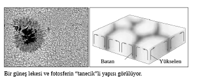
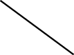
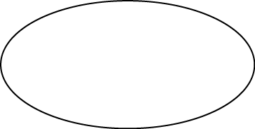
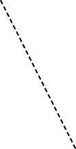
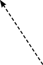
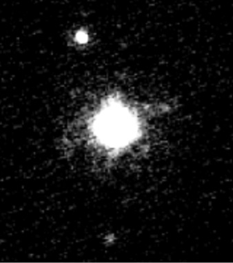

Çekirdek
2. Bölüm - GÜNEŞ SİSTEMİ
5- Güneş nedir?
Yıldızlardan gelen ışıkları inceleyerek, içlerindeki elementleri saptamaya yarayan spektroskopun 1859’da keşfinden kısa bir süre sonra, Güneş’in de aslında bir yıldız olduğu ya da geceleri gökyüzünü dolduran bütün o nokta büyüklüğündeki ışıkların gerçekte birer Güneş olduğu anlaşıldı.
Güneş, Dünya’ya en yakın yıldızdır; ondan yaklaşık 150.000.000 km ya da yaklaşık 8 ışık dakikası uzaktadır. Gökbilimciler bu uzaklığı Astronomik Birim (AB) denen bir birim olarak kabul etmişlerdir ve onu uzaydaki küçük mesafeleri ölçmek için kullanırlar. Gezegenimiz Dünya, 4,56 milyar yaşındaki bu yıldızın çevresinde döner. Ama yalnızca Dünya değil, onunla birlikte yedi gezegen, beş cüce gezegen, gezegenlerin 160’ı aşkın uydusu, milyarlarca asteroit ve kuyrukluyıldız da döner. Bütün bu cisimler yaklaşık bir ışık yılı çaplı bir sistem oluşturur. Bu sistem, merkezdeki yıldızın adıyla anılır: Güneş Sistemi.

Güneş’in çapı 1.392.000 km (Dünya’nın çapının yaklaşık 109 katı), kütlesi 2 x 1030 kg (Dünya’nın kütlesinin 333.000 katı) ve ortalama yoğunluğu da 1,4 g/cm3’tür (Dünya’nın yoğunluğunun yaklaşık dörtte biri).
Güneş Sistemi’nin en büyük cismi, sistemin yıldızı olan Güneş’tir. Sistemdeki bütün gezegenlerin, uyduların, kuyrukluyıldızların, asteroitlerin kütleleri toplamının yaklaşık 700 katı kütlesi vardır. Bir başka deyişle Güneş’in kütlesi sistemdeki toplam kütlenin yüzde 99,86’sını oluşturur. Bu dev kütlenin yarattığı kütleçekim etkisiyle Güneş, sistemdeki bütün cisimleri değişik yörüngelerde kendisine bağlı tutar.
Gezegenlerle karşılaştırıldığında, dev bir gökcismi gibi duran Güneş, Samanyolu’ndaki birçok yıldıza göre küçük bir yıldızdır. Ondan çok daha büyük yıldızlar vardır. En büyük yıldızlar Güneş’in 100 katı kütleli olur. Ama Samanyolu’ndaki yıldızların ortalama kütlesi Güneş’inkinin yarısı kadar olduğundan, kütle sıralamasında ilk yüzde 10’luk dilimde yer alır. Bir başka deyişle bu küçük kütlesine karşın Güneş, gökadamızdaki on milyarlarca yıldızdan daha kütlelidir. Bunun yanında Samanyolu’ndaki yıldızların yüzde 85’inden de daha parlaktır.
Küçük kütleli bir yıldız olması, Güneş’i uzun ömürlü yapar. Yıldızların büyüklükleriyle ömürleri ters orantılıdır. Büyük yıldızlar az, küçük yıldızlarsa çok yaşar. Yaklaşık 4,56 milyar yaşında olan Güneş’in daha 5-6 milyar yıllık ömrü vardır.
Güneş de tıpkı Dünya ve öteki gezegenler gibi kendi ekseninde döner. Ancak katı olmadığından dönüş süresi ekvatorunda (25 gün) ve kutuplarına yakın bölgelerde (36 gün) farklıdır. Güneş bulunduğu noktada hareketsizmiş gibi durur. Bu doğru değildir. Hem gezegenlerin kütleçekim etkisi nedeniyle olduğu yerde bir salınım yapar, hem de saatte 800.000 km’lik bir hızla Samanyolu içinde yol alır; tabi onunla birlikte bütün Güneş Sistemi de ilerler.
Şimdiye kadar yapılan gözlemlerde, Güneş’te 67 değişik elementin bulunduğu anlaşılmıştır. Ancak bugünkülerden daha duyarlı aygıtlarla Güneş’te çok daha az miktarlarda bulunan başka elementler de zamanla keşfedilebilir. Güneş’in çekirdek dışındaki katmanlarının kimyasal bileşimi hâlâ ilk oluştuğu dönemdeki bileşimine benzer: Yüzde 71 hidrojen, yüzde 27 helyum, yüzde 1,5 oksijen, karbon, azot ve yüzde 0,5 kadar da öteki elementler. Kuşkusuz Güneş’in çekirdeğindeki oran, orada sürekli enerji üretilirken hidrojenin helyuma dönüşmesiyle zaman içinde biraz değişmiştir. Oluşumundan bu yana Güneş’in çekirdeğindeki hidrojen oranının yüzde 35 (çekirdeğin merkezinde) ila yüzde 65’e (çekirdeğin en dış bölümlerinde) kadar gerilemiş olduğu tahmin ediliyor.
Bütün bu elementler Güneş’te gaz ya da katı halde değil, plazma halinde bulunur. Plazma, yüksek enerjili, elektrik yüklü atomlardan ve elektronlardan oluşan bir karışımdır. Bu halde elementlerin çekirdekleri ve elektronlar birbirlerine bağlanmış değillerdir. Çekirdekler ve elektronlar rasgele ve yüksek hızlarda dolaşırlar.

Samanyolu’nda Güneş’ten çok daha büyük yıldızlar vardır. Yine de bunlar sayıca azdır ve yıldızların çoğunluğunu Güneş gibi küçük yıldızlar, hatta ondan daha küçükler oluşturur.
Doğal plazma yalnızca yüksek sıcaklıklarda ya da düşük sıcaklıktaki boşlukta (vakumda) var olabilir. O nedenle maddenin bu dördüncü haline Dünya’da doğal olarak çok az rastlanır. Plazma halinde madde yalnızca yıldırımlarda, auroralarda ve çok sıcak alevlerde görülür. Öte yandan plazma, Evren’de maddenin en bol bulunduğu haldir. Çünkü parlayan bütün yıldızlar plazma halindeki maddeden oluşur. Bunun yanında hem yıldızlar arası uzayda, hem de gökadalar arası uzayda madde genellikle plazma halinde bulunur.
6- Güneş nasıl bir yıldızdır?
Bilim insanları Evren’de 125 milyar dolayında gökada bulunduğunu tahmin ediyor. Bunlardan biri de gökadamız Samanyolu’dur. Hesaplara göre Samanyolu’nun içinde 200 milyar kadar yıldız vardır. Bu büyükçe gökadanın sarmal kollarından birinde, kenara yakın bir bölgede orta boylu (hatta küçük sayılabilecek), sıradan bir yıldız yer alır. Biz ona Güneş deriz. Güneş yüzeyinin sıcaklığı 5500°C’tır. Her ne kadar kayaları buharlaştırmaya yetecek kadar yüksek olsa da bu sıcaklık, bazı başka yıldızlarla karşılaştırıldığında pek de yüksek sayılmaz. Yüzey sıcaklığı bir yıldızın rengini belirler. 5500°C’lık yüzey sıcaklığıyla Güneş, sarı renkli bir yıldızdır. Boyutları da aslında normalden biraz daha küçük olduğu için sarı cüce diye bilinen yıldız grubuna girer.
Güneş olmasa Dünya çıplak bir kaya gibi, ıssız, çorak, karanlık ve donmuş bir gezegen olurdu. Güneş’in ışınları Dünya’nın atmosferindeki olayları ve yeryüzündeki yaşamı ayakta tutar. Eski toplumların büyük bölümü bu muazzam gücün farkına varmış ve yaşamın kaynağı olan Güneş’e tapmıştır.
Güneş’in gücü ve uzaya her an yaydığı enerji, gerçekten de muazzam boyuttadır. Eğer Güneş’in yalnızca bir saniyede uzaya yaydığı bütün enerji depolanabilseydi, bu enerji Dünya’nın bir milyon yıllık enerji gereksinimini karşılardı. Bilim insanları, Güneş’in nasıl işlediğini, uzaya yaydığı o muazzam enerjiyi nasıl ürettiğini ve gerçekte nasıl bir yapısı olduğunu yüzyılı aşkın bir süredir anlamaya, öğrenmeye, bilmeye çalışıyor.
Ancak 1930’lu yıllara değin Güneş’in gücünün nereden kaynaklandığını kimse bilemedi. 1800’lü yılların başında, gökbilimciler onun da yeryüzündeki sıradan bir ateş gibi yandığını düşünüyorlardı. Böyle bir ateşin yakıtı da yine doğal olarak bilinen en temel yakıt olan kömür olabilirdi. Ne var ki kömür çabuk yanan bir yakıttı ve Güneş’in bütün kütlesi kömürden olsa, yalnızca 5-6 binyılda yanıp tükenmesi gerekirdi. Bu hesap da aslında o dönemde yaygın olan inanışa uygundu; çünkü insanlar o sıralarda Dünya’nın zaten yaklaşık 6000 yaşında olduğunu düşünüyorlardı.
Ne var ki 1800’lü yılların ortalarında bir bilim dalı olarak yeni yeni gelişen jeoloji, dinsel kökenli bu genel yanlış inanışa karşı durmaya başladı. Kaya tabakalarını inceleyen jeologlar, Dünya’nın gerçekte çok çok daha yaşlı olması gerektiğini düşünüyorlardı. Eğer Dünya daha yaşlıysa, Güneş’in de yaşlı olması beklenirdi. O zaman Güneş’te kömürden çok daha uzun ömürlü bir yakıt kullanılıyor olmalıydı. Gökbilimcileri uzun süre uğraştıran önemli bir sorun oldu bu.
Bunu öğrenmek için bilim insanları önce Güneş’in içeriğini araştırdı. Bunu da Güneş’ten gelen ışınların tayflarını inceleyerek yaptılar. Güneş’in büyük bölümünün Evren’de en bol bulunan ve en basit element olan hidrojen olduğu anlaşıldı. İşin ilginç yanı, 1870’te Güneş’te yeryüzünde daha önce hiç rastlanmamış bir elementin de bulunduğu fark edildi. Yunan Güneş Tanrısı Helios’un adından dolayı bu yeni elemente helyum adı verildi. Belki de Güneş’in gücü bu elementlerde gizli olabilirdi.
Güneş’in yakıt gizeminin çözülebilmesi için hem atom kuramının gelişmesi, hem de Einstein’ın E=mc2 formülünü bulması gerekti. Sonunda 1930’lu yıllarda Güneş’in yakıtının ne olduğunu anlaşıldı. Bu gizemli yakıt maddenin yapısında, onun derinliklerinde gizliydi. Güneş’in muazzam gücü aslında atomu bir arada tutan kuvvetlerde saklıydı.

Güneş hidrojen ve helyumdan oluşan, merkezi milyonlarca derece sıcaklıkta yanan, dev bir plazma toptur. Merkezdeki çekirdek bölümü, sudan 150 kat daha yoğundur; sıcaklığı da 15 milyon derecedir. Böylesine korkunç bir sıcaklıkta ve basınç altında birbirleriyle çarpışan hidrojen çekirdekleri, füzyon tepkimesiyle kaynaşır ve helyum çekirdeklerine dönüşür. Bu çarpışma-kaynaşmayla oluşan yeni çekirdeğin kütlesi, çarpışma öncesindeki hidrojen çekirdeklerinin toplam kütlesinden çok az daha hafiftir. İşte, Güneş’in o muazzam enerjisi, bu çok küçük kütle farkından kaynaklanır. Bu küçük kütle E=mc2 formülünün gösterdiği miktarda enerjiye dönüşür. Güneş’in çekirdeğinde her saniye yaklaşık 600 milyon ton hidrojenden 596 milyon ton helyum oluşur. Aradaki 4 milyon tonluk kütle de enerjiye dönüşür. Bir saniye içinde ortaya çıkan bu enerji, yaklaşık bir megatonluk bir milyar atom bombasının aynı anda patlamasıyla ortaya çıkan enerji kadardır. Bu işleyiş 4,56 milyar yıldır her saniye yinelenir.
Çekirdekte ortaya çıkan enerji, Güneş’in dev kütlesinin oluşturduğu, içe doğru, Güneş’i çökertmeye çalışan kütleçekim kuvvetini dengeler. Güneş aslında hassas bir dengede durmaktadır. Ortaya çıkan muazzam enerji fotonlarla, ışıma yoluyla dış katmanlara doğru taşınır.
Ama bu taşıma Güneş’in içindeki sıra dışı yoğun ve sıcak koşullarda aşırı derecede yavaş olur. Çekirdek öylesine yoğundur ki fotonlar sürekli başka parçacıklarla çarpışır, yok olur ve yeniden oluşur. Çekirdekten konveksiyon bölgesine kadar olan yaklaşık 500.000 km’lik yolda, ışıma bölgesinde ilerlerken fotonların hızı saniyede yalnızca 0,1 mm (milimetre) kadardır. Yüzeye yaklaştıkça yoğunluk azalır, fotonların hızı artar. Enerji iletiminin konveksiyonla gerçekleştiği konveksiyon bölgesi 10 günde geçilir. En sonunda yüzeye ulaşan enerji fotonlarla uzayda ışık hızıyla yayılır.

Güneş’in tabakaları
Güneş’in içi birbirinden farklı özellikler taşıyan üç bölgeden oluşur. Merkezde çapı yaklaşık 170.000 km (ilk yüzde 25’lik bölüm) olan çekirdek bulunur. Güneş’in kütlesinin yarısı burada toplanmıştır. Sıcaklık merkezde 15 milyon dereceyi (kenarlarda 7 milyon derece), yoğunluk 150 g/cm3’ü ve basınç da yeryüzündekinin bir milyar katını bulur. Hidrojen atomlarının helyum atomlarına dönüşümü bu koşullar altında olur. İkinci bölge “ışıma bölgesi”dir. Yaklaşık 300.000 km kalınlığındaki (yüzde 45’lik bölüm) ışıma bölgesinin sıcaklığı, 7 milyon dereceden 2 milyon dereceye doğru azalır. Yoğunluğu da 10-0,01 g/cm3 aralığında değişir. Çekirdekte üretilen enerji, bu bölgede ışıma yoluyla yüzeye doğru taşınır. Ancak fotonların ilerlemesi çok yavaş olduğundan, bu iletim 30.000-170.000 yıl sürer. Konveksiyon bölgesi çok hareketlidir. Sıcaklığın 2 milyon dereceden 5500°C’a, yoğunluğun da 0,01 g/cm3’ten daha düşük bir düzeye indiği bu bölgede büyük konveksiyon hücreleri bulunur. Enerji plazmanın hareketiyle yüzeye iletilir. Yüzeye gelen plazma soğur ve dibe iner; sonra ısınıp yine yüzeye çıkar.
Güneş’in katı bir yüzeyi yoktur. Yaklaşık 500 km kalınlıktaki yüzey bölümüne fotosfer denir. Çok etkin bir yapısı olan fotosferde 700-1000 km çapında milyonlarca “tanecik” bulunur. Bunlar konveksiyon süreciyle alttan enerji taşıyan plazmanın oluşturduğu yapılardır. Ömürleri en çok on dakika sürer; oluşup yok olurlar.
Işıma
bölgesi
Işıkküre
(fotosfer)
Renkküre
(kromosfer)
Taç
(korona)
Konveksiyon bölgesi


Güneş’in çevresinde milyonlarca kilometre uzanan, plazmadan “atmosfer”e korona denir. Sıcaklığı 1-3 milyon derecedir. Yukarıda görüldüğü gibi ancak “tam güneş tutulması” sırasında, Güneş’in parlaklığı Ay tarafından örtüldüğünde görülebilir.
Güneş’in en dıştaki üç katmanı Güneş’in atmosferini oluşturur. Bunlardan ilki Yunanca “ışık topu” (ya da “ışık küre”) anlamına gelen fotosfer, Güneş’in görünür yüzeyidir. Fotosfer yaklaşık 500 km kalınlıkta, sıcak (5500°C) ve opak bir katmandır. Güneş’in enerjisi buradan yayılır.
Yunanca “renk topu” (ya da “renk küre”) anlamına gelen kromosfer, fotosferin üstünde yer alır ve 10.000 km kadar uzanır. Dünya’dan yalnızca tam güneş tutulmaları sırasında (Ay, Güneş’in parlaklığını örttüğünde) görülebilir. İçerdiği bol hidrojen nedeniyle kırmızı renktedir. Kromosferin şaşırtan yanı Güneş’ten uzaklaştıkça bu tabakanın sıcaklığının artmasıdır; 5500°C’dan 8000°C’a kadar çıkar. Bu, bir kamp ateşinden uzaklaştıkça daha iyi ısınmak gibi oldukça garip bir durumdur. Kromosferin ortalama sıcaklığı 15.000°C’dır.
Güneş atmosferinin en üst katmanı “güneş tacı”dır. Bu katman için Latincede taç anlamına gelen “korona” sözcüğü de kullanılır. Çok sıcak ve seyreltilmiş plazmadan oluşur. Uzayda milyonlarca kilometre öteye kadar uzanır ve sıcaklığı da 2 milyon dereceyi bulur. Tam güneş tutulmaları sırasında Güneş’in çevresinde etkileyici beyaz bir hale olarak görünür.
7- Güneş lekesi nedir?
Çıplak gözle bakıldığında Güneş, çok parlak ama dikkat çekici herhangi bir özelliği olmayan bir daire şeklinde görünür. Ne var ki Güneş dingin bir şekilde, sakin sakin yanan ve uzaya birçok dalga boyunda ışık yayan dev bir küre değildir. Tersine, hem yüzeyinde hem de atmosferinde çok garip olayların olduğu, dinamik bir gökcismidir. Yüzeyinde yaklaşık Türkiye büyüklüğünde milyonlarca kabarcık vardır. Bu kabarcıklar alttan gelen sıcak plazma nedeniyle sürekli “fokurdar”. Bunun yanında atmosferinde güneş parlaması denen ve genellikle halka şeklinde olan dev bulutlar sürekli oluşur ve yok olur. Bunlar Güneş’in o bölgesindeki manyetik alan doğrultusunda ilerler ve şekil alır. Bu plazma halkaları bazen Jüpiter büyüklüğünde bir gezegeni bile içine alacak denli büyük olabilir. Zaman zaman bu bulutlar dışa doğru şiddetle patlar ve uzaya büyük miktarlarda plazma püskürtür. Güneş’in yüzeyinde gerçekleşen bütün bu olaylar belirli bir periyotta artar ve azalır.


Galilei, kendi geliştirdiği teleskopla Güneş’in görüntüsünü bir kâğıdın üzerine düşürmüş ve lekelerin üstünden geçerek onları ilk kez kaydetmiştir. Arka arkaya yaptığı gözlemlerle bu lekelerin aynı yönde ilerlediğini, yani aslında Güneş’in de tıpkı Dünya gibi kendi ekseninde döndüğünü fark etmiştir.
Binlerce yıl boyunca yeryüzündeki birçok kültürde Güneş’in yaşam veren, kusursuz bir küre olduğuna inanılmıştır. Ancak yaklaşık 400 yıl önce, teleskoplu gözlemlerin başlamasıyla birlikte, bu inanış yıkılmıştır. İlk gözlemleri yapan Galileo Galilei, Güneş’in görüntüsünü kâğıt üzerine düşürmüş ve o görüntüde birtakım lekeler olduğunu görmüştür. Galilei’den bu yana Güneş lekelerinin gelişimi sürekli kaydedilir. Artık onlara ilişkin büyük bir bilgi birikimi oluştu ve bu lekelerin Güneş’teki başka olaylarla olan ilişkileri de anlaşılmaya başlandı.
Lekeler, Güneş’in yüzeyinde görülen geçici oluşumlardır. 11 yıllık bir periyotta artar ve azalırlar. En az oldukları dönemde Güneş’in yüzeyinde hiç leke olmayabilir. Bu durum birkaç hafta ya da ay sürebilir. Sonra yeni lekeler ortaya çıkmaya başlar. Yeni lekeler, ekvatorun yaklaşık 35° kuzeyinde ve güneyinde oluşur. Genellikle çiftler halinde, hatta çiftlerden oluşan gruplar halinde ortaya çıkarlar. Durgun değildirler. Çevrelerinde sürekli bir hareket vardır ve kendileri de hareket eder, şekil değiştirirler. Zamanla sayıları artar ve ortalama enlemleri de giderek ekvatora yaklaşır. En üst düzeye ulaştıklarında sayıları 100’ü aşabilir.
Güneş lekeleri, yaklaşık Dünya büyüklüğünde bölgelerdir. Buralarda sıcaklık, ortalama yüzey sıcaklığından 1500-2000°C daha düşüktür. Yani lekeler çevrelerine göre daha “serin”dir. Bu nedenle de daha az parlaktırlar ve bize “siyah” görünürler; ama aslında siyah değildirler. Eğer bir güneş lekesi, Güneş’in yüzeyinden sökülüp uzaya yerleştirilebilseydi, dolunaydan 10 kat daha parlak görünürdü. Güneş lekeleri gerçekte en çok 5000 km derine kadar inen, yüzeysel oluşumlardır. Lekelerin altındaki bölgenin “serinliği” daha derinlerde ortadan kalkar.
Peki, güneş lekelerinin Dünya için ne önemi vardır? 150 milyon km uzaktan, Güneş’teki lekelerin, çevresine göre biraz daha serin olan bölgelerin, Dünya üzerinde bir etkisi olabilir mi?
Dünya’nın basit bir manyetik alanı vardır. Bir manyetik kuzey kutbu, bir de manyetik güney kutbu bulunur. Manyetik alanı da bu iki kutbun arasında oluşmuştur. Ama Güneş’te durum çok farklı ve karmaşıktır. Güneş’in de manyetik kuzey ve güney kutbu vardır. Ancak bu kutuplar sabit değildir, yaklaşık 11 yılda bir yer değiştirir. En son 2001 yılının başlarında yer değiştirmişlerdir. Aslında manyetik kutupların yer değiştirmesi yalnızca Güneş’e özgü bir durum değildir. Dünya’nın manyetik kutupları da 5000 yıl ile 50 milyon yıl arasında değişen aralıklarla yer değiştirir. Son değişim, günümüzden 740.000 yıl önce olmuştur. Bir sonraki değişimin ne zaman olacağı ise bilinmemektedir. Ancak Güneş’in manyetik kutuplarının, Güneş’in yüzeyindeki manyetik etkinliklerin en üst düzeye çıkacağı 2012’de bir kez daha yer değiştireceği bilinmektedir.
Güneş’in manyetik alanı, yüzeyindeki etkinliklerin (güneş lekeleri, plazma püskürmeleri, patlamalar vs.) en alt düzeye indiği dönemde, Dünya’nın manyetik alanına benzer, ama ondan yüz kat daha güçlüdür. Güneş’in etkinlikleri artmaya başlayınca, manyetik alan da değişmeye, karmaşıklaşmaya başlar. Manyetik alan çizgileri Güneş yüzeyinin herhangi bir yerinden çıkıp başka bir yerinden girer. Güneş’in yüzeyinde böyle on binlerce giriş-çıkış noktası olur. Manyetik alan çizgileri kuşkusuz gözle görülmez; ama sürekli oluşan kısa

Sıradan bir güneş lekesinin boyutlarının Dünya ile karşılaştırılması.
süreli halka şeklindeki plazma yapılar, onları görünür kılar ve manyetik alanları açıkça gözler önüne serer (tıpkı bir kâğıdın üzerine saçılmış demir tozlarının alttaki mıknatısın manyetik alan çizgileri boyunca toplanarak onları bir anlamda görünür kılması gibi). Bu görece küçük manyetik bölgeler yaklaşık 40 saatlik dönemler içinde ortaya çıkar, yer değiştirir ve yok olur.
Gelişmiş gözlem aygıtlarıyla Güneş yüzeyinin manyetik yapısı incelenmiş ve manyetik haritası çıkartılmıştır. Bu haritadan, Güneş yüzeyinde manyetizmanın en güçlü olduğu bölgelerin aslında Güneş lekeleri olduğu ortaya çıkmıştır. Lekelerdeki manyetik alan şiddeti, yüzeyin öteki bölgelerindekinin birkaç bin katıdır. Bir başka deyişle Güneş lekeleri gerçekte manyetik alanın çok şiddetli olduğu bölgelerde ortaya çıkan yapılardır. Buralardaki manyetik enerji, Güneş’in iç bölgelerinden gelen ısının yüzeye çıkmasını bile engelleyecek denli güçlüdür. Güneş lekelerinin çevrelerine göre daha az sıcak oluşunun bundan kaynaklandığı düşünülmektedir.
Güneş parlamalarının, püskürmelerin ve patlamalarının büyük bölümü, güneş lekelerinin bulunduğu bölgelerde gerçekleşir. Bir güneş lekesi manyetik enerjisini boşalttığında, ortaya Güneş Sistemi’ndeki en büyük patlama çıkar. Bu patlamalar Güneş’te depremlere yol açar. Güneş yüzeyindeki depremlerde, saatte 250.000 km hızla ilerleyen 3 km yüksekliğinde plazma dalgaları oluşabilir. Güneş’teki depremlerin Dünya için bir tehlikesi yoktur; ama bu patlamalarla uzaya çok büyük miktarlarda plazma püskürtülür. Plazmayı oluşturan yüksek enerjili atomaltı parçacıklar, bir bulut halinde saniyede yüzlerce, hatta binlerce kilometre hızla yol alır. Bu devasa püskürmelerin yönü bazen Dünya’ya doğru olur ve bulut yaklaşık iki günde gezegenimize ulaşır.

Teleskopla birlikte başlayan sistemli ve kayıtlı Güneş gözlemleri sayesinde, Güneş’in periyodik etkinliği açık bir şekilde anlaşılmıştır.


Güneş’in iki temel manyetik kutbunun yanında, yüzeyinde de binlerce manyetik kutup bulunur (solda). Manyetik alan çizgileri gözle görülmez; ama bu alan çizgileri boyunca sık sık oluşan halka şeklindeki plazma püskürmeleri, onları görünür kılar (sağda).
Dünya’nın kendi manyetik alanı tıpkı koruyucu bir kalkan işlevi görür ve gelen parçacıkların büyük bölümünün yeryüzüne erişmesini engeller. Güneş’ten gelen yüksek enerjili parçacıklar kutup bölgelerinde aurora (“kuzey ışıkları” ya da “güney ışıkları”) denen etkileyici ışık gösterilerinin ortaya çıkmasına neden olur. Çok şiddetli patlamalardan sonra oluşan bu auroralar, alçak enlemlerden bile görülebilir. Ne var ki Dünya’ya gelen bu parçacıkların görsel etkisinden başka etkileri de olur. Bunlar, yörüngedeki uyduların işleyişini bozabilir, iletişim ağlarını çökertebilir, hatta elektrik şebekelerine bile zarar verebilir. Elektronik aygıtların ve sistemlerin günlük yaşamın temelini oluşturmaya başladığı son yüzyıldır böylesi bir olay yaşanmış değildir. Ama yönü Dünya’ya dönük çok şiddetli bir güneş patlamasının çok büyük olumsuz etkileri olabileceği tahmin edilmektedir.
8- Gezegen nedir?

18 Ağustos 1980’de kaydedilmiş bir güneş patlaması.
Eski Yunanlar gökyüzünde yıldızlardan farklı hareket eden ışıklı yedi gökcismi saptamışlar ve adlarını da kendi mitolojilerinden vermişlerdi: Selene (Ay), Helios (Güneş), Hermes (Merkür), Afrodit (Venüs), Ares (Mars), Zeus (Jüpiter) ve Kronos (Satürn). Bunlara genel olarak “gezgin” anlamına gelen planet diyorlardı. Dünya, o dönemin inanışına göre Evren’in merkezi olduğundan, bir “gezgin” olarak kabul edilmiyordu. Mikolaj Kopernik’in Göksel Kürelerin Dönüşü Üzerine adlı kitabını yayımladığı 1543 yılına kadar da Dünya’nın bir gezegen olduğu düşünülmedi. Kopernik kitabında, Dünya’nın gerçekte Güneş’in çevresinde dönen sıradan bir gezegen olduğunu ileri sürüyordu. Ona göre Ay da gezegen değil, Dünya’nın çevresinde dönen bir gökcismiydi.
Teleskoplu gözlemler sayesinde, binlerce yıldan sonra ilk kez yeni gezegenler keşfedilmeye başlandı. 1781’de Uranüs keşfedildi. Mars ile Jüpiter’in arasında yer alan Asteroit Kuşağı’nın en büyük asteroidi olan Ceres, 1801’de keşfedildiğinde sekizinci gezegen olarak kabul edildi. Ertesi yıl aynı bölgede keşfedilen Pallas da dokuzuncu gezegen oluverdi. Ne var ki bu keşiflerle birlikte gökbilimcilerin kafasında birtakım sorular da oluşmaya başladı. Çünkü öteki gezegenler teleskopla bakıldığında küçük daireler şeklinde görülürken, bu son ikisi yalnızca noktasal birer ışık kaynağı gibi görünüyordu. O zaman İngiliz gökbilimci William Herschel, 1802’de, büyük gezegenlerin uydularını ve bu minik gezegenleri tanımlamak için, Yunanca ‘‘yıldız benzeri’’ anlamına gelen ‘‘asteroit’’ adının kullanılmasını önerdi. Ancak bu öneri, minik gezegenlerin sayısının 15’e ulaştığı 1851’e gelene dek kabul görmedi. 1851’de Güneş Sistemi’nde 23 gezegen bulunduğu düşünülüyordu. 1852’deyse minik gezegenlerin Herschel’in önerdiği gibi asteroit olarak sınıflandırılmasına karar verilince, gezegen sayısı birden sekize düştü; altı yıl önce, 1846’da Neptün keşfedilmişti. Bu olaydan yaklaşık 80 yıl sonra 1930’da Plüton’un bulunmasıyla gezegenlerin sayısı dokuza çıktı.
Çoğumuzun bildiği gezegen tanımı şöyledir: Bir yıldızın çevresinde dolanan, ondan gelen ışığı yansıtan ve asteroitlerden büyük olan gökcismi. Pek de kesin olmayan bu tanıma göre, 76 yıl boyunca Güneş Sistemi’nde dokuz gezegen olduğunu bildik. Gezegen tanımındaki belirsizlik, gerçekte gökbilimcileri de rahatsız ediyordu. Ama uzun bir süre ona bir alternatif de aranmadı; taa ki son 15 yılda rahatsızlıkları arttırıcı birtakım önemli keşifler yapılıncaya kadar. Bunların en önemlilerinden biri, belki de bilim insanlarını “artık yeni ve kesin bir tanım yapmamız gerek” diye zorlayanı, 2005’te Kuiper Kuşağı’nda (Neptün’ün ötesinde, buzdan oluşmuş, küçüklü büyüklü binlerce gökcisminden oluşan -tıpkı Asteroit Kuşağı gibi– yayvan bir simit şeklinde, genişçe bir kuşak) Plüton’dan daha büyük bir gökcisminin (Eris) keşfedilmesiydi. Ya Eris, Güneş Sistemi’nin 10. Gezegeni olarak kabul edilecek ve ileriki yıllarda yapılacak yeni keşiflerle gezegen sayısı artabilecekti ya da Plüton gezegen olmaktan çıkartılacaktı.
Aslında Plüton, keşfedildiği günden beri gökbilimciler için bir huzursuzluk kaynağı olmuştu. 1900’lü yılların başında gökbilimciler Neptün’ün yörünge hareketinde birtakım düzensizliklere yol açan bir X gezegeni olması gerektiğini düşünüyor ve onu arıyorlardı. Bu nedenle 1930’da Plüton’un keşfi çok da şaşırtıcı olmadı. Keşif şaşırtıcı değildi ama, yeni gezegen biraz şaşırtıcıydı. Plüton, Güneş Sistemi’nin en dışında yer alıyordu ve bir gaz devi değil de, tersine küçücük, karasal bir gezegendi. Kütlesi Ay’ın kütlesinin altıda biri kadardı. Yörüngesi öteki gezegenlerinkilere göre çok daha basık bir elips şeklindeydi. Plüton, bu yörünge üzerinde ilerlerken, zaman zaman Güneş’e Neptün’den daha yakın konuma geliyordu. Ayrıca yörünge düzlemi öteki gezegenlerin düzlemlerine göre daha büyük açılıydı.

Dysnomia
Nix
Charon
Namaka
Hi’iaka
Weywot
Hidra
Vanth
Eris
(2005)
Sedna
(2003)
Orcus
(2004)
2007 OR10
(2007)
Quaoar
(2002)
Eris
(2005)
Makemake
(2005)
Haumea
(2004)
Bilinen en büyük trans-Neptün cisimleri ve onların uydularının Dünya’ya göre büyüklükleri görülüyor.
1992’de Kuiper Kuşağı’na ait ilk gökcismi keşfedildiğinde, gökbilimcilerin Plüton’a yönelik kuşkuları iyice arttı. Her geçen yıl Neptün’ün ötesinde, yörüngeleri Plüton’unkine benzeyen küçüklü büyüklü gökcisimleri -bunlara trans-Neptün cisimleri de denir- keşfedilmeye başlandı. Ama Plüton onların hepsinden büyüktü. Ayrıca Plüton’un büyükçe bir uydusu da (Charon) vardı; gerçekte böylesi büyük uydular (bir başka örneği Ay’dır) gökbilimcilerin oluşumunu açıklamakta zorlandığı gökcisimleridir. Bir süre sonra, Kuiper Kuşağı cisimlerinin on kadarının çevresinde de bazı uyduların olduğu keşfedildi. Bu arada 2004’te çapı 1000 km kadar olan (Plüton’unkinin yarısı) Sedna bulundu. Ardından da 2005’te Plüton’dan daha büyük olan Eris keşfedildi.
Bu gelişmelerin yanında, bir başka önemli gelişme daha yaşanıyordu. Gökbilimciler ilk kez 1995’te bir yıldızın çevresinde dönen bir gezegen keşfetti. Kısa süre sonra ona, yeni gezegenler eklendi. Her geçen gün yenileri eklenmeye devam ediyor. Böylesi gezegenlerin sayısı 2011’in ortalarında 570’i aşmış durumdadır. Ne var ki bunların bazılarının yörüngeleri, Güneş Sistemi’ndeki gezegenlerinkine pek de benzemiyor.
Bir başka gelişme de, gezegen ile yıldız arasındaki ayrımı zorlayan kahverengi cücelerin keşfiydi. Büyüklükleri, gaz devi gezegenlerle en düşük kütleli yıldızların arasında yer alan gökcisimlerine kahverengi cüce denir. Gerçekte bunların rengi kahverengi değildir; yüzey sıcaklıklarına göre koyu kırmızı ile macenta arasında değişir. Genellikle kahverengi cücelerin kütlesinin alt sınırının 13 Jüpiter kütlesi olduğu ve üst sınırın da 75-80 Jüpiter kütlesi olduğu kabul edilir. Ana kol yıldızların merkezinde gerçekleşen nükleer tepkimeler bunların merkezinde olmaz. İlk kahverengi cücenin (Teide1) 1995’te keşfinden bu yana yüzlercesi keşfedilmiştir. Bazı kahverengi cüceler bir yıldızın çevresinde döner, bazıları birbirinin çevresinde dönen ikili sistemler halinde bulunur ve bazıları da uzayda serbestçe dolaşır (Onlar da tıpkı yıldızlar gibi Samanyolu’nun merkezinin çevresinde döner). Bazı kahverengi cücelerin çevresinde dolanan gezegenler olduğu bile gözlenmiştir. NASA’nın Aralık 2009’da Dünya’dan 525 km uzakta yörüngeye yerleştirdiği WISE adlı X-ışını gözlem uydusu sayesinde Güneş Sistemi’nde daha önce gözlenemeyen asteroitler ve kuyrukluyıldızlar saptanacaktır. Bunun yanında yakın çevremizdeki kahverengi cüceler de keşfedilecektir. Gökbilimciler Samanyolu’nda yıldız sayısının yüzde 1-10’u kadar kahverengi cüce olabileceğini tahmin ediyor.

Bu, Güneş benzeri bir yıldızın çevresinde dönen bir gezegenin doğrudan elde edilmiş (kızılötesi dalga boyunda) ilk görüntüsüdür. Yıldız (adı biraz uzun ve garip: 1RXS J160929.1 210524), Güneş’ten yaklaşık 470 ışık yılı ötededir ve yalnızca birkaç milyon yaşındadır. Onun çevresinde dönen gezegenin 8 Jüpiter kütlesinde olduğu ve yıldızından 330 AB uzakta bir yörüngede döndüğü hesaplanmıştır.
Bütün bu gözlem ve keşifler Güneş Sistemi’ne ve gökcisimlerine ilişkin algı ve anlayışımızı değiştirmiştir. Yeni anlayışımızı ortaya koyan, kesin bir gezegen tanımının yapılması zorunlu olmuştur. Bunun üzerine Uluslararası Astronomi Birliği’nin (International Astronomy Union –IAU) Ağustos 2006’da yapılan toplantısında, yeni bir gezegen tanımı yapılmıştır. Buna göre bir gökcisminin gezegen olarak tanımlanabilmesi için üç koşulu sağlaması gerekir:
1) Güneş’in (ya da bir yıldızın) çevresinde dönüyor olması,
2) Küre şeklinde olmasını sağlayacak kadar büyük bir kütlesi olması,
3) Yörüngesi civarındaki herhangi bir cisimden daha büyük kütleli olması (yakın çevresini temizlemiş olması, yani çevresindeki küçük cisimleri, kütleçekim etkisiyle başka yörüngelere göndermiş olması).
Bu tanım evrenseldir; bir başka deyişle Güneş Sistemi’nin dışında, başka yıldızların çevresinde dönen, gezegenler için de geçerlidir.
Bu yeni tanımla Güneş Sistemi’ndeki gezegen sayısı 76 yıl sonra dokuzdan sekize düştü. Plüton, artık bir gezegen olmaktan çıktı ve Kuiper Kuşağı cisimlerinden biri oluverdi. Ama Güneş Sistemi’ndeki bazı cisimler için yeni bir tanım da yapıldı: Cüce gezegen.

Güneş, kahverengi cüce Teide1 ve Jüpiter karşılaştırması.

Yapılan yeni keşifler ve tanımlarla birlikte gezegenlerin sayısı zaman içinde değişmiştir. Plüton’un gezegenlikten “düşürülmesi” de, 2006’da gezegen tanımının yeniden yapılmasından kaynaklanır; tıpkı 1852’de olduğu gibi.
9- Güneş Sistemi gaz ve toz bulutundan mı oluştu?
Güneş Sistemi’ndeki gezegenlerin iki temel hareketi vardır. Gezegenler, hem Güneş’in çevresinde hem de kendi eksenlerinde döner. İki hareketin yönü de aynıdır: Güneş’in kendi ekseninde döndüğü yöndedir, yani sisteme yukarıdan bakıldığında, saatin tersi yönde. Bunun yanında bütün gezegenler Güneş’in çevresinde, neredeyse aynı düzlemde ilerler. Gezegenlerin yörünge düzlemlerinde yalnızca birkaç derecelik bir fark vardır.
Güneş Sistemi’nin üyelerinin her iki dönüşünün de aynı yönde oluşu, doğal olarak hepsinin aynı kökenden geldiğini, dönen tek bir yapıdan ortaya çıktıklarını düşündürür. Gerçekte bu düşünce hiç de yeni değildir; ilk dile getirilişi 18. yüzyıla kadar uzanır. İsveçli düşünür Emanuel Swedenborg tarafından 1734’te ortaya atılmıştır. Düşünceyi, daha sonra Immanuel Kant geliştirmiştir.
Kant’a göre uzayda yavaş yavaş dönen büyük gaz bulutları kütleçekim kuvvetinin etkisiyle giderek içlerine çöker, küçülür ve yassılaşırdı; sonunda da bir yıldız ve onun çevresinde dönen gezegenler oluşurdu. Buna benzer bir oluşum modelini, 1796’da Laplace Markisi Pierre-Simon da ileri sürmüştür. Bulutsu varsayımı olarak bilinen bu model, Güneş’in ve gezegenlerin oluşumuna yönelik ortaya atılan ilk bilimsel modeldi. Buna göre ilk başta ağır ağır dönen, dev bir gaz ve toz bulutu vardı. Bulut kütleçekim kuvvetinin etkisiyle giderek küçüldü, yoğunlaştı, hızlandı ve bir dizi aşamadan geçerek Güneş’e ve onun çevresinde dönen gezegenlere, uydulara ve Güneş Sistemi’nin bütün öteki üyelerine dönüştü. İleri sürüldüğü dönemde mantıklı ve tutarlı görünen bu modelin zamanla birçok hatalı yanı olduğu anlaşıldı. Model 20. yüzyılın başlarında gözden düştü ve terk edildi.

Samanyolu gibi sarmal gökadalardaki maddenin yüzde 10 kadarı
gaz ve tozdan oluşur. Bunun da büyük bölümü, Güneş Sistemi’nden
yüzlerce, hatta binlerce kat büyük ama şekilsiz bulutsularda bulunur. Gökadamızın değişik bölgelerinde de çok sayıda bulutsu vardır.
Resimdeki Kartal Bulutsusu gibi bazılarının içlerinde yeni yıldızların doğduğu bölgeler yer alır.
Daha sonra Güneş Sistemi’nin oluşumuna yönelik yeni fikirler ortaya atıldı. Örneğin, Güneş’in yakınından geçen ya da ona hafifçe çarpan bir yıldızın Güneş’ten madde kopararak gezegenleri oluşturduğu ileri sürüldü. Bir başka teoriye göre de, bir zamanlar Güneş bir ikili yıldız sisteminin ikinci yıldızıydı. İlk yıldız süpernova yaparak içeriğinin büyük bölümünü uzaya saçmıştı ve bu hammaddeden de Güneş’in çevresindeki gezegenler oluşmuştu. Ne var ki gerçekleşme olasılıkları düşük ya da fazlasıyla zorlama olduğu hissedilen bu kuramların hiçbiri gökbilimcilerce tam olarak benimsenmedi.
1960’lı yıllarla başlayan ve günümüze dek hızla gelişen gezegen araştırmaları sayesinde, Güneş Sistemi’nin bütün üyelerine ilişkin çok büyük bir bilgi birikimi oluştu. Bu sayede daha önce anlaşılmayan birçok konu açıklığa kavuşmaya başladı; kuşkusuz bazı yeni ve zor sorular da ortaya çıkmadı değil. Zamanla gezegenlerin nasıl oluştuğuna ilişkin de bir model geliştirildi. Bugün yaygın kabul gören yeni model, Sovyet gökbilimci Victor S. Safronov’un 1960’lı yıllardaki çalışmalarıyla ortaya çıkmıştır. Laplace’ın 200 yıl önce ortaya attığı modeli çağrıştıran ama ayrıntılarda çok da farklı olan bu yeni model Güneş Sistemi’nin yapısını ve üyelerinin birçok özelliğini tutarlı olarak açıklayabiliyor. Model ilk başlarda, doğal olarak yalnızca Güneş Sistemi için kullanılıyordu. Ama başka yıldızların çevresinde dönen gezegenler keşfedildikçe, evrensel bir kuram olarak görülmeye başlandı. O yıldızların ve onların gezegenlerinin de, artık Güneş Sistemi’ndekine benzer bir süreçten geçerek oluştuğu düşünülüyor. Bu kuramın temelini oluşturan “güneş bulutsusu”na benzeyen bazı yapıları, artık güçlü teleskoplar sayesinde çevremizdeki birçok genç yıldızın çevresinde de görüyoruz.
10- Güneş nasıl oluştu?
Güneş Sistemi, içinde 200 milyar dolayında yıldızın ve yıldızların arasındaki uzayda da dev gaz ve toz bulutlarının bulunduğu büyükçe bir gökadanın içinde yer alır. Bu gaz ve toz bulutlarının büyük bölümü önceki kuşaktan bazı yıldızların kalıntılarıdır.
Günümüzden yaklaşık 4,6 milyar yıl önce Güneş Sistemi’miz de yalnızca gaz molekülleri ve toz zerreciklerinden oluşan dev bir hammadde bulutuydu. Güneş, gezegenler, kuyrukluyıldızlar, hayvanlar, bitkiler, verem bakterileri, grip virüsleri vs. hepsi bu buluttan ortaya çıkmıştır. Çapı 50-100 ışık yılı olan bulut, Samanyolu’ndaki bütün nesneler gibi gökada merkezinin çevresinde sakin bir biçimde dönüyordu. Kütlesinin büyük bölümü (yüzde 73’ü) hidrojenden oluşuyordu. Geri kalanının neredeyse tamamı helyumdu; ancak eser miktarda karbon, azot ve oksijen gibi ağır elementler ve toz parçacıkları da vardı. Sıcaklığı -250°C dolayında olan bulutun yoğunluğu santimetreküpte birkaç bin ile birkaç milyon molekül arasında değişiyordu.
Dev gaz ve toz bulutu çevreden gelen bir itme ya da çekme etkisiyle hareketlendi. (Bulut, büyükçe bir yıldızın yanından geçmiş olabilir. Kütleçekim etkisiyle bulutun durgunluğu bozulmuş ve içeriğindeki moleküller hareketlenmeye başlamış olabilir. Ya da bulutun yakınlarında gerçekleşen bir süpernovanın şok dalgalarının bulutu iterek içeriğini sıkıştırması gerçekleşmiş olabilir.) Kuşkusuz bu dev bulutu harekete geçiren etmenin ne olduğu tam olarak bilinemez. Ancak bilinen şey, bunlara benzeyen tetikleyici bir etkiyle hareketlenen bulutun içeriğinin, kütleçekim kuvveti nedeniyle merkeze doğru yönelmiş ve hafif bir dönme hareketiyle birlikte içine çökmeye başlamış olduğudur.
Bulutun hareketlenmesiyle birlikte, Güneş’i ve Güneş Sistemi’ni oluşturan süreç de başlamıştır. Sürecin başlamasından yaklaşık iki milyon yıl sonra bulutun birçok noktasında çevrelerinden daha yoğun olan “çekirdek” bulutlar ortaya çıktı. Bu bölgeler çevrelerine göre daha büyük bir kütleçekimiyle maddeleri kendilerine daha çok çekmeye başladı. Bunların kendi eksenlerinde, küçük de olsa bir dönme hareketi vardı. Bu dönme, çekirdek bulutlar küçüldükçe giderek hızlandı; tıpkı buz pateni yapan birinin kollarını kapadığında hızının artması gibi. Böylesi yüzlerce çekirdek buluttan bazılarından, bir süre sonra, aralarında Güneş’in de bulunacağı yıldızlar oluşacaktı.
Güneş’i oluşturacak çekirdek bulut, bu dönemde bir ışık yılının yüzde biri çapındaydı. Dönen buluttaki madde merkeze doğru çekiliyor, bulut giderek küçülüyor ve dönüş hızı da artıyordu. Bulutun merkezine doğru olan madde akışı sırasında, atomların ve moleküllerin birbirine sürtünmesi ısınmaya yol açıyordu. Merkez giderek ısınıyordu.
Giderek küçülen bulutun merkezinde, Güneş’ten Plüton’a kadar olan, küre şeklinde dev bir yapı oluşmaya başladı. Merkezdeki bu kürenin kütlesi kendine çektiği maddelerle sürekli arttı. Artan kütleyle birlikte büyüyen kütleçekim kuvveti de, hem giderek daha çok maddenin çekilmesine, hem de küçülmeye yol açtı. Küçülen kürenin merkezinde yalnızca sıcaklık değil, dönme hızı ve yoğunluk da giderek arttı. Güneş önyıldız aşamasına girdi. Öngüneşin kendi ekseninde belirgin bir dönüşü vardı.

Yüzlerce, hatta binlerce ışık yılı çaplı bir bulutsudan zamanla çok sayıda “çekirdek bulutsu” ortaya çıkar. Çekirdek bulutsular çevrelerine göre maddeleri daha büyük bir kütleçekim kuvvetiyle çekerler. Büyük olasılıkla her biri ileride bir yıldıza dönüşecektir.
Merkezinde öngüneş bulunan gaz ve toz bulutunun geri kalan bölümü dönme hareketi nedeniyle disk şeklini aldı. Bu yapıya güneş bulutsusu denir. (Gökbilimciler günümüzde böylesi disklerle kuşatılmış birçok genç yıldız keşfetmiştir.) Güneş bulutsusunun çapı 100-200 AB ve kütlesi de yüzde 1-10 Güneş kütlesi kadardı.
Merkezindeki sıcaklık 5.000.000°C ve yüzey sıcaklığı da 4500°C dolaylarına geldiğinde, öngüneş T-Tauri denen bir evreye girdi. Kısa süren ama manyetik olarak çok etkin bu evrede, güneş rüzgârı1 diye bilinen yeni bir etkinlik başladı. Öngüneşin küçülmesi sürerken, artık bir yandan da her saniye büyük miktarlarda elektrik yüklü atomaltı parçacık, yüksek hızlarla uzaya yayılmaya başlamıştı.
1) Güneş rüzgârı: Güneş’in atmosferinin üst kısımlarından -güneş tacından- uzaya doğru hızla akan elektrik yüklü parçacıklara güneş rüzgârı denir. Güneş rüzgârı çoğunlukla elektron ve protonlardan oluşur. Güneş tacının sıcaklığı öylesine yüksektir ki, Güneş’in kütleçekim kuvveti, yüksek enerjili parçacıkların kaçışını engelleyemez. Güneş rüzgârının hızı saniyede 300-800 km arasında değişir.
Dev gaz ve toz bulutunun hareketlenmeye başlamasından sonra geçen 40 milyon yıl içinde, öngüneşin merkezindeki sıcaklık 15.000.000°C’a ulaştı ve öngüneşin küçülmesi durdu.

Çekirdek bulutsular kendi eksenlerinde dönerler ve giderek büzülür, küçülürler. Küçüldükçe de hızları
ve sıcaklıkları artar.
Öngüneşin merkezindeki aşırı basınç ve sıcaklıkta hidrojen atomları iyonlaşmış haldeydi; yani elektronlar atom çekirdeklerinden (protonlarından) kopmuştu. Protonlar ve elektronlar öngüneşin merkezinde çok yüksek hızlarla rasgele dolaşıyordu. Protonlar, sık sık birbirleriyle karşı karşıya geliyor; ama mıknatısın aynı kutupları gibi birbirlerini itiyorlardı. Ancak sıcaklık 15.000.000°C’a ulaştığında, karşılaşan protonlar artık birbirlerini itemez oldu; artık çarpışıp birbirleriyle kaynaşmaya başladılar. Bu durumda iki protonlu yeni çekirdekler (helyum çekirdekleri) oluştu. Bir başka deyişle bu yüksek sıcaklıkta öngüneşin merkezindeki hidrojen atomları helyum atomlarına dönüşüyor ve dönüşüm sırasında da artan çok küçük bir kütleden, E=mc2 formülünün gösterdiği, büyük bir enerji ortaya çıkıyordu. Bu nükleer tepkimelerin gerçekleşmesiyle birlikte, ilk kez öngüneşin merkezinde çok büyük miktarlarda enerji üretilmeye başlandı. Kütleçekim kuvveti nedeniyle milyonlarca yıldır sürekli küçülen öngüneşin içine çöküşü, merkezinde “yaktığı” hidrojenden sağladığı güçle durdu. Öngüneş gökbilimcilerin hidrostatik denge adını verdiği kararlı bir duruma ulaştı. Artık öngüneş bir “ana kol” yıldızına dönüşmüştü. Ana kol evresi (hidrojen yakma evresi) Güneş’in yaşamının en uzun evresidir. Güneş bir ana kol yıldızı olarak yaklaşık 4,56 milyar yıldır ilk anlarındaki durumundan çok da değişmemiş haliyle ışımasını sürdürüyor. Yaklaşık beş milyar yıl daha öyle kalacağı düşünülüyor. Ancak yaşamının sonlarına yaklaştıkça başka bazı evrelerden geçecektir.
11- Güneş’in sonu nasıl olacak?
Evren’deki her şey gibi, Güneş’in de bir gün sonu gelecek. Aslında Güneş’in sonunun bütün aşamaları bilim insanları için uzun zamandır oldukça açık; çünkü Güneş’e benzeyen, ama ömürlerinin farklı aşamasındaki birçok yıldızı incelemiş ve Güneş’in sonunun nasıl olacağını çok iyi anlamış durumdalar. Ancak tıpkı Güneş Sistemi’nin doğuşunda olduğu gibi, ölümündeki aşamaların sürelerine ilişkin de kesin bir tahminde bulunamıyorlar. Örneğin Güneş’in bir ana kol yıldızı olarak geçireceği süre kimilerine göre 9-10 milyar yılken, kimilerine göre de 13 milyar yıl kadar olabiliyor.
Güneş’in merkezinde hidrojenin helyuma dönüşmesi ve bu sırada da muazzam miktarda enerji ortaya çıkması yaklaşık 4,56 milyar yıldır sürüyor. En azından bir 5 milyar yıl daha bu durumun süreceği düşünülüyor. Merkezindeki yakıtının, yani hidrojenin ancak yarısını tüketen Güneş, artık orta yaşlı bir yıldızdır.
İlk oluştuğu dönemde Güneş’in çapı bugünkünden yaklaşık yüzde 10 daha kısaydı. Aynı şekilde parlaklığı da yüzde 30-40 daha azdı. Güneş’in ömrü boyunca çapı ve parlaklığı yavaş yavaş artmıştır. Bu büyüme ve parlaklık artışı hâlâ sürüyor. Önümüzdeki bir milyar yıl içinde Güneş’in parlaklığı yüzde 10 artacak; bu da yeryüzündeki sıcaklıkların 40-50 derece

Dengesi bozulan Güneş’in çekirdeği içine çökerken, çekirdeği kuşatan ince bir tabakada nükleer tepkimeler sürecek ve hidrojen helyuma orada dönüştürülecek. Bu sırada Güneş’in dış bölgeleri de şişecek ve genişleyecek.
yükselmesine yol açacak. 3,5 milyar yıl sonraysa parlaklığı yüzde 40 daha çok olacak. Bu durumda yeryüzündeki sıcaklıklar dayanılmaz dereceleri bulacak. Dünya, bugünkü Venüs kadar sıcak bir gezegen olacak. Olasılıkla o zaman yerin binlerce metre derinliklerinde yaşayan dayanıklı birkaç bakteri türünden başka, Dünya’da hiçbir canlı olmayacak. Öyle gözüküyor ki, Dünya’da bakterilerle başlayan yaşam, bakterilerle son bulacak.
10 milyarıncı yaşgünü dolaylarında, Güneş’te köklü değişimler görülmeye başlanacak. Çünkü merkezindeki hidrojen, yani yakıtı tümüyle tükenmiş olacak. Bu da Güneş için bir anlamda sonun başlangıcı demek. Ancak Güneş’in sonu hiç de huzur dolu olmayacak. Merkezinde önceden hidrojenin kapladığı yeri, 10 milyar yıldır sürekli oluşan helyum kaplayacak. Ancak iki protonlu helyum atom çekirdekleri birbirlerini tek protonlu hidrojen çekirdeklerine göre çok daha güçlü ittiği ve hiç de bir araya gelmek istemediği için, Güneş’in merkezindeki sıcaklık onların da nükleer tepkimeye girip enerji üretmelerine yetecek düzeyin çok altında kalıyor olacak. Bu durumda Güneş artık bir ana kol yıldızı olmaktan çıkacak; çünkü merkezindeki nükleer tepkimeler ve enerji üretimi durunca, 10 milyar yıldır koruduğu hidrostatik dengeyi yitirecek. Helyumdan oluşan çekirdek bölgesi Güneş’in dev kütleçekim kuvvetinin etkisiyle içine çökmeye başlayacak. Çekirdek küçüldükçe yoğunlaşıp iyice ısınacak. Bu sırada çekirdeği kuşatan ince bir tabakada hidrojenin helyuma dönüştüğü nükleer tepkimeler ve enerji üretimi sürecek. Çekirdeğin giderek ısınması ve onu kuşatan kabukta enerji üretilmesi nedeniyle, dışa doğru bir enerji akışı olacak ve Güneş’in dış katmanları genişlemeye başlayacak. Güneş büyüdükçe yüzey alanı da genişleyecek; böylece yüzeyi giderek soğuyacak ve rengi de turuncuya, kırmızıya doğru kayacak. Yaklaşık 600-700 milyon yıl sürecek bu aşamanın sonunda, Güneş’in çapı bugünkünden 1-2 kat daha büyük, yüzey sıcaklığı 1000°C kadar daha düşük ve dolayısıyla rengi de kırmızıya yakın olacak.
Bu aşamayı izleyen 500 milyon yıl içinde Güneş’te daha köklü bir değişim olacak: Önce boyutları küçülecek ve rengi mavileşecek, ardından da hızlı bir genişleme sürecine girecek. Çapı bugünkünün 150 katına çıkacak. Her ne kadar yüzey sıcaklığı biraz düşse ve rengi kırmızılaşsa da, olağanüstü büyümesi nedeniyle o zamanki parlaklığı bugünkünün 2000 katı olacak. Ölümünün bu aşamasında Güneş tam bir “kırmızı dev” olacak. Kırmızı dev olma sürecinde aşırı şiddetlenen güneş rüzgârı nedeniyle Güneş, kütlesinin yüzde 30-40 kadarını uzaya saçacak. Kütlesindeki bu azalma nedeniyle, Güneş’in çevresinde dönen başta gezegenler olmak üzere bütün her şey üzerindeki kütleçekim etkisi azalacak ve aradaki bağ zayıflayacak. Sistemdeki her şeyin yörüngesi Güneş’ten bir miktar uzaklaşacak. Örneğin Venüs, bugün Dünya’nın olduğu yörüngeye gelirken Dünya’da Mars’ın yörüngesine yakın bir yörüngeye kayacak.
Bir süre sonra yıldızımızın çekirdeğindeki sıcaklık 100 milyon dereceye ulaşacak ve bir başka köklü değişiklik daha yaşanacak. Bu sıcaklıkta helyum atom çekirdekleri birbirlerini iten kuvveti yenip kaynaşmaya ve karbon ile oksijen atom çekirdeklerini oluşturmaya başlayacak. Bir başka deyişle Güneş’te nükleer tepkimeler ve enerji üretimi yeniden başlayacak. Merkez bölgenin içine çökmesi aniden duracak. Bu kez birkaç milyon yıl gibi kısa bir sürede süreç tersine işleyecek ve yıldızımız hızla küçülerek bugünkü çapının on katı çapında bir yıldıza dönüşecek. Yeniden denge durumu sağlanacak ve Güneş bu halde bir süre daha ışıyacak.

Çekirdeğinde hidrojen tükenen ve dengesini yitiren Güneş, ilk 600-700 milyon yıl içinde önce küçük çaplı bir büyüme geçirecektir. Bu sırada yüzey sıcaklığı da düşeceğinden rengi kırmızılaşacak ve bir kırmızı dev olacaktır. Çekirdeğinde helyum yakmaya başladığındaysa, rengi mavileşecek ve boyutları da küçülecektir. Ancak helyum da bittiğinde dengesini ikinci kez yitirecek ve 500 milyon yıl içinde normal çapının 150 katına çıkıp bir süper kırmızı dev olacaktır.
Çekirdekteki helyumun yanması hızlı olacağından, 100 milyon yıl kadar bir süre sonra helyum tükenecek ve çekirdek karbon ve oksijenle dolacak. Merkezdeki nükleer tepkimeler yine duracak. Yıldızımız dengesini son kez yitirecek. Nükleer tepkimelerin durduğu çekirdek yine küçülmeye başlayacak ve ilk kırmızı dev aşamasındaki gibi dış katmanlar da genişleyecek. Artık karbon ve oksijenden oluşan çekirdeği saran iki kabuk olacak: İlkinde helyumu karbona ve oksijene dönüştüren nükleer tepkimeler gerçekleşirken, onu saran ikinci kabukta da hidrojenin helyuma dönüşmesi sürecek. Ama bu aşama öncekine göre çok daha hızlı tamamlanacak ve (5-6 yüz milyon yıl yerine) 20-25 milyon yıl gibi bir sürede sona erecek. Bu süre boyunca “esen” şiddetli güneş rüzgârları nedeniyle, yine büyük bir kütle yitirilecek, uzaya savrulacak. Yıldızın kütleçekim etkisi bir kez daha azalacağından gezegenlerin yörüngeleri daha da ötelere kayacak.
Sonunda Güneş’imizin çapı, bugünkünün 200 katına ulaşmış (neredeyse Dünya’nın bugünkü yörüngesine kadar genişlemiş), parlaklığı da 5000 katına çıkmış olacak. Dış katmanlarıyla merkezi arasındaki kütleçekim bağı iyice zayıflamış olacak. Dış katmanların uzaya yayılması sürecek ve 6-7 bin AB çapında bir “gezegenimsi bulutsu” oluşacak.

Güneş’in yaşamı (Büyüklükler ölçekli değildir)
Merkezdeyse Dünya’nın çapının 1,5 katı çapında (ana kol yıldızı olduğundaki çapının yüzde 1’i kadar), karbon ve oksijenden oluşan, ama Güneş’in kütlesinin yarısı kütlede bir beyaz cüce kalacak. Yoğunluğu 1 ton/cm3 ve yüzey sıcaklığı da 120.000°C dolayındaki bu beyaz cüce artık küçülmeyecek. Yüzey sıcaklığı zamanla düşecek.
Sonraki 100 milyar yıl içinde beyaz cücenin yüzey sıcaklığı görünür dalga boyunda ışıma yapamayacak kadar azalacak ve beyaz cüce artık hiç görülemeyen bir siyah cüce olacak. Güneş’in bu şiddetli ve çalkantılı ölüm sürecinde ayakta kalmayı başaran gezegenler varsa, artık hiç görünür ışık yaymayan Güneş’in çevresinde, bugünkünden çok farklı yörüngelerde, hepsi buzdan birer küre olarak dönmeye devam edecek.
12- Gezegenler nasıl oluştu?
Gezegenler, onların uyduları, küçük gezegenler, asteroitler ve kuyrukluyıldızlar da, gerçekte Güneş kadar yaşlıdır. Bunların büyük bölümü Güneş daha önyıldız aşamasındayken, güneş bulutsusunun içinde oluşmaya başlamıştır. Gezegenlerin oluşum süreci aslında binaların yapım sürecine, onların zaman içinde yavaş yavaş ortaya çıkıp yükselmesine benzer. Bulutsudaki küçük parçalar bir araya gelerek büyük parçaları oluşturmuş; büyük parçalar da bir araya gelerek daha büyük parçaları oluşturmuştur.

3300 ışık yılı ötedeki Kedi Gözü Bulutsusu. Merkezdeki yıldızın şu anki kütlesi yaklaşık Güneş kütlesidir. İlk kütlesinin 5 Güneş kütlesi olduğu hesaplanmıştır. Yüzey sıcaklığı 80.000°C’dır. Saniyede 1900 km hızla esen yıldız rüzgârı nedeniyle, her saniye 20 trilyon ton kadar maddesi uzaya saçılmaktadır. Bir milyon yıl kadar sonra, bugünkü kütlesinin yüzde 30’unu yitirmiş olacaktır.
Güneş Sistemi’nin oluştuğu bulutsuda hidrojen, helyum, karbon, silisyum ve oksijen boldu. Sıcaklığın 2000°C dolayında olduğu, önyıldız aşamasındaki Güneş’e (öngüneş) yakın yerlerde, ancak demir gibi ağır elementler bulunuyordu. Biraz daha ötelerde ve biraz daha az sıcak bölgelerde çok küçük kaya parçacıkları (tozları) vardı. Öngüneşten 5 AB (5 x 150.000.000 km) ve daha da ötedeyse, yani Jüpiter’in bulunduğu bölge ve ötesinde, bol miktarda buz kristali (su, amonyak, metan vs. buzları) toplanmaya başlamıştı. Gökbilimcilerin “kar hattı” dediği bu bölgede, sıcaklığın -70°C’dan daha düşük olduğu tahmin ediliyor.
İlk başlarda güneş bulutsusunda kum bulutları, demir tozları ve buz kristalleri, saniyede onlarca kilometre hızla dönüyordu. Bu dönüş sırasında düşük hızlarla birbirine çarpan buz, toz ve metal zerreleri, elektrostatik kuvvet nedeniyle birbirine bağlanıyor, yapışıyordu. Küçük parçacıklar bu şekilde giderek büyümeye başladı. Birkaç bin yıl içinde güneş bulutsusunun öngüneşe yakın bölgelerinde, tozların yanı sıra, çakıl taşı büyüklüğünde kaya ve metal parçaları, uzak bölgelerde de buz parçaları oluşmuştu. Bu parçalar sayıları giderek artan çarpışmalarla bir yandan birleşip büyüyor, bir yandan da güneş bulutsusunun ortasında daha ince bir diskte toplanıyordu.
Birkaç bin yıl içinde dağ büyüklüğünde kütleler oluştu. Bu büyüklükte cisimler yalnızca kendilerine çarpan küçük cisimlerle değil, aynı zamanda kütleçekim kuvvetinin kendilerine çektiği, etraflarındaki çok küçük, ama çok sayıda cisimle de büyüyordu. Güneş bulutsusunun oluşumundan sonraki 10.000-100.000 yıl arasında bir sürede, bulutsunun iç bölgelerinde Ay büyüklüğünde yüzlerce gökcismi oluşmuş, öngüneşin çevresinde hızlı turlar atıyordu. Gökbilimciler bunlara öngezegen der.
Ne var ki bütün öngezegenlerin büyümesi aynı hızla olmamıştır. Kar hattının ötesindeki buzlar, öngüneşe yakın bölgelerdeki metallere ve kayalara göre çok daha boldu. Buz parçacıkları daha da yapışkandı. Böyle olunca kar hattının ötesindeki gezegenleşme süreci, öngüneşe yakın bölgelerdekine göre çok daha hızlı gerçekleşti. Jüpiter ve Satürn kısa sürede oluştu. İlk başlarda kaya ve buzdan oluşan Jüpiter, büyüdükçe kütleçekim kuvvetinin etkisiyle, başta hidrojen ve helyum olmak üzere o bölgedeki gazları da hızla kendine çekip toplamaya başladı. Atmosferi ve sıvı mantosu oluştu. Çevresindeki gökcisimlerini yutarak ya da kütleçekim etkisiyle onları uzak yörüngelere fırlatarak, güneş bulutsusunun içindeki yörüngesini temizlemeye başladı. Aslında Jüpiter daha da büyüyebilirdi; ama öngüneş T-Tauri aşamasına girdi ve ürettiği güçlü güneş rüzgârı, bulutsudaki gazları Güneş Sistemi’nin dışına doğru savurdu. Bir başka deyişle ortamda Jüpiter’in büyümesini sağlayacak hammadde kalmadı. Böylece Jüpiter’in kütlesi 300 Dünya kütlesinin biraz üstünde sabitlendi. Dev gezegen oluşurken çevresinde toplanan gaz ve tozlardan tıpkı güneş bulutsusuna benzeyen, ama ondan çok daha küçük bir disk oluşmuştu. Çok kısa sürede ortaya çıkan Jüpiter, o dönemde bugünkünden çok daha sıcaktı. Bu sıcaklık nedeniyle gezegenin çapı da şimdikinden daha büyüktü. Gezegen soğudukça çapı küçüldü. Bu küçülme hâlâ sürüyor ve Jüpiter’in çapı her yıl yaklaşık 2 cm kadar küçülüyor.
Gaz devi Jüpiter’in oluşumu sırasında ve sonrasında çevresindeki öngezegenlerden bazıları ve küçüklü büyüklü milyonlarca asteroit, onun büyük kütleçekim kuvvetiyle Güneş Sistemi’nin uzak bölgelerine yollanmıştır. Bu sayede iç gezegenlere de çok daha az sayıda asteroit ve kuyrukluyıldız çarpmıştır. Yıkıcı etkisi olan büyük göktaşlarının Dünya’ya daha az çarpmış olmasının yeryüzünde yaşamın hem ortaya çıkmasında hem de geçirdiği evrimin şekillenmesinde büyük bir önemi vardır.
Güneş Sistemi’nin ikinci dev gezegeni Satürn de aslında Jüpiter’inkine benzeyen bir süreçten geçerek oluşmuştur. Ama Jüpiter’e göre Güneş’ten iki kat daha uzaktır; buz ve kayadan çekirdeğinin oluşması çevredeki hammaddelerin görece azlığı nedeniyle daha yavaş gerçekleşmiştir. Güneş rüzgârı ortaya çıkana ve çevresindeki gazları uzaklaştırana dek, Satürn ancak şimdiki hali kadar büyüyebilmiş, Jüpiter’den oldukça küçük kalmıştır.
Jüpiter ve Satürn oluştuğunda öngüneşe yakın bölgelerdeki kayalık öngezegenler de oluşumlarını, büyümelerini sürdürüyordu. Benzer bir süreç Satürn’ün iki katından daha uzakta yer alan buzdan öngezegenler için de geçerliydi. İleride Uranüs ve Neptün olacak iki öngezegen, yaklaşık Dünya büyüklüğündeydi; buz ve kayadan oluşmuşlardı. Onlar da tıpkı Jüpiter ve Satürn’ün birkaç milyon yıl önce yaptığı gibi, başta hidrojen ve helyum olmak üzere çevredeki gazları kendilerine çekiyordu. Ne var ki sahneye biraz geç çıktıklarından kalan az miktarda gazla yetinmek zorundaydılar. Atmosferleri Jüpiter ve Satürn’ünkinden biraz farklıydı; biraz daha çok su, amonyak ve metan içeriyordu. Bu içerik farkından dolayı renkleri de açık maviydi. Bunların iç bölgelerinde amonyak, metan ve sudan oluşan birer okyanus olduğu düşünülüyor. Ancak bu okyanuslardan gezegenlerin atmosferine geçiş, Dünya’daki gibi keskin bir şekilde değil de aşamalı olmalıdır. Birçok gökbilimci bu özellikleriyle Jüpiter ve Satürn’den farklılaşan Uranüs ve Neptün’ü gaz devi olarak değil de “buz devi” olarak tanımlar.
Sonuçta Jüpiter’in yaklaşık 20’de biri büyüklüğünde iki gezegen ortaya çıkmıştı. Yine de bunlar 15 Dünya kütlesinden daha kütleliydiler. Büyük kütleçekim alanları nedeniyle de, çevrelerindeki küçüklü büyüklü buz ve kayaları ya yuttular ya da Güneş Sistemi’nin dışlarına doğru gönderdiler.
Dört dev gezegenin böyle dış bölgelere gönderdiği küçüklü büyüklü gökcisimleri ile öngezegenler, Güneş Sistemi’nin oluşumu sırasında iki ana bölgede toplanmıştır. Bu bölgelerden ilki Kuiper Kuşağı’dır. Neptün’ün yörüngesinin ötesinde başlayan bu kuşağın cisimleri büyükçe olur ve ekliptik düzlemin çevresindeki dar bir bantta yoğunlaşmıştır. Bunlara trans-Neptün cisimleri de denir. Kısa periyotlu kuyrukluyıldızlar bunlar arasından çıkar. Bir de çok daha ötelerde daha küçük trilyonlarca göktaşının oluşturduğu bir küre vardır. Bu göktaşları aslında uzun periyotlu kuyrukluyıldızlardır; içinde bulundukları ve çapı bir ışık yılından daha büyük küre şeklindeki yapıya Oort Bulutu denir.
Dev gezegenler oluşurken onların da çevrelerini kuşatan ve tıpkı güneş bulutsusuna benzeyen ama ondan daha küçük, gaz ve tozdan birer disk oluşmuştu. Zamanla bu disklerin içinde de bazı bölgelerde madde topaklanmaları oldu. Bu topaklar giderek büyüdü. Bunlar dev gezegenlerin çevrelerinde dönen uydulara dönüştü. Gezegenlerin Güneş’in çevresindeki yörüngelerinin tümünün neredeyse aynı düzlemde olması gibi bu uydular da kendi gezegenlerinin çevresindeki disk şeklinde bir bulutsunun içinde oluşan yörüngeleri hep aynı düzlemdeydi ve hepsi de neredeyse kusursuz birer çember şeklindeydi. Bunlar normal (düzgün) oluşmuş uydulardır. Bir de Neptün’ün uydusu Triton gibi sıra dışı uydular vardır. Sıra dışı uydular oluşumlarının bir döneminde gaz devlerinin kütleçekim alanlarına girip onlardan birinin çevresinde yörüngeye oturan öngezegenlerdir. Triton’u dışarda tutarsak, bunların büyük bölümü buz ve kayadan oluşmuş küçük uydulardır.
Devlerin uyduları da, tıpkı devlerin kendileri gibi, aynı zamanda oluşmamıştır. Jüpiter’in Galilei ayları olarak bilinen dört büyük uydusu Io, Europa, Ganymede ve Callisto ilk ortaya çıkan uydulardır. Onların ardından Satürn’ün en büyük 7-8 uydusu, sonra Uranüs’ün en büyük 5 uydusu ve en son da Neptün’ün uyduları oluşmuştur.
Kar hattının ötesinde, gezegen, uydu ve kuyrukluyıldız oluşumları neredeyse tamamlanmak üzereyken, öngüneşe yakın bölgelerde bu süreç bütün hızıyla sürüyordu. Bu bölgede karasal gezegenlerin hammaddesini oluşturan maddeler, gaz devlerini, onların uydularını ve kuyrukluyıldızları oluşturan madde kadar bol değildi. O nedenle Jüpiter ile Satürn’ün oluşumu birkaç milyon yıl, Uranüs ile Neptün’ün oluşumu da 10 milyon yıl kadar sürmüşse, karasal gezegenlerin oluşumu onlarca milyon yıl, belki 100 milyon yıl kadar sürmüştür.
Güneş Sistemi’nin iç bölgelerinde 100.000 yıl içinde boyutları yüzlerce kilometreyi bulan yüzlerce asteroit oluşmuştu. Bunlardan bir bölümü güneş bulutsusunun öngüneşe en yakın bölgelerinde bir milyon yıl içinde neredeyse Merkür büyüklüğünde kaya ve metalden oluşan birkaç öngezegene dönüştü. Sonraki on milyon yıl içinde, şiddetli çarpışmaların ardından, geriye dört büyük öngezegen (Merkür, Venüs, Dünya ve Mars’ınkiler) kalmıştı. Bugünkü gezegen kütlelerinin yarısı kadar kütleleri olan bu öngezegenlerin, bugünkü hallerini alması çok uzun sürdü. Hatta Güneş’in bir ana kol yıldızı olarak yaşamına başlamasından sonra bile devam etti.
Kendi çevrelerinde gaz ve tozdan minik birer disk oluşturamadıklarından bu dört gezegenin hiç normal uydusu olamamıştır. Sonunda Venüs ile Dünya hemen hemen aynı boyutlarda iki gezegen olarak ortaya çıkmıştır. Mars onların yalnızca onda biri kadar kütleli olabilmiştir. Gezegenlerin görece kısa süren oluşumları tamamlandıktan sonra, onları günümüzdeki durumlarına getiren evrim süreçleri başlamıştır.
Gezegenlerin evriminin ilk 1,2 milyar yılı biraz şiddet dolu geçmiştir. Bu dönem gökbilimcilerin ağır bombardıman evresi diye adlandırdığı bir dönemdir. Oldukça seyrelmiş olmasına karşın, güneş bulutsusunda hâlâ küçüklü büyüklü çok sayıda asteroit yüksek hızlarla dolanıyordu. Bunlar 1,2 milyar yıl boyunca gezegenlere ve onların uydularına çarpıp durdular. Bu dönemde ne denli şiddetli çarpışmaların yaşandığını görmek için Ay’ın yüzeyine bakmak yeterlidir. Ay’da çapı yüzlerce kilometreyi bulan çok sayıda çarpma krateri vardır. 12 km derinliğinde ve 2500 km çapındaki Aitken Çanağı bütün Güneş Sistemi’ndeki en büyük çarpma kraterlerinden biridir ve kaya ve metalden oluşmuş yaklaşık 200 km çapında bir asteroidin çarpması sonucunda oluşmuştur. Aynı dönemde Dünya’ya bundan çok daha büyük birkaç asteroidin çarptığı tahmin ediliyor. Ama o dönemki çarpma kraterlerinden hiçbirinin izi artık kalmamıştır. Dünya’nın tektonik ve volkanik etkinlikleri, erozyon ve günlenme, ancak 200 dolayında ve görece genç çarpma kraterinin dışında hiçbir kraterden geriye iz bırakmamıştır. Bunların en yaşlısı 2,4 milyar yaşındadır. 30’u dışında hepsi son 500 milyon yıl içinde olmuştur; çapları da 15 m ile 300 km arasında değişir. Ay’da tektonik hareketler ve atmosfer olayları olmadığından (Ay’da atmosfer yoktur) oradaki yüzey şekilleri oluştukları haliyle hiç bozulmadan günümüze kadar gelebilmiştir.
Ağır bombardıman evresinin ilk 600 milyon yılı boyunca, asteroit ve kuyrukluyıldızlarla sürekli dövülen karasal gezegenlerin ve uyduların dış kabukları soğuyup katılaşmakla eriyik durumda kalmak arasında gidip gelmiştir. Hâlâ çok sıcak olan gezegenlerde ve uydularda ağır elementler merkeze doğru akmış (çökmüş), yüzeye yakın bölgelerde ve yüzeyde hafif elementler ve bileşikler kalmıştır. Bombardımanın ilk başlarında çok yoğun ve şiddetli yaşanan çarpışmalar zamanla seyrekleşmiş ve 3,3 milyar yıl önce sona ermiştir. Kuşkusuz bu tarihten sonra da gezegenlere ve uydulara birçok asteroit ve kuyrukluyıldız çarpmıştır; ama bunlar hem sayıca çok azdır, hem de kütleleri çok küçüktür.
Bombardıman evresinin çarpışmaların seyrekleştiği son birkaç yüz milyon yıllık döneminde, karasal gezegenlerde ilk atmosferler oluşmaya başlamıştır. Gaz devleri, zaten oluşumları sırasında disk şeklindeki güneş bulutsusunun içinde ilerlerken, topladıkları hidrojen ve helyum ile atmosferlerini oluşturmuşlardır. Bunlar bugüne kadar pek değişmeden gelmiştir. Aslında küçük karasal gezegenler de, zayıf kütleçekim kuvvetleriyle güneş bulutsusundan hidrojen ve helyum toplayarak, cılız birer atmosfer oluşturmuştur. Ne var ki zayıf kütleçekim kuvvetleri, güneş rüzgârının sürekli aşındırıcı etkisi karşısında bu cılız atmosferleri tutmayı becerememiştir. İlk birkaç yüz milyon yıldan sonra bombardımanın şiddetinin giderek azalmaya başlamasıyla karasal gezegenler de soğumaya başlamıştır.
Soğuma evrelerinde karasal gezegenlerde ikinci atmosferler ortaya çıkmıştır. Gezegenlerin iç bölgelerindeki gazların, volkanik etkinliklerle yüzeye çıkmasıyla oluşan bu yeni atmosferler karbonmonoksit, karbondioksit, azot ve su buharı açısından zengindi; az miktarda başka gazları da içeriyorlardı. Bombardıman sırasında çarpan kuyrukluyıldız ve asteroitler bol miktarda su getirmişlerdi. Bu ikinci atmosferler de varlıklarını birkaç yüz milyon yıl sürdürebildi. Zamanla bütün karasal gezegenlerin atmosferleri değişti. Merkür ve Ay kütleçekim kuvvetinin azlığından dolayı atmosferlerini tutamadılar ve uzaya kaçmalarını engelleyemediler. Venüs’ün atmosferi güçlü sera etkisi nedeniyle Dünya’nın atmosferinden 100 kat daha yoğun hale geldi; Mars’ın atmosferi de Dünya’nınkinin yüzde biri yoğunluğa düştü.
Dev gaz ve toz bulutunun çökmeye başlamasının üzerinden yaklaşık 40 milyon yıl geçtikten sonra Güneş ışımaya başlamış; 100 milyon yıl geçtikten sonra bütün gezegenler ve normal uydular oluşmuş; 1,3 milyar yıl geçtikten sonra da, gezegenlerin ve bazı uyduların atmosferleri de -bazıları hariç- son hallerini almaya başlamıştı. Bugünkü Güneş Sistemi ile karşılaştırıldığında, eksik kalanlar dev gezegenlerin halkaları ile bazı gezegenlerin sıra dışı uydularıydı.
Kuşkusuz en iyi bilinen halka sistemi Satürn’ünkidir. Hatta öteki gaz devlerinin de halkası olduğu genellikle bilinmez. Halkalar, bir gezegenin çevresinde, kendi yörüngesinde dönen iri kaya parçalarından küçük taşlara kadar değişik boyutlarda buzdan trilyonlarca göktaşının (döküntünün) oluşturduğu yapılardır. Gezegenlerin büyüklüğüyle karşılaştırıldığında, halkaların kalınlığı 40 katlı bir binanın yanında ancak bir kâğıdın kalınlığı kadar kalır. Dev gezegenlerin hepsinin halka sistemi vardır. Ne var ki bunların hepsi de çap, parlaklık, genişlik ve içerikleri açısından farklıdır. Halkaların büyük bölümü kendi gezegenlerinin “Roche sınırı” içinde yer alır. Bu sınır, bir gezegenin kütleçekiminin, yakınlardaki büyükçe bir asteroidi bir bütün olarak tutan kendi kütleçekimini yendiği, asteroidin gezegene yakın tarafına uygulanan kütleçekim kuvvetinin uzak tarafına uygulanandan büyük olması nedeniyle onu parçaladığı uzaklıktır. Bir başka deyişle bu halkaların içeriğini, yanlış zamanda yanlış yerde dolaşan uyduların, asteroitlerin ve kuyrukluyıldızların parçalanmış döküntüleri oluşturur. Ancak bu halkaların ne zaman oluştuğu hâlâ tam olarak bilinememektedir.
13- Gezegenlerin temel özellikleri nelerdir?
Gezegenlerin hepsi Güneş’in çevresindeki kendi yörüngesinde döner. Bu yörüngeleri Güneş’in baskın kütleçekim alanıyla birlikte öteki gezegenlerin az etkili kütleçekim alanları birlikte belirler. Yörüngeleri ve gezegenlerin hareketlerini matematiksel olarak doğru bir şekilde ilk açıklayan kişi Johannes Kepler olmuştur. Kepler gezegenlerin yörünge hareketlerini gösteren ve kendi adıyla anılan üç yasa bulmuştur:
1) Gezegenler Güneş’in çevresinde elips şeklinde yörüngelerde döner. Güneş, bu elipslerin odaklarından birinde yer alır.
2) Bir gezegeni Güneş’e bağlayan varsayımsal bir doğru, gezegen yörüngesi boyunca ilerlerken eşit zaman aralıklarında eşit miktarda alanı tarar. Bir başka deyişle gezegenlerin hızı Güneş’e yaklaştıkça artar, uzaklaştıkça azalır.
3) Bir gezegenin Güneş’in çevresindeki dönüş periyodunun (Dünya’nınki bir yıldır) karesi ile Güneş’e uzaklığının kübü orantılıdır.
Kepler’in yasalarının tümü yalnızca gözlemlere, temel olarak da yıllarca asistanlığını yaptığı Tycho Brahe’nin eşsiz gözlemlerine dayanıyordu. Kepler bir matematikçi ve gökbilimciydi; gezegenlerin yörünge hareketlerine yol açan fiziksel nedenler hakkında hiçbir fikri yoktu. Gezegenlerin neden bu yörüngelerde döndüğünü açıklayan kişi Isaac Newton olmuştur. Ağaçtan yere düşen bir elmayla Ay’ı Dünya’nın çevresindeki yörüngede tutan kuvvetin aslında aynı olduğu düşüncesinden yola çıkan Newton, Evren’deki temel kuvvetlerden biri olan kütleçekim kuvvetini açıklayan ünlü yasayı bulmuştur.
Gezegen yörüngeleri basık birer elips değil de çembere yakın elipslerdir. Bu elips yörüngelerin basıklıkları birbirinden farklıdır. Venüs’ün yörüngesi neredeyse kusursuz bir çembere yakındır. Ama Güneş’e ondan daha yakın Merkür’se oldukça basık bir elips yörüngede ilerler.
Gezegenlerin Güneş’in çevresinde döndükleri yörüngeler aynı düzlem üzerinde değildir; bunların çok az da olsa birbirleriyle açı farkı vardır. Aslında bu açı farkları çok küçüktür ve neredeyse hepsi de aynı düzlemde dönüyor denebilir. Dünya’nın Güneş’in çevresinde döndüğü yörünge düzlemi -ki buna ekliptik düzlem ya da kısaca ekliptik denir- temel alınırsa, Merkür dışındaki gezegenlerin düzlemlerinin 3,5°lik bir bantta yer aldığı görülür. Dünya’nınkine en yakın yörünge düzlemi ondan yalnızca 0,75° farklı bir düzlemde dönen Uranüs’ünkidir; açısal olarak ekliptiğe en uzak yörünge düzlemi de 7° ile Merkür’ünkidir.
Bütün gezegenler aynı zamanda kendi eksenlerinde de döner. Bu dönüşleri de tıpkı Güneş’in çevresindeki ilerleyişleri gibi yine, Güneş Sistemi’ne yukarıdan bakıldığında saatin tersi yöndedir. Bu kuralı Venüs ile Uranüs bozar. Venüs, öteki gezegenlerin tam tersi yönde döner; ki bu durumun açıklanması gökbilimcileri biraz zora sokar. Uranüs’ünse ekseni ekliptiğe neredeyse paraleldir; kuzey kutbu Güneş’e dönük bir biçimde, yani öteki gezegenlerin eksen dönüş yönlerine dik açıyla döner. Dev gezegenlerin kendi eksenlerindeki dönüşleri, karasal gezegenlere göre çok daha hızlıdır.
Eksen dönüşünün gezegenler üzerindeki temel etkisi, onları, ekvator bölgelerini şişkinleştirerek, küre şeklinden uzaklaştırmasıdır. Şişkinliğin miktarı gezegenin kendi eksenindeki dönüş hızına olduğu kadar, gezegeni oluşturan maddelerin sağlamlığına ve dayanıklılığına da bağlıdır. Ekvator bölgesindeki şişkinlik bütün gezegenlerde görülür. Ama en belirgin olarak Satürn’de gözlenir. Bu dev gezegen kendi eksenindeki bir turunu yalnızca 10,5 saatte tamamlar. Dünya’nın geoid şeklinde olmasının temel nedeni de yine eksenindeki dönüşüdür.
Ay’ın Dünya’nın geoid şekli üzerindeki kütleçekim etkisi Dünya’nın ekseninin 26.000 yıllık bir periyotla dairesel bir salınım yapmasına (presesyon) yol açar. Bir başka deyişle yeryüzünden bakıldığında Kutup Yıldızı (Polaris) her zaman kuzeyi göstermemiştir ve göstermeyecektir. İklimbilimciler bu salınımın yeryüzündeki uzun dönemli iklim değişimlerinin nedenlerinden biri olabileceğini düşünmektedir.
Gezegenlerin eksenleri Güneş çevresinde döndükleri düzlemlere dik değildir. Örneğin Dünya’nın ekseninin ekliptik düzleme dik olan doğruyla 23,5°lik bir açı farkı vardır. Bu durum bütün gezegenler için geçerlidir; hepsinin ekseni de az ya da çok eğiktir. Gezegenlerde iklimlerin olmasının temel nedeni eksenlerdeki bu eğikliktir.
1960’lı yıllardan beri giderek artan uzay araçlı Güneş Sistemi araştırmaları sayesinde, gezegenlere ilişkin bilgilerimiz çok artmıştır. Öyle ki Güneş Sistemi’ndeki cisimler birer gökbilim nesnesi olmaktan çıkmış, jeofiziksel nesnelere dönüşmüşlerdir. Artık onların da birçok fiziksel özelliği, gözlemlere dayanan jeofiziksel yöntemlerle incelenmektedir.
Bir gezegen kendi kütleçekim kuvvetinin etkisi altındaki bir gökcismidir. Bir başka deyişle gezegenin kendi kütlesinden kaynaklanan kütleçekim kuvveti onu içe doğru çökertmeye çalışır. Ama bu çökmeye karşı koyan, gezegenin dönmesinden, atomların dayanıklılığına ve iç enerjilerine kadar birtakım başka kuvvetler vardır. Gezegen bu kuvvetlerin dengelendiği büyüklükteki bir gökcismidir. Buna hidrostatik denge denir ve gezegenlerin küre (ya da küreye benzer) şekillerinin nedeni bu hidrostatik dengedir. Karasal gezegenlerin yüzeylerindeki (kabuklarındaki) en alçak bölgelerle en yüksek noktalar arasındaki 10-15 km’lik yükseklik farkı (Dünya için Pasifik’teki Mariana Hendeği ile Everest Tepesi arasındaki ~20 km) gezegenlerin büyüklüklerinin yanında ihmal edilebilecek kadar küçük kalır ve gezegenlerin küresel olmadıklarını göstermez.
Dünya 0 (ekliptik)
Merkür 7
Venüs 3,39
Satürn 2,49
Neptün 1,77
Mars 1,85
Jüpiter 1,3
Uranüs 0,77
Gezegen düzlemlerinin ekliptik düzlemle yaptığı açılar.
Karasal gezegenlerin iç yapısı sismik dalgalarla incelenir. Bir gezegenin yüzeyine yerleştirilen duyarlı sismometrelerle o gezegenin iç yapısı hakkında önemli bilgiler (iç tabakaların sınırları, o tabakalardaki maddenin katı ya da sıvı halde bulunuşu vs.) elde edilir. Kuşkusuz hakkında en çok şey bilinen gezegen Dünya’dır. Ama Ay’daki, Venüs’teki ve Mars’taki depremler de kaydedilmiştir.
Karasal gezegenlerin içlerinde birer demir-nikel çekirdek bulunur. Gezegenler arasında göreli olarak en büyük demir-nikel çekirdek Merkür’ünkidir; en küçük de Mars’ınkidir. Dünya’nın çekirdeği iç çekirdek ve dış çekirdek olarak iki bölümden oluşur. Dış çekirdek sıvı haldedir. İç çekirdekse katıdır. Karasal gezegenlerin ortalama yoğunlukları 3,5-5,5 g/cm3 arasındadır.
Dev gezegenlerin iç yapısı sismik dalgalarla incelenemez; çünkü onların katı bir yüzeyi yoktur. Onun yerine çevrelerinde dolanan bir uydunun ya da uzay aracının izlediği yörüngeye bakılır ve buradan kütleçekim alanına ilişkin bilgi edinilir. Bu da gezegenin iç yapısına ilişkin bir görüş verir.
Hacimlerinin büyük bölümünü hidrojen ve helyum oluşturduğundan, dev gezegenlerin ortalama yoğunlukları oldukça düşüktür. Örneğin Satürn’ün ortalama yoğunluğu 0,7 g/cm3’tür (Eğer su dolu dev bir kabın içine konabilseydi, Satürn batmaz, yüzerdi).

Gezegenlerin eksenleri de birbirlerinden farklıdır. Kuşkusuz en garip olanlar Venüs’ünkiyle Uranüs’ünkidir.
Bu dev gezegenlerin merkezlerinde, silisyum bileşiklerinden (kaya) oluşan birkaç Dünya büyüklüğünde birer çekirdek vardır. Bu çekirdek metalik hidrojen tabakasıyla kuşatılmıştır. Aşırı basınçtan dolayı hidrojen normal H2 şeklindeki molekül yapısında değildir; atomlarına ayrılmıştır. Bu haliyle hidrojen, elektriksel olarak iletkendir. Dev gezegenlerin manyetik alanlarının kaynağının bu metalik hidrojen tabakası olduğu düşünülmektedir.
Uranüs ve Neptün’ün iç basınçları düşük olduğundan onlarda metalik hidrojen tabakası olmayabilir. Onun yerine çekirdeği buzlardan (su, metan, amonyak buzları karışımı) oluşan bir tabaka sarar.
Devlerin en üst katmanı, birkaç yüz kilometre kalınlığındaki atmosferleridir.
Gezegenlerin iç sıcaklıkları, yüzey sıcaklıklarından çok daha yüksektir. Örneğin Dünya’nın çekirdeğindeki sıcaklık 4700°C, Jüpiter’in çekirdeğindeki sıcaklık da 30.000°C kadardır. Bu ısının bir bölümü gezegenlerin oluşumlarından kalmadır. Büyük bölümü de radyoaktif elementlerin bozunması sırasında ortaya çıkar.
Gezegenlerin yüzeylerini birkaç jeolojik süreç şekillendirir. Bunlar kıta kayma hareketleri, volkanik etkinlikler, meteorit çarpmaları ve iklimdir. Gezegen yüzeylerinin yaşı bu süreçlere göre değişir. Kıta kayma hareketlerinin hâlâ sürdüğü tek gezegen Dünya’dır. Öteki karasal gezegenlerde bu hareketler ya hiç başlamamıştır ya da bir süre önce sona ermiştir. Volkanik etkinlikler günümüzde Dünya yüzeyinin şekillenmesinde ikincil önemdedir. Ancak geçmişte çok daha önemli bir rolü vardı. Günümüzde Jüpiter’in uydusu Io’da, şiddetli yanardağ patlamaları, uydunun yüzeyini sürekli değiştirmektedir. Ay’ın tersine Mars ve Venüs’te yanardağlar vardır.
Asteroitler karasal gezegenleri sürekli bombardıman eder. Ama bunun da sıklığı zaman içinde iyice azalmıştır. Giderek de azalmaktadır. Bu bombardımanın en güzel örneklerine Ay’ın ve Merkür’ün yüzeylerinde rastlanır. Dünya’nın yüzeyinde görülebilen çok az sayıda çarpma krateri vardır. Çünkü atmosferindeki hava olaylarının yol açtığı erozyon onları birkaç milyon yıl gibi jeolojik açıdan çok kısa zaman dilimlerinde ortadan kaldırır.
Aynı durum Venüs için de geçerlidir. Hatta Venüs’ün atmosferi öyle kalın ve yoğundur ki, çapı 50 m’nin altında olan göktaşları daha yüzeye ulaşamadan buharlaşır. O nedenle Venüs’teki en küçük çarpma kraterlerinin çapı 1,5 km dolayındadır. Daha küçük krater bulunmaz. Mars’ın atmosferi çok incedir. Ama Kızıl Gezegen’in yüzeyini de sık sık ortaya çıkan çok güçlü ve zaman zaman da bütün gezegeni kaplayan fırtınalar şekillendirir. Merkür’ün dışında bütün gezegenlerin atmosferi vardır. Atmosferin içeriği, yoğunluğu ve yapısı gezegenden gezegene değişir.
Gezegenlerin çoğunda bulunan önemli bir özellik de, gezegenin yapısından kaynaklanan bir manyetik alanın olmasıdır. Gezegenlerin manyetik alanları Güneş’in manyetik alanıyla sürekli etkileşim içindedir. Ancak gezegenler Güneş’ten çok uzaktır ve Güneş’in manyetik alanının gezegenlerin manyetik alanları üzerindeki etkisi önemsiz kalır. Ne var ki Güneş, gezegenlerin manyetik alanlarını asıl güneş rüzgârıyla etkiler. Uzay araçlarının gezegenlere hem yakın hem de uzak bölgelerde yaptığı manyetik alan ve güneş rüzgârı ölçümleri sayesinde, gezegenlerin manyetik alanlarına ilişkin ayrıntılı bir resim oluşmuştur.
Gezegenlerin manyetik alanları ancak gezegenden kısa bir mesafe öteye kadar etkilidir ve şeklini korur. Sonra güneş rüzgârının etkisiyle bu manyetik alanın şekli bozulur. Şekli, yan yatmış bir gözyaşı damlasını andıran bu alana manyetosfer denir. Bir gezegenin en dış sınırını o gezegenin manyetosferi oluşturur. Büyüklüğü ve şekli, gezegenin manyetik alanına ve güneş rüzgârına bağlıdır. Güneş rüzgârının Dünya dolaylarındaki hızı 400 km/s kadar ve yoğunluğu da yaklaşık 10 parçacık/cm3’tür. Ama bu iki nicelik de Güneş’in etkinlik durumuna göre zaman içinde değişir.
Gezegenlerin manyetik alanlarının şiddeti çok değişiktir. Hatta bazılarının manyetik alanları yoktur. Ayrıca gezegenlerin eksenlerine göre manyetik alanın konumlanışı da farklıdır. Satürn’ün dönme ekseni manyetik ekseniyle çakışır, yani coğrafi kutuplarıyla manyetik kutupları üst üstedir. Dünya ile Jüpiter’de iki eksen arasında 10 derece kadar bir fark bulunur. Uranüs ile Neptün’deyse bu açı farkı 50 dereceye kadar çıkar.

Karasal gezegenler

Karasal gezegenlerde -ve Ay’da- çekirdeğin gezegen hacmine oranı.
Jüpiter’in bir manyetik alanını olduğu 1956’da -Dünya’nınki de 1958’de- fark edilmiştir. Jüpiter’in çevresinde güneş rüzgârı, Dünya çevresindekinin ancak yüzde 4’ü kadar etkilidir. Jüpiter’in kutuplarında da tıpkı Dünya’dakilere benzer auroraların oluştuğu gözlenmiştir. Satürn’ün manyetik alanıysa 1979’da Pioneer 11’in ölçümleri sayesinde keşfedilmiştir. Hubble Uzay Teleskopu sayesinde de kutuplarındaki auroralar gözlenebilmiştir. Uranüs ile Neptün’ün manyetosferleri Voyager 2’nin ölçümleriyle ortaya çıkmıştır. Bu uzaklıkta güneş rüzgârının çok hafifleyen etkisi nedeniyle bu dev gezegenlerin manyetik alanlarının manyetosferleri üzerinde daha büyük bir etkisi vardır.
Güneş Sistemi yıldızlar arası uzayda (gökadanın merkezinin çevresindeki yörüngesinde) bir bütün olarak ilerlerken, zayıf da olsa bir manyetik alanın etkisinde kalır. Güneş’in manyetik alanı ve güneş rüzgârı bu zayıf manyetik alanın etkisini daha da zayıflatır.
Ay gibi ne koruyucu bir atmosferi ne de bir manyetik alanı olan cisimlerin yüzeyleri güneş rüzgârının yıpratıcı etkisine açıktır. Öte yandan gezegenlerin büyük bölümünün hem atmosferi hem de manyetik alanı vardır.
Bir gezegenin yüzeyinin ortalama sıcaklığını belirleyen iki temel etmen vardır. Bunlardan birincisi, gezegenin Güneş’e olan uzaklığıdır. Yörüngesi Güneş’ten uzak olan gezegenlerin ortalama yüzey sıcaklığı da düşük olur. İkinci etmen de gezegenlerin atmosferinin içeriğidir; çünkü Güneş’ten ışınlarla gelen ısının ne kadarının gezegen yüzeyinde tutulacağını atmosferin içeriği belirler. Örneğin Merkür’ün yörüngesi, Güneş’e Venüs’ünkinden daha yakındır. Bu durumda ortalama yüzey sıcaklığının daha yüksek olması beklenir. Ne var ki Merkür’ün yok denecek kadar ince bir atmosferi varken Venüs’ün çok yoğun bir atmosferi vardır. Bu yoğun atmosferin yarattığı sera etkisi nedeniyle Venüs’ün ortalama sıcaklığı 470 derecenin üstündedir. Bu yüzey sıcaklığıyla Venüs, Güneş Sistemi’nde yüzeyi en sıcak gezegendir.

Jüpiter
Satürn
Uranüs
Neptün
Dünya
Atmosfer
Moleküler hidrojen
Metalik hidrojen
Buz
Kaya
Gaz devi gezegenlerin iç yapısı.
Merkür ve Venüs’ün dışında bütün gezegenlerin uyduları vardır. Geriye kalan karasal gezegenlerden Dünya’nın bir (Ay) ve Mars’ın da iki uydusu (Fobos ile Deimos) bulunur. Dev gezegenlerinse çok sayıda uydusu vardır. Bu dört gezegenin bugüne değin toplam 140 dolayında uydusu keşfedilmiştir. Gezegenlerin çevresinde dönen bütün uydular da doğal olarak gezegenlerle aynı hareket yasalarına göre kendi yörüngelerinde dönerler. Güneş Sistemi’ndeki büyük uydularla küçük uyduların büyük bölümünün kendi yörüngelerindeki ilerleyişi, gezegenlerin Güneş çevresindeki ilerleyişiyle aynı yöndedir. Bunlar normal uydulardır. Tıpkı Ay’ın Dünya’nın çevresindeki dönüşünde olduğu gibi, büyük uyduların çoğu, gezegeninin çevresinde bir turunu tamamlarken, aynı zamanda kendi ekseninde de bir tur döner. Bir başka deyişle gezegenlerinden bakıldığında bu uyduların hep aynı yüzü görünür.
Gaz devi gezegenlerinin ortak bir özelliği çevrelerinde birer halka sisteminin olmasıdır. Satürn’ün çevresindeki halkalar Galilei’den bu yana biliniyor; gerçi Galilei büyütme gücü düşük teleskobuyla onların halka sistemi olduğunu fark edememişti. Onların küçük göktaşlarının oluşturduğu halkalar olduğunu 1659’da Christiaan Huygens açıkladı. Yüzlerce yıl boyunca halka sistemlerinin yalnızca Satürn’e özgü olduğu sanıldı. Ama güçlü teleskoplar ve gönderilen uzay araçları sayesinde zamanla dört dev gezegenin de halkaları olduğu anlaşıldı.
14- Merkür nasıl bir gezegendir?
Merkür, Güneş Sistemi’ndeki sekiz gezegenin en küçüğüdür. Antik Dönem’den beri bilinen beş gezegenden en az dikkat çekenidir. İlk kez MÖ 3000’li yıllarda Sümerlerce gözlenmiş ve MÖ 1400’lü yıllarda da Asurlu gökbilimcilerce kayıtları tutulmaya başlanmıştır. Güneş’e ortalama 58 milyon km uzaklıktaki yörüngesiyle ona en yakın gezegendir. Güneş’e bu denli yakın olduğu için Dünya’dan ancak sabahları gün doğumundan hemen önce doğu ufkunda ve akşamları gün batımından hemen sonra batı ufkunda görülebilir. Yaklaşık bir saatlik bir gözlem penceresi vardır. Gezegen gökyüzünde çok hızlı ilerlediğinden ona Yunan mitolojisinde Tanrıların Habercisi Hermes’in adı verilmiştir. Roma mitolojisinde de Ticaret Tanrısı ve Tanrıların Habercisi olan Mercurius ile özdeşleştirilmiştir.
Merkür’ün yörünge düzlemi Dünya’nın yörünge düzlemiyle (ekliptik düzlem) 7 derecelik bir açı yapar. Gezegenin oldukça basık elips şeklinde bir yörüngesi vardır. Güneş’in çevresindeki bir turunu çok hızlı (saniyede 48 km –Dünya’nın dönüş hızının 1,6 katı) ve çok kısa sürede (88 dünya gününde) tamamlar. Gökyüzünde hep ufka çok yakın göründüğünden ona yönelik gözlemler atmosferdeki tozdan ve hava hareketlerinden hep olumsuz etkilenmiştir. Gezegen ekseninde dönerken yüzeyini gözleyip yüzey şekillerinin ne kadar zaman sonra yeniden aynı noktaya geldiğini izlemek çok zordur. O nedenle uzun bir süre Merkür’ün kendi eksenindeki dönüş süresi bilinememiştir. Bazı bilim insanları da tıpkı Ay’ın Dünya çevresindeki dönüşünde olduğu gibi, Merkür’ün de Güneş çevresindeki dönüşünün kendi ekseninde dönüşüyle aynı sürede olduğunu düşünmüştür. Sonunda Doppler etkisinden yararlanılarak yapılan radar ölçümleriyle (gezegenin iki ucuna elektromanyetik dalgalar gönderip yansıyan dalgaların frekanslarındaki değişimlere bakarak) Merkür’ün kendi eksenindeki dönüşünü 58,7 günde tamamladığı anlaşılmıştır. Bu durumda iki Merkür yılında (2 x 88 dünya günü), ancak üç Merkür günü (3 x 58,7 dünya günü) olur. Bundan dolayı Merkür’de arka arkaya iki Güneş doğuşu arasında geçen süre 176 gündür. Bir başka deyişle Merkür’de 88 gün boyunca aydınlık ve sonraki 88 gün boyunca da karanlık olur.
19. yüzyılda Merkür’ün yörüngesine yönelik dikkatli gözlemler yapılmasına karşın gökbilimciler, Newton hareket yasalarıyla onun yörünge hareketlerini bir türlü tam olarak açıklayamamışlardır. Bu nedenle de Güneş ile Merkür arasında bir başka gezegenin olması gerektiği ve onun kütleçekim etkisinin Merkür’ün yörüngesinde sapmalara yol açtığı düşünülmüştür. Hatta bu varsayımsal gezegene Vulkan adı verilmiştir. Halbuki ne Vulkan diye bir gezegen vardı ne de Merkür’ün hareketinde sıra dışı bir durum. Ortadaki sorun Newton yasalarının Merkür’ün yörünge hareketini açıklamada yetersiz kalışıydı. Bu durum Einstein’ın genel görelilik kuramıyla açıklığa kavuştu. Genel göreliliğe göre Merkür’ün yörüngesini, Güneş’in yakın çevresindeki uzay-zamanı eğişi belirliyordu. Bu kuramın formülleriyle 1915’te Merkür’ün yörüngesi doğru olarak öngörülebildi.

Merkür, Güneş Sistemi’nin en küçük gezegenidir, ama merkezindeki demir çekirdek hiçbir gezegende olmadığı kadar büyüktür.
Merkür jeolojik açıdan çok uzun zamandır ölü bir gezegendir. Kabuğu kayalardan oluşan bu küçük gezegenin yüzeyi, Ay’ın yüzeyine çok benzer; dağlar, düzlükler vardır ve küçüklü büyüklü birçok kraterle kaplıdır. Gökbilimciler Merkür’ün yüzeyindeki büyük kraterlere Homer, Dickens, Renoir, Michelangelo, Bach gibi ünlü yazar, ressam ve müzisyenlerin adlarını vermiştir. Bu kraterlerden Carolis, büyüklüğüyle dikkat çeker; çapı 1350 km’dir. Carolis, Güneş Sistemi’nde gerçekleşmiş en şiddetli çarpışmalardan birinin sonucunda (100 km çaplı bir göktaşının çarpmasıyla), yaklaşık dört milyar yıl önce oluşmuştur. Son bir milyar yılda gezegene göktaşı çarpma sıklığı çok azalmıştır. Bunun yanında Merkür’ün volkanik etkinlikleri de durmuştur. Dolayısıyla gezegenin yüzeyi neredeyse hiç değişmeden kalmıştır.
Merkür’ün çapı 4880 km’dir. Bu haliyle Ay’dan biraz daha büyük, Jüpiter’in uydusu Ganymede ve Satürn’ün uydusu Titan’dan da biraz daha küçüktür. 5,42 g/cm3 yoğunluğuyla Merkür, Dünya’dan sonra yoğunluğu en büyük ikinci gezegendir. Hacmi küçük olan bu gezegenin kütlesinin alışılmadık büyüklüğü, merkezindeki 3600 km çaplı, büyük demir çekirdekten kaynaklanır. Öte yandan Merkür’ün yüzeyine yönelik gözlemlerde hiç demire rastlanamamıştır. Yüzeyinde hiç demir bulunmayan bir gezegenin nasıl büyük bir demir çekirdeğinin olduğu hâlâ tam olarak anlaşılabilmiş değildir. Küçük ama kütleli bir gezegen olan Merkür’ün kütleçekim ivmesi, yerçekimi ivmesinin 0,37’si kadardır (Mars’ınkiyle aynıdır). Yani Dünya’da 80 kg gelen biri, Merkür’de 29,6 kg gelir.
Bir gökcisminin atmosfer tutabilmesi iki etmene bağlıdır: sıcaklığa ve kaçış hızına (yani kütlesine). Merkür hem çok sıcaktır, hem de küçük gezegenin kütleçekim kuvveti yeterince güçlü değildir. Kısacası gezegenin, kalınca bir atmosferi sürekli olarak tutabilecek özelliği yoktur. Sıcak gaz molekülleri, kaçış hızı düşük Merkür’den kolayca uzaya kaçmıştır. Yine de gezegenin çok çok ince ve kararsız bir atmosferi vardır. Merkür’ün yüzeyindeki atmosfer basıncı Dünya’da deniz düzeyindeki basıncın ancak trilyonda biri kadardır (~10-9 milibar). Bu haliyle aslında “Merkür’ün atmosferi yoktur” demek daha doğru olur. Bu nedenle orada gökyüzü gündüzleri bile siyah görünür. Yakınlık nedeniyle Güneş de gökyüzünde Dünya’dan göründüğünden 2,5 kat daha büyük durur.
Hiç doğal uydusu bulunmayan gezegenin ekseni Dünya’nınki gibi eğik değildir, ekliptik düzleme diktir. Bunun sonucunda gezegende mevsimsel değişimler olmaz. Doğa koşulları çok serttir. Sıcaklık gezegenin aydınlık yanında 430 dereceye kadar yükselirken, karanlık yanında -170 dereceye kadar düşer. Atmosferi yok denecek kadar ince olduğundan, atmosferin sıcaklık üzerinde düzenleyici bir etkisi, ısıyı gezegene yayacak atmosfer hareketleri de yoktur. Güneş Sistemi’nde gece ile gündüz arasındaki en yüksek sıcaklık farkı Merkür’de olur.
Oldukça küçük bir gezegen olmasına karşın, Merkür’ün şaşırtıcı bir şekilde sabit ve kararlı bir manyetik alanı vardır. Bu manyetik alan, tıpkı Dünya’da olduğu gibi iki kutupludur. Ne var ki Dünya’dakinden farklı olarak Merkür’ün manyetik kutupları, coğrafi kutuplarıyla neredeyse örtüşür. Aslında Merkür’ün manyetik alanı, güneş rüzgârını çoğu zaman engelleyecek bir manyetosfer şeklindedir. Bu şekliyle de Dünya’nın manyetosferinin küçük bir kopyası gibidir.


Merkür
Ay
Merkür’ün yüzeyi de tıpkı Ay’ın yüzeyi gibi çarpma kraterleriyle doludur.
Ancak Dünya’nın manyetosferinin yüzde 1’i kadar güçlüdür. Merkür’ün manyetosferinin de tıpkı Dünya’nınki gibi dinamo etkisinden kaynaklandığı tahmin ediliyor (Dinamo etkisi, bir gezegenin demir açısından zengin, sıvı haldeki çekirdeğinin dönüşüyle oluşur).
Oksijenin yokluğu ve aşırı sıcak oluşu nedeniyle, Merkür bitki ve hayvanların yaşaması için uygun bir yer değildir. Aslında bilim insanları Merkür’ün çetin koşullarında yalnızca bitki ya da hayvanların değil, herhangi bir yaşam biçiminin var olamayacağını düşünüyor.
Uzay araştırmaları başlayana kadar Merkür hakkında neredeyse hiçbir şey bilinmiyordu. Aslında onunla ilgili bilgilerimiz hâlâ çok azdır. Bunda gezegenin hem küçük, hem de Güneş’e yakın oluşunun etkisi vardır. Dünya’ya en yakın olduğu dönemlerde karanlık yüzü bize dönüktür. Dolun olduğundaysa Güneş’in arkasında kalır. Merkür’e yönelik teleskoplu ilk gözlemleri 1600’lü yılların başında Galileo Galiei yapmıştır. Ama Galilei’nin teleskopu Merkür’ün evreleri olduğunu gösteremeyecek denli güçsüzdü. Teleskoplar giderek güçlendi ama Merkür’ü gözlemek hiç kolaylaşmadı. 18. yüzyılın sonlarına doğru, ünlü gökbilimci William Herschel sistemli olarak Merkür’ü gözledi, ama pek de başarılı sonuçlar elde edemedi. Ondan sonra birkaç başarısız girişim daha oldu.
1962’de Sovyet bilim insanları ilk kez Merkür’e radar sinyalleri gönderdi ve yansıyan sinyalleri toplamayı başardı. Böylece Merkür’e yönelik radarlı gözlemler başladı. Bu gözlemlerin sonucunda, tıpkı Ay’da olduğu gibi, Merkür’ün de kutup bölgelerinde, sürekli karanlık olan bazı kraterlerde buz bulunabileceği fark edildi. Bu olası suyun kaynağı olarak da gezegene çarpan kuyrukluyıdızlar ileri sürüldü.

Güneş Sistemi’ndeki belli başlı büyük uydularla, Merkür’ün büyüklük olarak kıyaslanması.
Merkür hakkındaki bilgilerimizin asıl kaynağı Amerikan Havacılık ve Uzay Dairesi’nin (NASA), yaklaşık 40 yıl önce, 1973’te Venüs ve Merkür’ü incelemek amacıyla fırlattığı Mariner 10 adlı uzay aracıdır. Mariner 10’un, gönderdiği 2000 dolayında fotoğraf sayesinde, Merkür’ün yüzeyinin ancak yüzde 45’inin haritası çıkartılabilmiştir. 1990’da Dünya yörüngesine yerleştirilen Hubble Uzay Teleskopu, Merkür’e yönelik merakımızı giderebilecek kadar güçlüydü. Ne var ki Merkür’ün Güneş’e çok yakın oluşu Hubble’daki duyarlı aygıtların Merkür gözlemi sırasında hasar görebileceğini düşündürdü. O nedenle Merkür, Hubble ile de gözlenemedi. Neyse ki NASA’nın Ağustos 2003’te Merkür’ü incelemek amacıyla fırlattığı MESSENGER adlı uzay aracından da ilk veriler gelmeye başladı. MESSENGER, Ocak 2008’de Merkür’ün 200 km yakınından geçerken daha önce hiç görülmemiş güney kutup bölgesinin fotoğraflarını çekti. Bu gezegenle ilgili asıl veri akışı, uzay aracı Mart 2011’de Merkür’ün çevresinde bir yörüngeye oturduğunda başladı.
Merkür’ün bilim insanları açısından önemi Dünya, Venüs ve Mars’ın oluştuğu süreçte ortaya çıkmış bir başka karasal gezegen olmasından kaynaklanır. Ortak yaşanmış bu sürecin sonunda Merkür’ün neden böyle yoğun bir gezegen olduğunu, Mars ve Venüs manyetik alanlarını yitirmişken Merkür’ün neden hâlâ bir manyetosferinin kaldığını, aşırı ince de olsa atmosferinin sürekli kendini nasıl yenilediğini ve Merkür’le ilgili başka gizemli konuları açıklığa kavuşturmak, onları çözmek, gezegen oluşum süreçleri konusundaki bilgileri zenginleştirmesi açısından çok değerlidir.
15- Venüs nasıl bir gezegendir?


Halk arasında Akşam Yıldızı ya da Sabah Yıldızı olarak da bilinen Venüs, Güneş’e en yakın ikinci gezegendir. Adını Romalıların Aşk ve Güzellik Tanrıçası’ndan alır. Gerçekten de geceleri Venüs’ün etkileyici parlaklığı, gökyüzündeki bütün yıldızları açık ara geride bırakır. Gezegen o denli dikkat çekicidir, o kadar göze çarpar ki, sık sık UFO zannedilir. Venüs bu çekici parlaklığını atmosferindeki kalın bulut tabakasına borçludur; çünkü bulutların albedosu, yani ışığı yansıtma gücü yüksektir. Venüs’ün bulutları Güneş’ten gelen ışınların büyük bölümünü (yüzde 80’ini) yansıtır.
Tıpkı Merkür gibi, Venüs de Güneş’e Dünya’dan daha yakın bir yörüngede döner. O nedenle o da Merkür gibi gökyüzünde hep Güneş’e yakın bulunur. Güneş battıktan sonra batı ufkunda ve Güneş daha doğmadan doğu ufkunda görülebilir. Ama Venüs, Güneş’e Merkür’den daha uzak olduğu için daha uzun bir süre, beş buçuk saat kadar, gökyüzünde kalır. Bu da gözlem için oldukça yeterli bir süredir. Küçük bir teleskopla bile gözlendiğinde, Venüs’ün de Merkür ve Ay gibi zamanla görüntüsünün değiştiği, yani evreleri olduğu anlaşılır. Venüs’ün evrelerini ilk gören 1610’da Galilei olmuştur. Galilei yaptığı bu gözlemden Venüs’ün aslında Dünya’nın çevresinde değil, Güneş’in çevresinde döndüğü sonucunu çıkarmıştır. Güçlü bir teleskopla, hatta dünyanın en güçlü teleskopuyla bile bakıldığında, Venüs yalnızca parlak bir daire şeklinde görülür. Optik teleskoplarla gezegenin yüzeyine ilişkin hiçbir ipucu elde edilemez; çünkü atmosferindeki kalın bulut tabakası buna izin vermez. Aylar boyunca süren gözlemlerde yalnızca evreden evreye geçen gezegen görülür: hilal Venüs, yarım Venüs, şişkin Venüs, yeni Venüs, hilal Venüs...
Venüs, Güneş Sistemi’nde en içte yer alan dört karasal gezegenden ikincisi ve Dünya’ya en çok benzeyenidir. Öyle ki Dünya’nın ikizi olarak kabul edilir. Bu iki gezegen büyüklük, yoğunluk, kütleçekim kuvveti ve kimyasal bileşim açısından birbirine benzer. Venüs’ün çapı 12.104 km’dir; Dünya’nınkinden 650 km kadar küçük. Kütlesi Dünya’nın kütlesinin yüzde 81,5’i kadardır. Kütleçekim ivmesi de yerçekimi ivmesinin 0,9 katıdır. Yani Dünya’da 80 kg gelen biri, Venüs’te 72 kg gelir. Ne var ki, iki gezegen arasındaki benzerlikler bunlarla sınırlı gibidir ve aslında yakından incelendiklerinde, aralarındaki benzerliklerden daha çok farklar dikkat çeker. Bunların başında da, Venüs’ün güneş rüzgârına ve kozmik ışınlara karşı kendisini koruyacak bir manyetik alanının olmayışı gelir.

Venüs’ün evreleri.

Büyüklük açısından Dünya’ya en çok benzeyen gezegen Venüs’tür. Venüs, antik dönemlerden beri bilinir. MÖ 1600’lü yıllarda Babilli gökbilimcilerce ilk kayıtları tutulmuştur. Ancak binlerce yıl boyunca çıplak gözle, birkaç yüzyıldır da teleskopla gözlenen Venüs hakkında neredeyse hiçbir şey öğrenilememiştir. Çünkü yoğun bir bulut tabakası, gezegenin yüzeyini gizler.
Venüs’ün elips şeklindeki yörüngesi, gezegenler arasında çembere en yakın olanıdır; neredeyse tam bir çemberdir. Gezegen, Güneş çevresindeki bir turunu 225 günde tamamlar. Ama kendi ekseninde aşırı yavaş döner; bir günü 243 dünya günüdür. Yani Venüs’te bir gün, gezegenin bir yılından uzun sürer. Birçok gezegenin kendi ekseninde hızlı dönmesi nedeniyle ekvatorunda oluşan şişkinlik bu yavaş dönüş nedeniyle Venüs’te oluşmamıştır ve gezegenin yapısı küreye çok yakındır. Venüs’ün eksen eğimi de anormaldir: 177,4° (Dünya’nınki 23,5°dir). Bir başka deyişle Venüs, kendi ekseninde, Güneş Sistemi’ndeki bütün gezegenlerin tersi yönde, doğudan batıya doğru döner. Yani Venüs’te Güneş batıdan doğar ve doğudan batar. Gezegenin ekseninin dönüş yönünün nasıl değiştiği tam olarak bilinmiyor, ama buna milyarlarca yıl önce gerçekleşmiş şiddetli bir çarpışmanın yol açtığı düşünülüyor. Kendi eksenindeki dönüş yönüyle Güneş çevresindeki dönüş yönünün ters olması nedeniyle Venüs’te arka arkaya iki Güneş doğuşu arasında 117 gün geçer.
Venüs’te mevsimler yoktur. Bu hem yörüngesinin neredeyse çember şeklinde olmasından (gezegen Güneş’e hep aynı uzaklıktadır), hem de ekseninin yörünge düzlemine neredeyse dik olmasından kaynaklanır. Venüs yörüngesinde ilerlerken hiçbir zaman herhangi bir yarımküresi ya da kutbu belirgin bir biçimde Güneş’e dönük olmaz.
Teleskoplu ilk gözlemlerde, Venüs’ün sürekli bir bulut tabakasıyla kaplı olduğu ve yoğun bir atmosferi bulunduğu anlaşılmıştı. Buradan Venüs’ün sıcak ve nemli bir gezegen olduğu, hatta Dünya’nın yüz milyonlarca yıl önceki halini andıran, dev ormanlarla kaplı, tıpkı Karbonifer’in bataklık ormanları gibi ve değişik canlı türleriyle dolu bir yer olduğu görüşü yaygınlaştı, popülerleşti. Ne var ki gezegenin çok yoğun bir atmosferi olmasının dışında, bu popüler görüşün gerçekte hiçbir doğru yanı yoktu.
Venüs’ün yüzeyden 80 km yukarıya kadar uzanan, aşırı yoğun bir atmosferi vardır. Bu atmosfer Dünya’nınkinden çok farklıdır; ama tıpkı Dünya’da olduğu gibi Venüs’te de atmosferi iki temel gaz oluşturur: Karbondioksit (yüzde 96,5) ve azot (yüzde 3,5). Atmosferin geri kalan çok küçük bölümü de eser miktarda kükürtdioksit, argon, su buharı, helyum ve neondan oluşur. Gezegende, atmosferindeki karbonu kayalarda hapsedecek, Dünya’dakine benzer bir karbon çevrimi ya da biyokütle olarak bedenlerinde tutacak canlılar yoktur.
Yüzeyden 50-70 km yukarıda bulunan ve bütün gezegeni saran bulut tabakası yaklaşık 20 km kalınlıktadır. Venüs’teki bulutlar, Dünya’dakilere pek benzemez. Dünya’daki bulutlar su buharından oluşur ve beyaz renklidir. Venüs bulutlarının rengi beyaz değildir; içeriğindeki sülfürikasit nedeniyle sarıdır. Bu nedenle gezegende yağan yağmur da su değil, sülfirikasittir ve yağmur damlaları daha yüzeye varamadan, yaklaşık 25 km yukarıda, buharlaşır. Yüzeye yakın bölgelerde rüzgârlar çok yavaştır; saatte ancak birkaç kilometre hızla eser. Ne var ki, yükseklerdeki bulut tabakasında batıya doğru çok şiddetli esen rüzgârlar vardır. Öyle ki hızları bazen saatte 350 km’yi aşan bulutlar, dört günde bir gezegeni dolanır.
Venüs, adını Roma Aşk Tanrıçası’ndan almış olabilir, ama gezegenin yüzeyi ve atmosferi geleneksel cehennem tasvirlerini çağrıştırır. Güneş’e Merkür’den yaklaşık iki kat daha uzaktır ve gezegeni saran bulut tabakası yüzünden Merkür’ün aldığı güneş ışınlarının ancak dörtte birini alır. Bu durumda Venüs’ün aslında soğuk bir gezegen olması beklenir. Ne var ki Venüs, Güneş Sistemi’nin en sıcak gezegenidir. Kalın bulut tabakasının üstündeki sıcaklık -25 derece kadarken gezegenin yüzey sıcaklığı 470 dereceyi geçer. Bunun nedeni de sera etkisinin yol açtığı küresel ısınmadır. Venüs’ün atmosferine ulaşan güneş ışınlarının yüzde 80’i geri yansır. Bulutlardaki karbondioksit ve su buharı geri kalan güneş ışığının geçişine izin verir, ama yüzeydeki sıcak toprak ve kayalardan yayılan kızılötesi ışınların uzaya geçmesine izin vermez. Yoğun atmosferindeki karbondioksit bu ısıyı tutar. Şiddetli sera etkisi Venüs’ün sürekli sıcak kalmasına yol açar. Bulutlardan süzülen sarı-turuncu ışık yüzünden, gezegenin yüzeyi turuncu renkte görünür ve gündüzleri yeryüzünden biraz daha az aydınlık olur.
Venüs’ün ekvatoru kutuplarına göre daha çok güneş ışığı alır. Yine de bu bölgeler arasındaki sıcaklık farkı birkaç dereceyi geçmez. Aynı durum gece ile gündüz sıcaklıkları için de geçerlidir. Bulutların üstünde esen rüzgârlar ısıyı kutup bölgelerine iletir. Sonuç olarak mevsimlerin olmadığı Venüs’te hava durumunda da hiçbir değişiklik olmaz; hep aynıdır. Sıcaklığın yanında Venüs’ün yüzeyindeki basınç da anormaldir: 92 bar. Bu, yeryüzünde deniz düzeyindeki basıcın 92 katına ya da denizin yaklaşık 1 km derinliğindeki basınca eşdeğerdir.
Dünya’da yerkabuğu büyüklü küçüklü plakalardan oluşmuştur ve bu plakalar yılda birkaç santimetrelik çok yavaş, ama sürekli hareket halindedir. Bu hareketler depremlere ve yanardağ etkinliklerine yol açar. Venüs’ün kabuğuysa tek bir plakadan oluşur. Bu kabuğun yanlamasına hareketi yoktur; ama aşağı yukarı hareket eder. Bununla birlikte Venüs’te tektonik süreçlerin oluşturduğu birçok yüzey şekli yeryüzündekilerin aynıdır; ama Dünya’da hiç bulunmayan birtakım özgün yüzey şekilleri de vardır.

Maat Mons 8 km’lik yüksekliğiyle Venüs’ün en büyük yanardağıdır ve en yüksek dağlarından da biridir. Adını Mısır’ın Gerçek ve Adalet Tanrıçası Ma’at’tan alır
Radar görüntülerine göre, Venüs’ün bütün yüzeyi kuru ve kayalıktır. Sıcaklık yüzünden sıvı su bulunmaz. Yüzeyin yüzde 85’lik bölümü lav akıntılarının oluşturduğu alçak ve görece düz alanlarla kaplıdır. Gezegenin yüzde 60’ının yükseklik ortalaması da 500 m’nin altındadır. Biri kuzey yarımkürede biri ekvatorun hemen güneyinde ve sonuncusu da güney kutup bölgesinde olmak üzere üç yüksek düzlük alan bulunur. Bunlar “kıta” olarak düşünülür; ama ne okyanusla çevrilidirler, ne de kendilerini taşıyan bağımsız plakaları vardır. “Kıta”lar yalnızca çevrelerindeki düz alanlardan birkaç kilometre daha yüksek düz alanlardır. Yaklaşık Avustralya büyüklüğünde olan kuzeydeki “kıta”nın adı Ishtar Terra’dır (İştar’ın Ülkesi). 11 km yüksekliğiyle gezegenin en yüksek dağı Maxwell Montes (Himalayalarla karşılaştırılabilecek bir dağ sırasıdır) burada bulunur. Güney Amerika kadar büyük olan güneydeki ilk “kıta”nın adı Aphrodite Terra’dır (Afrodit’in Ülkesi). Güney kutup bölgesinde yer alan ve yaklaşık Antarkitika kadar büyük olan üçüncü “kıta”nın adı da Lada Terra’dır (Lada’nın Ülkesi). Gökbilimciler birkaç istisna dışında Venüs’teki bütün yüzey şekillerine tarihteki ve mitolojideki ünlü kadınların adlarını vermiştir; İştar Babillilerin, Afrodit Eski Yunanların ve Lada da Slavların Aşk Tanrıçalarıdır.
Venüs’te Dünya’dakinin birkaç katı kadar yanardağ vardır. Bilim insanları gezegendeki volkanik etkinliklerin hâlâ sürdüğünü düşünüyor. 1978’de uzay araçlarının Venüs’ün atmosferinde ölçtüğü kükürtdioksit oranı, 1986’daki ölçümlerin on katı kadar çıkmıştı. Bu farkın nedeninin 1978’deki ölçümden kısa bir süre önce gerçekleşen büyük bir yanardağ etkinliği ve o sırada da atmosfere salınan bol miktarda kükürtdioksit olduğu düşünülüyor.

Venüs yüzeyindeki çarpma kraterlerinin yüzde 85’i iyi korunmuş durumdadır. Buradan, Venüs yüzeyinin genç olduğu ve en çok 300-600 milyon yıl önce bir yenilenme geçirdiği sonucu çıkarılır.
Yanardağların yanı sıra, Venüs’ün yüzeyinde asteroit ve kuyrukluyıldızların yol açtığı ve düzgün bir dağılım gösteren 963 çarpma krateri de vardır. Ama buradaki çarpma kraterleri başka gezegenlerdekilere pek benzemez. Çünkü Venüs’te şiddetli çarpmanın etkisiyle çarpma noktasının çevresinde aşırı ısınan kayalar bir türlü soğumaz, eriyik olarak kalır ve kraterin dışına doğru çiçek deseni oluşturacak şekilde akarlar. Bu kraterlerin en büyüğü 280 km çaplı Mead’dir. Venüs’te 1,5 km’den küçük çaplı çarpma krateri yoktur. Çünkü bu çapta bir krater oluşturacak göktaşları yaklaşık 50 m çapında olur ve 50 m’den küçük çaplı göktaşları da yoğun Venüs atmosferinden geçerken parçalanır, yanar ve yüzeye ulaşamaz.
Araştırmalar birkaç milyar yıl önce Venüs’ün atmosferinin Dünya atmosferine benzer bir yapıda olduğunu ortaya koyuyor. O dönemde Venüs’te de bol miktarda su bulunduğu düşünülüyor. Ne var ki o suyun yüzeyde değil de, atmosferde olduğu tahmin ediliyor. Venüs yüzeyinde göl ya da denizlerin olduğu pek düşünülmüyor. Ancak vardıysa bile, bu su da şiddetli sera etkisi nedeniyle zamanla buharlaşmış ve geride de çöl benzeri aşırı kuru bir gezegen kalmış olmalı.
Venüs, Ay’dan sonra Dünya’ya en yakın gökcismidir. Yine de en yakın olduğu dönemde bile, bize Ay’ın yaklaşık yüz katı uzaktır. Bu 41 milyon kilometrelik uzaklık aslında astronomik açıdan oldukça küçüktür. Bu nedenle Venüs, uzay araştırmaları için kolay bir hedef oluşturur. Optik teleskoplarla bulutların altı görülemez; ama ışık ışınlarının aşamadığı kalın bulut tabakasını radyo dalgaları kolayca aşar. Venüs hakkındaki ilk bilgiler de zaten radar gözlemleriyle elde edilmiştir. Gezegene gönderilen radyo dalgaları yoğun atmosferden ve kalın bulut tabakasından hiç zorlanmadan geçer, yüzeye çarpar ve yansıyarak Dünya’ya geri döner. Gelen radyo dalgalarından da Venüs’ün yüzey şekillerini gösteren resimler oluşturulur. Kuşkusuz daha ayrıntılı görüntüler ve veriler Venüs’ü incelemek için gönderilen uzay araçlarından elde edilmiştir.
Günümüzde Venüs üzerine çalışan bilim insanlarının temel amacı Venüs’ün bu zorlu atmosfer ve yüzey koşullarının nasıl ortaya çıktığını açıklığa kavuşturmaktır. Buradan yola çıkarak da yeryüzündeki iklim değişimlerinin neden ve sonuçlarını daha iyi anlamaya çalışırlar.
Venüs en çok uzay aracı gönderilen ve en iyi incelenen birkaç gezegenden biridir. Rusya (Sovyetler Birliği) ve ABD, Venüs’e, başarıyla veri ve görüntü aktaran, toplamda 20’yi aşkın uzayı aracı göndermiştir. Venüs’ü araştırmaya yönelik ilk uzay aracını Sovyetler Birliği 1961’de fırlatmıştır, ama uzay aracıyla bağlantı kısa süre sonra kopmuştur. ABD’nin Temmuz 1962’de fırlattığı Mariner 1 ise denize düşmüştür. Ama Ağustos 1962’de fırlatılan Mariner 2, Venüs’ün 34.000 km yakınına kadar gidebilmiştir. Mariner 2, gezegen araştırmalarına yönelik ilk başarılı uzay aracıdır ve gezegen araştırmaları çağı aslında onunla başlamıştır denebilir.
Sovyetler Birliği 1961 ile 1983 arasında Venüs’e Venera serisinden 16 uzay aracı göndermiştir. Bunlardan başarılı olan bir bölümü Venüs atmosferini incelemiş ya da yüzeye (bile) inmiştir. Örneğin Venera 13, 1 Mart 1982’de yüzeye inmiş, 470 derece sıcaklığa ve 92 atmosfer basınca tam 127 dakika dayanıp toprak analizi yapmış, Dünya’ya önemli bilgiler ve yüzeyin renkli görüntülerini aktarmıştır. 1978’de ABD, Pioneer Venus adlı uzay aracını Venüs’e göndermiştir. Bu aslında bir uydu ve bir sondadan oluşan bir araçtı. Uydu Venüs’ün yörüngesine oturdu ve 14 yıl boyunca gezegenle ilgili veri gönderdi. Sonda ise aslında biri büyük, üçü küçük dört sondadan oluşuyordu. Sondalar Venüs’e düşürüldü ve düşüşleri sırasında atmosfere ilişkin veri toplandı. ABD’nin daha sonra gönderdiği Magellan adlı uzay aracıysa 1990 ile 1994 arasında Venüs’ün yörüngesinde dönerek gezegenin haritasını çıkartmıştır.
Avrupa Uzay Ajansı (ESA) Kasım 2005’te Venüs’ü incelemek ve özellikle atmosferini araştırmak için Venus Express adlı bir uzay aracı göndermiştir. Bu uzay aracı Nisan 2006’da gezegenin çevresinde (kutuptan kutba) bir yörüngeye oturmuş ve onun yapay uydusu olmuştur. Venus Express, Venüs’ün atmosferini, bulutlarını ve birtakım yüzey özelliklerini 500 gün boyunca (iki Venüs günü) ayrıntılı olarak incelemiştir. Görevini başarıyla tamamlayan uydunun görev süresi de 2012’ye kadar uzatılmıştır. Venus Express aynı zamanda Venüs’ün yörüngesinden Dünya’daki yaşamın izlerini de gözlemiştir. Bu konudaki çalışmalardan, başka yıldız sistemlerindeki Dünya benzeri gezegenleri incelemede yararlanılması planlanmaktadır.
Son olarak Japon Uzay Araştırmaları Ajansı (JAXA) Venüs’e, Mayıs 2010’da AKATSUKI adlı bir uzay aracı yolladı. AKATSUKI de tıpkı Venus Express gibi Venüs’ün yörüngesine oturdu ve onun yapay uydusu oldu. Bu uydunun amacı da gezegenin meteorolojik olaylarını daha ayrıntılı olarak araştırmak, Venüs’ten uzaya kaçan gazları incelemek, volkanik etkinliklerin hâlâ sürüp sürmediğini bulmak ve Venüs’ün yakın plan fotoğraflarını çekmektir.

Venera 13’ün çektiği az sayıda Venüs fotoğrafından birinde, uzay aracının ayakları ve Venüs toprağı görülüyor.

Mayıs 1989’da gönderilen Magellan sondası, 4,5 yıl boyunca Venüs yüzeyinin yüzde 98’inin yüksek çözünürlüklü fotoğraflarını çekmiş ve haritasını çıkartmıştır.
Rusya da yıllardan sonra yine Venera serisinden bir uzay aracını, Venera-D’yi 2016’da Venüs’e göndermeyi planlıyor. Bu kez aynı uzay aracında bir uydu, bir yüzey aracı ve bir çift de atmosfer balonu yer alacak. Uydu, Venüs’ün çevresinde dönerken balonlar atmosferde (en az 5 gün boyunca) iki farklı yükseklikte kalacak ve yüzey aracı da Venüs’ün yüzeyinde araştırmalar yapacak. Asıl amaç yine Venüs’ün atmosferini incelemek, ama yüzey aracıyla toprak analizi ve sismik araştırmalar da yapılması planlanıyor.
16- Dünya nasıl bir gezegendir?
Gezegenimiz Dünya, Ay’dan bakıldığında, mavi-beyaz renkli bir bilye gibi görünür. Güneş Sistemi’nin üçüncü gezegeni ve karasal gezegenlerin de en büyüğüdür. Yeterince büyük kütleli bütün gökcisimleri gibi, Dünya da kütleçekim kuvveti (yerçekimi de denir) nedeniyle küre şeklindedir. Daha doğrusu küreye yakın bir şekildedir. Kendi ekseninde bir dönüşünü 23 saat 56 dakikada tamamlayan Dünya’nın ekvatordaki hızı saatte 1650 km dolayındadır. Bu yüksek hız nedeniyle ekvator bölgesi biraz (21 km kadar) şişkindir. O nedenle Dünya’nın kutuplarında 12.713 km olan çapı, ekvatorda 12.756 km’dir. Kutupları hafif basık, ekvatoru da biraz şişkin olan Dünya’nın bu şekline geoid denir.
Dünya, Güneş’in çevresindeki yaklaşık 940 milyon kilometrelik yörüngesinde, saatte ortalama 108.000 km hızla ilerler. Yörüngesi çembere yakın bir elips şeklindedir. Güneş de bu elipsin merkezlerinden birinde yer alır. Yörüngenin üzerinde yer aldığı düzleme ekliptik düzlem (kısaca ekliptik) denir. Dünya’nın ekseni ekliptiğe dik değildir; dik ile arasında 23,5°lik bir açı vardır. Bir başka deyişle Dünya’nın ekseni, ekliptikle 66,5°lik açı yapar.
Dünya yörüngesinde ilerlerken, Güneş’e en yakın noktasına (günberi) Ocak ayında, en uzak noktasına da (günöte) Temmuz ayında ulaşır. Günberi ile günöte arasında yüzde 3’lük (5 milyon km) uzaklık farkı vardır. Bu da Dünya’nın günberi noktasındayken yüzde 7 daha çok güneş ışığı almasına yol açar. Dünya’nın zaman zaman Güneş’e yakınlaşıp, zaman zaman uzaklaştığı elips şeklindeki yörüngesi, eksen eğikliğiyle birlikte Dünya’ya gelen enerji miktarının ve yeryüzünde geldiği yerin değişmesine, dolayısıyla da mevsimlerin olmasına yol açar. Mevsimlerin oluşumunda asıl belirleyici olan Dünya’nın ekseninin eğik oluşudur.
Dünya’nın yörüngesinin elips şekli Güneş Sistemi’ndeki öteki gezegenlerin, özellikle de iki dev gezegen Jüpiter ve Satürn’ün kütleçekim kuvvetlerinden etkilenir. Elipsin basıklığı 100.000 yıllık bir periyotla değişir. Aslında değişken olan yalnızca Dünya’nın yörüngesi değildir; Dünya’nın eksen eğikliği de değişkendir. Dünya’nın ekseninde bugün 23,5° olan eğiklik 41.000 yıllık bir periyotta 22,1° ile 24,5° arasında salınır. Bunun yanında eksenin yönü de 26.000 yıllık bir periyotta yalpalar. İlk kez ünlü Sırp bilim insanı Milutin Milanković’in çalıştığı bu değişimler, onun adıyla Milanković çevrimleri olarak anılır. Bu çevrimlerin Dünya’nın ikliminde, buzul çağları gibi, uzun dönemli etkilerinin olduğu düşünülmektedir.
Milyonlarca tür canlının, yüzlerce çeşit mineralin, suyun, buzun, su buharının, atmosferdeki değişik gazların bulunduğu gezegenimizin yüzeyi gerçekten de madde çeşitliliği açısından çok zengindir. Ne var ki aynı durum yüzeyin 30-40 km altından aşağılarda, yani gezegenin yüzde 99’luk bölümünde, hiç de öyle değildir. Orada yalnızca sıcak, yoğun kayalar, mineraller ve metal karışımları vardır. Dünya, tıpkı bütün karasal gezegenlerde olduğu gibi, üç temel katmandan oluşmuştur: Çekirdek, manto ve kabuk. Bu katmanların içerikleri ve yapıları farklıdır; yoğunluk, sıcaklık ve basınç merkeze inildikçe artar. Çekirdek ve manto hakkındaki bilgilerimiz sismik dalgalar, manyetik alan çalışmaları ve laboratuvar deneyleri gibi dolaylı araştırma ve incelemelere dayanır. Çünkü üst manto dışında bu katmanlardan doğrudan kaya örneği elde edilemez.
Dünya’nın merkezinde 6900 km çaplı çekirdek bulunur. Çekirdek demir ile nikelden oluşmuştur; ama yüzde 8-12 kadar başka elementler de içerir. İki farklı bölümü vardır: dış çekirdek ve iç çekirdek. Dışta kalan 2250 km kalınlığındaki erimiş, metal tabaka (dış çekirdek), katı olduğu düşünülen 2400 km çaplı bir küreyi (iç çekirdek) sarar. Dış çekirdeğin yoğunluğu 10 g/cm3’tür. Sıcaklığı mantoya yakın bölgelerde 3500°C kadarken iç çekirdeğe yakın bölgelerde 4000°C dolayındadır. İç çekirdeğin yoğunluğuysa 12 g/cm3’tür. Sıcaklığı da dış çekirdeğe yakın bölgelerde 4000°C dolayında, merkeze yakın bölgelerde de 4700°C kadardır. Çekirdeğin hâlâ bu denli sıcak olmasının temel nedeni, içerdiği potasyum-40, uranyum-238, uranyum-235 ve toryum-232 gibi radyoaktif izotopların bozunması sırasında ortaya çıkan ısıdır. Bunun yanında Dünya’nın oluşumundan kalan bir ısı da vardır.
Plaka tektoniği etkinliklerinin kaynağı çekirdeğin bu ısısıdır. Dış çekirdekte elektriksel olarak iletken, sıvı haldeki demir ve nikelin hareketinin (oluşturduğu akımların) Dünya’nın dönüşüyle birlikte Dünya’nın manyetik alanını meydana getirdiği düşünülmektedir.
Çekirdeğin üstünde manto yer alır. Bu katman yoğunluğu 5,5 g/cm3 olan yaklaşık 2990 km kalınlığındaki alt manto ve yoğunluğu 3,5 g/cm3 olan ve kalınlığı 5-70 km arasında değişen üst manto diye iki kısımdan oluşur. Mantonun büyük bölümü demir ve magnezyum açısından zengin, yoğun kayadır. Bu katman, çarpmaların etkisiyle kırılabilir; ama basınç ve yüksek sıcaklık altında da akışkan özellik gösterir. Örneğin yıl ölçeğinde katı bir cisim gibi davranan manto, milyonlarca yıl içinde sıvı gibi davranır ve çok kıvamlı bir akışkan olarak akar. Her yıl 4-5 cm ilerler. Yerkabuğuyla mantonun en alt bölgesi arasındaki büyük sıcaklık farkı, yüksek basıncın da etkisindeki mantoda milyonlarca yıl süren konveksiyon akımlarının oluşmasına ve böylece ısı iletimine yol açar. Bu süreçte, tıpkı sıvılarda olduğu gibi, sıcak madde yükselir, soğuyan (daha ağır) madde de çöker. Litosferi oluşturan plakaların hareketinin de temelinde bu ısı iletimi yatar.
Mantonun en üst kısmıyla yerkabuğuna birlikte litosfer denir. Litosfer tek bir bütün halinde değildir. Kırılmıştır ve kırık parçalara plaka adı verilir. Yerkabuğu on milyonlarca kilometrekare büyüklüğündeki yedi büyük ve çok sayıda küçük plakadan oluşur. Bunların en büyüğü olan Pasifik plakası 108 milyon kilometrekare genişliğindedir. Plakalar, altlarındaki mantonun yarı erimiş haldeki bölgesinin üstünde “yüzer”ler. Plakaların çoğunun üzerinde hem okyanus tabanlarının bir bölümü, hem de bazı kıtaların bir bölümü yer alır. Bazılarının üstünde de yalnızca okyanus tabanlarının bir bölümü bulunur. Kısacası okyanus tabanlarını ve kıtaları (karaları ve denizleri) bu plakalar taşır. Okyanus sırtları, yüksek sıradağlar ve yanardağlar gibi birçok yeryüzü şekli, aslında plakaların sınırları boyunca gerçekleşen bazı süreçlerin sonucunda oluşmuştur ve hâlâ da oluşmaktadır.




24,5˚
22,1˚

Milanković çevrimleri
Dünya’nın Güneş çevresindeki hareketi dev gezegenlerin çekim kuvvetlerinden etkilenerek periyodik bir değişim gösterir. Bununla birlikte ekseni de iki farklı şekilde periyodik olarak değişir. Bu çevrimleri jeofizikçi Milutin Milanković 1. Dünya Savaşı sırasında hesaplamıştır.


Vega
Kutup
Yıldızı
Dünya’nın yörüngesinin elipsliği yaklaşık 100.000 yıllık bir periyotla değişir.
Dünya’nın ekseninin ekliptikle yaptığı açı 41.000 yıllık bir periyotla değişir.
Dünya’nın ekseni yaklaşık 26.000 yıllık bir periyotla yalpalar.
Günümüzde plakalardan bazıları birbirleriyle çarpışır, bazılarıysa birbirlerinden uzaklaşır ve bazı plakalar da birbirine sürtünür. Ama bunlar yılda ancak birkaç santimetreyi bulan aşırı yavaş hareketlerdir. Plakaların birbirinden uzaklaşmasının sonucunda, okyanus ortası sırtları meydana gelir ya da kıtalar ayrılır (parçalanır). 40.000 km’yi bulan ve Atlas Okyanusu’ndan başlayıp Hint Okyanusu’na kadar uzayan okyanus ortası sırtı ile Doğu Afrika Yarık Vadisi böylesi bir hareketin sonucunda oluşmuştur. Bazı plakalar da derin deniz hendeklerinde ya da dağ sıralarında birbirlerine yaklaşır ya da çarpışırlar (biri ötekinin altına girer). Himalaya dağ sistemi ve Tibet platosu, Hindistan Plakasının Avrasya Plakasına çarpmasıyla ve altına girmesiyle oluşmuştur.
Gerçekte plakaların bu hareketleri durmuş değil, hâlâ sürüyor: Atlas Okyanusu her yıl 2,5 cm kadar genişliyor, Afrika Yarık Vadisi giderek açılıyor ve Himalayalar da her yıl 5 mm kadar yükseliyor. Bu hareket belki çok az gibi görünür, ama on milyonlarca yıl içinde, yüzlerce kilometrelik bir ilerlemeye karşılık gelir.
200 milyon yıl önce yeryüzünde tek bir süper kıta vardı; Dünya’daki bütün karalar Pangea adlı bir kıtada birleşik durumdaydı. Daha sonra Pangea, plaka hareketleri yüzünden parçalandı. Zamanla kıtalar bugünkü konumlarına geldi. Dünya haritasına ilk bakışta bile aralarında 5000 km bulunan Güney Amerika ile Afrika’nın birbirlerine bakan kıyılarının bir yap-bozun iki parçası gibi birbirini tamamladığı fark edilir. Her iki kıtanın kıyı bölgelerinde de aynı tip kaya yapısı vardır; aynı bitki ve hayvan fosilleri bulunmuştur. Bu iki kıtanın birbirinden ayrılması hâlâ (her yıl birkaç santimetre) sürmektedir.
Plakaların birbirleriyle olan yavaş ama şiddetli etkileşimi, yerkabuğunu sürekli yok eder ve yeniden üretir. Dağların oluşumu, depremler ve volkanik etkinlikler, hep bu plakaların hareketleri nedeniyle olur. Dünya’nın en tehlikeli deprem bölgeleri ve en etkin yanardağları hep bu plakaların sınırlarında yer alır. Dünya’nın bu oldukça etkin tektonik yapısı, yani jeolojik açıdan canlı oluşu Güneş Sistemi’nde tektir.
Yerkabuğu ince ve katı bir katmandır. Bazıları yaklaşık 3,96 milyar yaşında olan değişik kayalardan oluşur. Kayaların hem içerdiği mineraller hem de oluşum süreçleri (plaka hareketleri, yanardağ patlamaları, tabakalaşma ve tortulların sıkıştırması, canlılarla ve atmosferle etkileşim) farklıdır. Ama yine de büyük bölümü silisyumdioksit açısından zengindir. Yerkabuğu ortalama 35 km kalınlıktadır. Bu kalınlık okyanusların altında incelirken, kıtaların olduğu bölgelerde kalınlaşır. Okyanusların altında 0-11 km arasında, yüksek dağların olduğu bölgelerde de 0-70 km arasında değişir. Yerkabuğu granit ve bazalt gibi hafif kayalardan oluşmuştur. Hafif ve daha az yoğun granit kayalar kıtaları, daha ağır ve daha yoğun bazalt kayalar da okyanus tabanlarını oluşturmuştur. Yerkabuğunun üst kısmı bazı bölgelerde atmosferle, bazı bölgelerde hidrosferle (sularla) ve her bölgesinde de biyosferle (canlılarla) sürekli etkileşim halindedir.
Dünya’yı öteki gezegenlerden ayıran özelliklerinden biri de, gerek atmosfer olayları ve iklim değişimi nedeniyle, gerekse gezegenin içindeki bazı kuvvetlerin etkisi sonucunda yüzey şekillerinin yavaş yavaş, ama sürekli olarak değişmesidir. Hava durumu ve iklim değişikleri nedeniyle kayalar aşınır, çöller büyür-küçülür, ırmak yatakları değişir, buzullar erir, deniz düzeyleri alçalır-yükselir, karaların alanı daralır-genişler, kıyılar aşınır vs. Bunlar onlarca yıl ile yüzlerce yıl gibi görece kısa sürede gerçekleşen değişimlerdir. Bir de tektonik etkinlikler nedeniyle çok daha uzun zaman dilimlerinde, milyonlarca yılda gerçekleşen büyük değişimler vardır: Kıtaların kayması ve şekil değiştirmesi, yeni dağların ve okyanusların oluşması vs. Yeryüzündeki canlılar da hem yeryüzü şekillerinin hem de doğal koşulların değişimlerine göre uyarlanır, evrim geçirir.

Plakalar sabit değildir; her yıl değişik yönlerde birkaç santimetre ilerler.
Dünya’nın yaklaşık 3,5 milyar yıldır, güçlü bir manyetik alanı vardır. Bu manyetik alan sanki Dünya’nın içinde, ekseni boyunca uzanmış dev bir çubuk mıknatısın oluşturduğu manyetik alan gibi davranır. Pusulalar bu nedenle kuzey-güney doğrultusunu gösterir. Dünya’nın manyetik alan çizgileri kuzey ve güney manyetik kutuplardan çıkar. Dünya’nın içindeki dış çekirdekte sıvı haldeki demir ve nikelin hareketi kaotik bir yapıda olduğundan, Dünya’nın manyetik kutupları da gerçekte sabit değildir, sürekli hareket halindedir, yer değiştirir. Bir başka deyişle coğrafi kutuplarla çakışmazlar. Şu anda coğrafi kutuplar ile manyetik kutupların arasında 11°lik bir açı vardır.
Dünya’nın manyetik alanı Dünya için koruyucu bir kalkan görevi görür. Güneş rüzgârı şeklinde Dünya’ya doğru gelen yüksek hızlı ve elektriksel olarak yüklü parçacıkların Dünya’ya çarpmasını engeller. Bu parçacıkların küçük bir bölümü manyetik kutuplardan içeri girer ve yerden yaklaşık 80 km yukarıda (genellikle de 65°-72° enlemleri arasında) atmosferdeki azot ve oksijen atomlarıyla çarpışır. Bu çarpışmalar da gökyüzünde aurora denen renkli ışıkların oluşmasına yol açar.
Volkanik etkinlikler sonucunda, yeryüzünde oluşan kayaların içerdiği demir atomları lavın soğuyup katılaşması sırasında, Dünya’nın o anki manyetik alanı doğrultusunda, tıpkı birer minik pusula gibi konumlanır. Yerkabuğundaki volkanik kaya tabakaları üzerinde yapılan manyetik çalışmalar, Dünya’nın manyetik kutuplarının, 5 binyıl ila 50 milyon yıl arasında değişen aralıklarla yer değiştirdiğini ortaya koymuştur. Bir başka deyişle manyetik kuzey bazen 5000 yıl gibi jeolojik açıdan çok kısa bir süre içinde manyetik güney olmuş ve bir sonraki değişime kadar da öyle

225 milyon yıl önce (myö)
135 (myö)
Laurasia
Laurasia
Pangaea
Gondwana
Gondwana
Laurasia
65 (myö)
Günümüz
Tetis Okyanusu
K. Amerika
G. Amerika
Amerika Plakası
Antartika Plakası
Pasifik Plakası
Pasifik Plakası
Hint-Avustralya Plakası
Afrika Plakası
Avrupa
Afrika
Hindistan
Avustralya
Antartika
Asya
kalmıştır. Bu değişimlerin bir düzeni ya da dönemselliği yoktur. Böylesi en son değişim 740.000 yıl kadar önce gerçekleşmiştir. Değişimler sırasında manyetik alanın gücü önce sıfırlanır ve sonra da ters yönde artar. Bu dönemlerde Dünya’nın, güneş rüzgârına karşı savunmasız kaldığı düşünülüyor. Güneş rüzgârının yüksek enerjili parçacıkları, canlıların genetik yapısını değiştirebilecek güçtedir. Ama yapılan araştırmalarda manyetik kutupların yer değiştirdiği dönemlerle yeryüzündeki evrim arasında bir ilişki henüz kurulamamıştır. İçinde bulunduğumuz dönemde kutupların yer değiştirme sürecine girdiği düşünülüyor. On yılda bir manyetik alan şiddetinin yüzde 1 kadar azaldığı saptanmış; manyetik kutupların ilerleyişi de hızlanmış durumda. Bu sürecin -eğer başladıysa- birkaç binyıl gibi kozmolojik açıdan çok kısa bir sürede gerçekleşeceği tahmin ediliyor.
Dünya, yüzlerce kilometre kalınlıkta ve yerden uzaklaştıkça yoğunluğu hızla azalan bir gaz tabakasıyla kuşatılmıştır. Bu tabakaya atmosfer denir. Atmosferdeki gazların bir bölümü çok eskiden olmuş volkanik etkinlikler sırasında yeraltından çıkan gazlardır. Oksijen gibi bazıları da canlılar tarafından sonradan üretilmiştir.

Dünya’nın manyetik alanı sürekli hareket halindedir. 2005’te Kanada’nın kuzeyindeki Ellesmere Adası dolaylarından (82,7°K 114,4°B) yılda 55-60 km’lik bir hızla Rusya’ya doğru ilerliyordu.
Güçlü yerçekimi, atmosferi oluşturan gazların uzaya kaçmasını engeller. Oksijenin bulunduğu günümüz atmosferi, Dünya’nın bir başka koruyucu kalkanıdır. Güneş’ten gelen ve yaşam için tehlikeli morötesi ışınları soğurur, sera etkisiyle yeryüzünü belli bir sıcaklıkta tutar ve gündüz ile gece arasındaki sıcaklık farkını azaltır.
Yerçekimi nedeniyle atmosferin yeryüzüne yakın bölümleri yoğundur. Yükseklik arttıkça atmosferin yoğunluğu hızla azalır. Yükseklikle birlikte sıcaklık değişir ve basınçta da belirgin bir düşüş olur. Atmosfer gerçekte hem bileşim hem de yoğunluk ve sıcaklık gibi özellikler açısından farklı katmanlardan oluşur. Ancak katmanlar arasında belirgin sınırlar yoktur. En altta troposfer bulunur. Troposfer, kutuplarda 8 km, ekvatordaysa 16 km kalınlığındadır. Bütün atmosferin kütlesinin yüzde 75’ini içerir. Hava dediğimiz gaz karışımı (yüzde 78,09 azot, yüzde 20,95 oksijen ve yüzde 0,93 argon, yüzde 0,039 karbondioksit ve çok az miktarda da öteki gazlar) yalnızca troposferde bulunur. Öteki katmanların bileşimleri farklıdır. Troposferin en yüksek kesimlerinde sıcaklık -52°C’a kadar düşer. Hava durumu dediğimiz ve sürekli değişen sıcaklık, hava akımları (rüzgâr), nem ve yağışlar da, yalnızca troposferde olur. Yeryüzünde atmosferin ortalama sıcaklığı 14-15°C’tır.
Troposferin üstünde sırasıyla stratosfer, mezosfer ve termosfer katmanları bulunur. Stratosfer, troposferden 50 km’ye kadar olan katmandır. Güneş’ten gelen morötesi ışınları soğuran ozon tabakası burada yer alır. En yüksek kesimlerinde sıcaklık -3°C’a kadar yükselir ve basınç da deniz düzeyindeki basıncın ancak binde biri kadardır. Stratosferden başlayıp 80 km’ye kadar olan katman mezosferdir. Burada sıcaklık -93°C’a kadar düşer. Su buharı donmuş halde bulunur ve buz bulutlarını oluşturur. Buz bulutları genellikle 50°-70° enlemleri arasında, yaz aylarında ve alacakaranlıktan sonra gökyüzünde beyaz olarak görülür; ufkun altından gelen güneş ışınlarını yansıtırlar. Bu nedenle bunlara “gece parlayan” bulutlar denir. Dünya’ya düşen minik göktaşlarının büyük bölümü mezosferde yanar ve meteor oluşturur. Bu katmanda ayrıca “cin” adı verilen bir tür şimşek de görülür. Son katman olan termosfer deniz düzeyinden 600 km yukarıya kadar uzanır. Yoğunluğu çok düşüktür. Sıcaklık alt kesimlerinde aniden yükselir; üst kesimlerdeyse sıcaklık artışı aşamalı olur ve 1700°C’a kadar çıkar. Uluslararası Uzay İstasyonu’nun yörüngesi termosferde, 320 km ile 380 km arasında yer alır.
Dünya ilk atmosferini Ay’ın oluşumuna yol açan büyük çarpışma sırasında yitirmiştir. Sonra oluşan ikinci atmosfer de zaman içinde büyük oranda değişmiştir. İkinci atmosfer bugünkünden çok daha fazla karbondioksit ve metan içeriyordu. Bu gazların ikisi de kızılötesi ışınları soğurduklarından etkili sera gazlarıdır. Bunların atmosferdeki varlıkları Güneş’in yüzde 30 daha az parlak olduğu o dönemde Dünya’nın sıcak kalmasını sağlamıştır. Yaşamın ortaya çıkmasıyla birlikte, atmosferin yapısı da değişmeye başlamıştır. Klorofil taşıyan mikroorganizmaların yaklaşık iki milyar yıl kadar önce atık olarak sürekli oksijen salmaları atmosferdeki oksijen oranını giderek yükseltmiştir. Oksijen sayesinde ozon (O3) tabakası oluşmuş, bunun sonucunda canlılar için öldürücü morötesi ışınların yeryüzüne erişimi engellenmiş ve bu sayede yaşam da denizlerden karalara sıçrayabilmiştir.
Dünya’nın en belirgin özelliği yüzeyinde sıvı halde su bulunmasıdır. Yüzey alanı 510.000.000 km2’dir. Bu alanın yüzde 71’i ortalama derinliği 3,8 km olan suyla (yaklaşık 1,3 milyar km2) kaplıdır. Dünya’daki bütün suyun yüzde 97,5’i okyanuslarda, yüzde 1,7’si kutuplarda ve buzullarda, yaklaşık yüzde 0,75’i de yeraltında bulunur. Geri kalan bölümü de (yüzde 0,4 kadarı) ırmaklarda, göllerde ve atmosferdedir. Su, yeryüzünde üç halde de bulunur: katı, sıvı ve gaz.
Okyanuslardaki suyun önemli işlevlerinden biri gezegenin sıcaklığını kararlı tutmasıdır. Ama kuşkusuz en önemli işlevi, yaşamın ortaya çıkıp gelişmesi için uygun bir ortam sağlamış olmasıdır.
Su aslında Güneş Sistemi’nde oldukça bol, ama genellikle buz halinde bulunur. Yüzeyinde sıvı olarak bulunduğu tek gezegen Dünya’dır. Bu durum Dünya’nın Güneş’ten “uygun” bir uzaklıkta bulunmasından kaynaklanır. Yeryüzü, suyun sıvı kalacağı kadar sıcaktır. Kuşkusuz bunda kalın atmosferimizin de rolü vardır. Atmosfer, yeryüzündeki sıcaklığı düzenleyen bir battaniye gibi davranır. Ayrıca uyguladığı basınçla suyun buharlaşmasını da belli ölçüde engeller.
Yeryüzündeki en yaşlı tortul kayalar –ki bunlar suyun bulunduğu bir süreçte oluşurlar– 3,9 milyar yaşındadır. Buradan da sıvı suyun o tarihten beri yeryüzünde olduğunu çıkartıyoruz. Ama bunun da ötesinde 4,4 milyar yıllık zirkon denen zirkonyumsilikat kristalleri bulunmuştur. Bunların yapısındaki oksijen izotopları o dönemde bile sıvı suyun bulunduğunu göstermektedir.
Yeryüzündeki suyun büyükçe bir bölümünün uzaydan geldiği düşünülüyor. Buz içeren dev göktaşları oluşum dönemindeki Dünya’ya ve öteki gezegenlere de çarptıkça, içerdikleri suyu da boşaltıyorlardı. Kuşkusuz kimse bu göktaşlarının o dönemde ne kadar su getirdiğini bilemez. En yaygın göktaşı tipi olan kondritler ortalama yüzde 0,1 oranında su içerir.
4,5 milyar yıl önce ile 3,8 milyar yıl önce arasındaki ağır bombardıman evresinde Dünya’ya çarpan dev göktaşlarının bugün okyanusları oluşturan sudan daha çok su getirdiği tahmin ediliyor. Ama bu göktaşlarının geldiği yer pek bilinmiyor. Genel kanı onların Asteroit Kuşağı’ndan gelmiş oldukları yönünde. Buradan gelen ve küçük bir gezegen büyüklüğünde olan birkaç göktaşının Dünya’ya çarptığı düşünülüyor. Bir başka olası kaynak da, gökbilimcilerce ‘‘kirli kartopu’’ olarak bilinen ve buz ile tozdan oluşan kuyrukluyıldızlardır.
Dünya’yı öteki gezegenlerden ayıran bir başka özellik de yaşamdır. Sıvı halde su, yaşamın yapıtaşı olan organik moleküllerinin büyük bölümü için ideal bir çözücüdür. Onların birbirleriyle kolayca tepkimeye girmeleri için uygun bir ortamdır. Dünya’da yeşeren yaşam, tıpkı bir astronomik ya da jeolojik etken gibi yeryüzünü ve atmosferi değiştirmiştir. Atmosferin bugünkü bileşimi ilk iki milyar yıl boyunca fotosentezle sürekli oksijen üreten mikroorganizmaların eseridir. Yaşamın karalara çıkması da yine canlıların bu oksijen üretimi sayesinde olmuştur. Atmosferde biriken oksijen bir süre sonra üç oksijen atomlu ozon moleküllerinden bir tabakanın oluşmasına yol açmıştır. Ozon tabakası yeryüzünü Güneş’ten gelen morötesi ışınlara karşı korur. Öldürücü morötesi ışınlara maruz kalmayan canlılar da çok kısa bir sürede denizlerden karalara geçebilmiştir. Karaya çıkan ve hızla büyük bölümünü örten bitkiler hava durumunu ve iklimi etkileyen önemli bir öğe haline gelmiştir. Yaşam yerkabuğunun 3-4 km içinden atmosferde 10 km kadar yüksekliğe kadar olan bir bölüme yayılmış, bir anlamda Dünya gezegeniyle bütünleşmiştir.
17- Ay nasıl bir gökcismidir?
Güneş’ten sonra insanlar için en etkileyici nesne, kuşkusuz karanlık gecelerimizi aydınlatan Ay’dır. Gerçi Ay’ın kendisi bir ışık kaynağı değildir. Tıpkı gezegenler gibi, o da Güneş’ten gelen ışınları yansıtır. Yine de o gökyüzünde Güneş’ten sonraki en parlak gökcismidir ve insanlar tarih boyunca Ay’a da tıpkı Güneş’e olduğu gibi tapınmışlardır. Birçok kültürün dilinde, takviminde ve mitolojisinde Ay’ın çok önemli bir yeri olmuştur. Özellikle karanlık geceleri oldukça iyi aydınlatan dolunay, gizemli havasıyla her zaman insanları etkilemiştir.
Güneş Sistemi’nde gezegenlerin çevresinde dönen 160’ı aşkın doğal uydu vardır. Şimdilik 63 uydusuyla Jüpiter bu alanda rekoru elinde tutuyor. Satürn’ün 62, Uranüs’ün 27 ve Neptün’ün de 13 uydusu vardır. Dünya’nınsa yalnızca bir uydusu bulunur: Ay. Ama Ay büyüklük bakımından sıra dışı bir uydudur. Güneş Sistemi’nin en büyük uydusu değildir. Ondan daha büyük dört uydu vardır; ama büyüklüğü çevresinde döndüğü gezegene en yakın olan uydudur. Bu nedenle birçok gökbilimci Dünya ile Ay’ı, gezegen-uydu ikilisi olarak değil de, hep bir “gezegen çifti” olarak görmüştür.
Çapı 3476 km olan Ay’ın kütlesi, Dünya’nın kütlesinin 81’de biri kadardır. Kütleçekimi Dünya’nınkinin altıda biridir. Yani yeryüzünde 80 kg gelen biri, Ay’da yalnızca 13,3 kg gelir.
Ay’ın kütlesi büyüktür, ama yine de bir atmosferi tutacak kadar değildir. Yani Ay’da mavi bir gökyüzü, bulutlar ya da rüzgâr yoktur. Ayrıca sesi iletecek bir atmosfer olmadığından, Ay yüzeyinde mutlak bir sessizlik hâkimdir. Doğal uydumuzun bir manyetik alanı da yoktur. Orada pusulalar yön göstermez. Bazı bölgelerinde mıknatıslaşmış kayalar bulunmuştur. Buradan da Ay’ın bir zamanlar manyetik alanının olduğu, ama zamanla onu yitirdiği anlaşılmıştır. Ay’ın kabuğu kalsiyum açısından zengin, granit benzeri kayalardan oluşur ve kalınlığı 50-75 km arasında değişir. Ay’ın iç yapısı katmanlıdır. Kabuğun altında yaklaşık 1000 km’lik kayadan bir manto bulunur. Onun altında 100 km kadar inen, yarı eriyik halde bir “dış çekirdek” vardır. Merkeze inildikçe sıcaklık artar. Merkezde yaklaşık 1500°C sıcaklıkta “iç çekirdek” bulunur. Ay’ın yoğunluğu (3,3 g/cm3), iç çekirdeğin merkezdeki çok küçük bir bölümünün demirden olabileceğini düşündürtür.
Kayaların ve toprağın gri ve kahverenginin tonlarında olduğu renksiz Ay yüzeyindeki sıcaklık gündüzleri 150°C’a kadar çıkarken, geceleri -100°C’a kadar düşer. Yüzeyde ya da yüzeyinin altında donmuş olarak su bulunmaz. Ay’daki jeolojik etkinlikler de çok önceden sona ermiştir. Sonuç olarak Ay, Dünya kadar yaşlı ama yaşamın hiçbir zaman ortaya çıkmadığı, kozmik ışınlarla sürekli yıkanan, steril bir gökcismidir.
Eski Yunanlar, Ay’ın da tıpkı Dünya gibi bir yer olduğunu ve yüzeyinde karanlık görülen bölgelerin de suyla kaplı olduğunu düşünürlerdi. Bu düşünce teleskopun bulunmasından sonra Ay yüzeyinin ilk haritalarının yapıldığı 1600’lü yılların başlarına kadar ulaştı. O nedenle Ay’daki karanlık (düzlük) bölgelere bugün bile deniz (mare) ya da okyanus (ocean) denir.


Dünya ve Ay
Jüpiter ve Ganymede
Uydular arasında, çevresinde döndüğü gezegene göre en büyük olan uydu Ay’dır.
Ay’ın yüzeyinde küçüklü büyüklü yüz binlerce çarpma krateri vardır. Kraterlerin yanında Ay’da lav akıntılarının oluşturduğu bazı düzlükler de bulunur. Ay yüzeyindeki lav akıntıları üç milyar yıl kadar önce sonlanmıştır. Her yanda bol miktarda bulunan çarpma kraterlerinin bu düzlük bölgelerde çok az olduğu fark edilmiştir. Buradan da, Ay’ın kraterlerinin büyük bölümünün 3 milyar yıldan önce, yani ağır bombardıman evresinde oluştuğu anlaşılmıştır. Ay’daki kraterlere geçmişte yaşamış ünlü kişilerin genellikle de bilim insanlarının adları verilmiştir. Ay’da su, atmosfer ve hava olayları olmadığından erozyon da yoktur. O nedenle kraterler milyarlarca yıl boyunca korunur. Aslında Ay yüzeyine saatte 100.000 km hızla çarpan mikrometeoritlerin oluşturduğu bir erozyon vardır; ama bu, yeryüzündeki erozyondan 10.000 kez daha az etkilidir. Bu tip erozyon milyonlarca yılda ancak birkaç milimetrelik bir aşınmaya yol açar.

Güneş Sistemi’nin en büyük beş uydusu.
Ay, insanların gidebildiği tek gökcismidir. Binlerce yıl boyunca insanlar onu hep merak etmiştir: Acaba Ay nasıl oluşmuştu? Hangi maddelerden yapılmıştı? Ay da Dünya gibi bir yer miydi? Acaba üzerinde canlılar yaşıyor muydu? Bunlar gerçekte çıplak gözle Ay’a bakılarak yanıtlanabilecek sorular değildi. 1609’da Galilei kendi yaptığı teleskopu Ay’a çevirdiğinde, bu sorulardan bazılarının yanıtları ilk kez ortaya çıktı. Her şeyden önce Ay’ın yüzeyi, yeryüzüne oldukça benziyordu. Orada da dağlar, düzlükler, vadiler, kraterler vardı. Zamanla teleskoplar gelişti ve daha da ayrıntılı görüntüler elde edildi. Ama Ay’a ilişkin yanıtlanamayan hâlâ birçok soru kaldı. Bunların yanıtlanabilmesi için Ay’a gitmekten başka yol yoktu.
Bunun için 1960’lı yılların gelmesini beklemek gerekecekti. 1957’de Sovyetler Birliği’nin Sputnik I’i uzaya göndermesiyle ABD ile SSCB arasında başlayan uzay yarışının bir ayağını da Ay’a gitmek oluşturuyordu. Ay yarışı yaklaşık 10 yıl sürdü. Bu kısa sürede toplam 40 dolayında uzay aracı Ay’a gönderildi. Bunların bir bölümü başarısız oldu, uzayda kayboldu ya da Ay’a çakıldı. Bir bölümünün amacı yalızca Ay’ın yüzeyine inmek, hatta Ay’a düşmekti. Bir bölümü Ay’ın çevresinde bir yörüngeye girip Ay’ı inceledi, görüntüledi; küçük bir bölümü de Ay’a insan taşıdı.
İki ülkenin Ay projelerinde toplam 400.000 dolayında insan çalıştı ve bugünün parasıyla 150-200 milyar dolar harcandı. Sonunda yarışı ABD kazandı. 16 Temmuz 1969’da Apollo 11 uzay aracı, dev Saturn V roketlerinden biriyle uzaya fırlatıldı. Dört gün sonra 20 Temmuz’da ABD’li astronot Neil Armstrong Ay’a ayak bastı.
Sonraki üç yıl içinde Ay’a beş kez daha insan gönderildi. Toplam 10 insan Ay yüzeyinde yürüdü ve orada çeşitli bilimsel araştırmalar yaptı. Neil Armstrong ve Edwin Aldrin, Ay’ın yüzeyinde yalnızca birkaç yüz metre çaplı bir bölgede 2,5 saat kadar kalmıştı. Sonraki görevlerde gidenler, beraberlerinde getirdikleri Ay arabalarıyla kilometrelerce öteye gitti ve onlarca saat Ay yüzeyinde çalıştı.
On yıllık yoğun çabanın sonunda Ay’a ulaşılmıştı; ama Ay’ın boş, havasız, susuz, soğuk ve cansız bir yer olduğunun anlaşılması, insanların binlerce yıldır kurguladıkları gizemli ve romantik düşlerin boşa çıkmasına, kısacası biraz düş kırıklığına yol açtı. Kuşkusuz bilim insanları için durum biraz farklıydı. Onlar hem Ay’a ilişkin sorularının bir bölümüne yanıt buldular, hem de yepyeni ve çok geniş bir araştırma dalı açtılar: Uzay araçlarıyla gezegen araştırmaları. Ay yarışı sayesinde Ay ile ilgili bilgiler hızla arttı; uydumuzla ilgili yanlış inanış ve düşünceler yerlerini şaşırtıcı bilimsel gerçeklere bıraktı.

Ay’ın yüzeyinin en belirgin şekilleri olan kraterlerin çok büyük bölümü çarpma krateridir. Önceleri bunların, yanardağ püskürmeleri sonrasında çöken alanlarda oluşan volkanik kraterler olduğu düşünülüyordu. Sonra asteroit çarpmasıyla oluşan kraterler olduğu anlaşıldı. Asteroitler Ay’a genellikle saatte 72.000 km’lik bir hızla çarpar ve kendi çaplarının yaklaşık 15 katı büyüklükte dairesel kraterler oluştururlar.

Galilei’nin Ay çizimleri.
18- Ay nasıl oluşmuştur?
Ay’ın birkaç bölgesine altı kez insan göndermek ve oradan 380 kg kaya örneği getirmekle doğal olarak Ay hakkında merak edilen her şey yanıtlanamadı. Hatta Ay hakkında bilinmek istenilen en önemli konu olan, Ay’ın nasıl oluştuğu bile çözülemedi.
O dönemde Ay’ın oluşumuna ilişkin iki temel teori vardı. Birinci teoriye göre Ay da tıpkı Dünya gibi Güneş Sistemi’nin oluşumu sırasında gaz ve toz bulutundan, bugün bulunduğu yerinde oluşmuştu. İkinci teoriye göre de Ay başıboş gezen bir gökcismiyken, Dünya’nın kütleçekim alanına girmiş ve bugünkü yörüngesine oturmuştu. Bir başka deyişle Dünya, Ay’ı kapıp uydusu yapmıştı!
Ay’dan getirilen kayalar Ay’ın oluşumuna yönelik bu teorilerin sınanmasını sağlayacaktı; hangisinin doğru olduğu ortaya çıkacaktı. Ne var ki gelen kayalar, iki teoriyi de ne tam destekledi ne de tam olarak çürüttü. Bu kayalar Dünya’dakilerden biraz farklıydılar. Öyleyse Dünya’dakilerle aynı süreçlerden geçerek oluşmuş olamazlardı. Ayrıca Ay da Dünya ile aynı şekilde, onunla benzer bir süreçten geçerek oluşmuş olsaydı; tıpkı onunki gibi büyükçe bir demirden çekirdeği olması gerekirdi; ama yoktu. Öte yandan Ay kayaları meteoritlerden farklıydılar ve Dünya’daki kayalarla da birçok ortak yönleri vardı. O zaman Ay ile Dünya’nın ortak bir geçmişi de olması gerekiyordu. Zaten Dünya’nın, yakından geçmekte olan Ay kadar büyük bir gökcismini yolundan çevirip de kendi çevresinde dönmeye zorlayacak bir kütlesi yoktu.

İlk kez Sovyetler Birliği’nin Lunik 3 sondası, Ekim 1959’da Ay’ın arkasına geçerek Dünya’ya o yüzün de görüntülerini göndermiştir. O günden sonra insanlı ya da insansız birçok uzay aracı Ay’ın bütün yüzeyinin fotoğraflarını çekmiş, haritasını çıkartmıştır. Ay’ın arka yüzüyle ön yüzü arasındaki belki de tek fark, “deniz” diye adlandırılan büyük düzlüklerin arka yüzde bulunmamasıdır.

1968’de Apollo 8 ile üç astronot Ay’a inmedi; ama ilk kez bir başka gökcisminin yörüngesine girip onu inceledi. Uzay aracının Ay’ın çevresindeki 4. turu sırasında, astronotlar daha önce hiçbir insanın görmediği bir görüntüyle karşı karşıya kaldılar: Ufukta yavaş yavaş Dünya doğuyordu.
Ayrıca Apollo astronotlarının getirdiği kayalar ve toprak, Ay’ın oluşumundan kısa bir süre sonra tümüyle eriyik halde ve lavla kaplı olması gerektiğini ortaya koyuyordu. Ne var ki Ay kadar küçük bir gökcisminin yüzeyi doğal olarak hiçbir zaman böylesine ısınmış olamazdı. Ay’dan gelen kayalar sayesinde, Ay’ın kökeninin gizemi çözülememiş, hatta tersine gizem biraz daha derinleşmişti. Ay’ın Dünya kadar yaşlı olduğu, Ay’da hiç su bulunmadığı, oradaki kayaların Dünya’nın mantosundaki kayalara benzediği, çok az demir içerdikleri ve bir zamanlar Ay’ın yüzeyinin tümüyle eriyik olduğu anlaşılmış oldu. Sanki Ay ile Dünya aynı süreçlerden geçerek oluşmuştu; ama sonra Ay çok ısınmış, erimişti ve demir çekirdeğini de bir şekilde yitirmişti.
1970’li yılların başında, Güneş Sistemi’nin ilk dönemlerinde oluşumları sırasında, kısa sürelerde hızla büyüyen gökcisimleri arasında şiddetli çarpışmaların gerçekte çok sık yaşandığı ortaya çıktı. Gezegen sistemlerinin oluşum süreçlerinde, öngezegenlerin ve dev asteroitlerin birbirleriyle çarpışmasının olağan bir olay olduğu, hatta sürecin önemli bir parçası olduğu anlaşıldı. Bu bilgi Güneş Sistemi’ne yönelik birçok teorinin gözden geçirilmesine yol açtı.
O dönemde William Hartmann adlı bir gezegenbilimci NASA’da Ay kraterlerinin haritalarının çıkartılması işiyle uğraşıyordu. Bir yandan da aklına takılan birtakım sorulara yanıt arıyordu. Ay’daki çok büyük kraterlere çok büyük asteroitler yol açmıştı. Peki, bu çarpışmaların en büyükleri nasıl olmuş olabilirdi? Acaba gezegen büyüklüğünde gökcisimleri hiç çarpışmış mıydı? Çarpışmışsa, çarpışmanın ne tür sonuçları olmuştu? Hartmann, bu sorulara yanıt ararken Ay’ın oluşumuyla ilgili “Korkunç Çarpışma Teorisi” adını verdiği bir teori geliştirdi. Teorisini de 1974’te duyurdu.
Hartmann’ın teorisine göre, yaklaşık Mars büyüklüğünde Orpheus adı verilen bir gezegen, Dünya’nın oluşumundan yaklaşık 50 milyon yıl sonra Dünya’ya çarpmıştı. Çarpışmanın şiddetiyle Dünya’nın mantosunun büyük bölümü uzaya savrulmuştu. Çarpan gezegenin ağır elementleri Dünya’da kalmış, onun çekirdeğiyle birleşmiş, hafif olanlarsa uzaya saçılmıştı. Uzaya saçılan maddeler kütleçekim etkisiyle kısa sürede toplanarak bir araya gelmişti. Çarpışmadan çok değil birkaç yüzyıl sonra, Dünya’dan yalnızca 25.000 km ötede büyükçe bir doğal uydu oluşmuştu: Ay. O dönemde Ay, Dünya’ya bu kadar yakın olduğundan Dünya’dan çok büyük, bugünkünün 15 katı görünüyordu.
İlk başta birçok gökbilimcinin önemsemediği bu teori, sonraki on yıl boyunca giderek yandaş kazandı; çünkü Ay hakkında bilinen ve bir arada anlamlandırılması güç görünen birçok bilgiyle uyuşuyordu. Günümüzde Ay’ın oluşumuna yönelik genel kabul gören teori de budur. Teori genel kabul görmeye başladığı sıralarda, Güneş Sistemi’ni araştırmak için gönderilen uzay sondalarından gelen veriler bu tür şiddetli çarpışmaların yalnızca Ay ile sınırlı olmadığını ortaya çıkartmıştır. Uranüs’ün uydusu Miranda’nın “yamalı” yapısı, onun da bir zamanlar parçalanmış ve sonra yeniden birleşmiş bir gökcismi olduğunu gösterir. Satürn’ün -ve öteki dev gezegenlerin- halkalarını oluşturan maddelerin de, aslında bir zamanlar bazı uyduların parçalanmasıyla ortaya çıkan döküntülerden oluştuğu düşünülüyor. Yalnızca uydularda değil, Güneş Sistemi’nde bazı gezegenlerde de geçmişte yaşanmış çok şiddetli bir çarpışmanın izlerini görmek mümkündür. Örneğin Venüs’ün, kendi eksenindeki dönüş yönü bütün gezegenlerin döndüğü yönün tam tersidir. Benzer bir şekilde Uranüs’ün kendi eksenindeki dönüşü de 90° yatıktır. Bu gezegenlerdeki böylesi sıra dışı özelliklere bir zamanlar başlarından geçen korkunç çarpışmaların yol açtığı düşünülmektedir.
Ay, günümüzde Dünya’dan ortalama 384.000 km uzaktadır. Dünya’nın çevresindeki 2,4 milyon kilometrelik yörüngesini saniyede ortalama 1 km’lik bir hızla, 27,3 günde tamamlar. Yörünge düzlemi, Dünya’nın Güneş çevresindeki yörünge düzlemine göre 5,145° eğiktir. Eksen eğimi de 1,5° kadardır.
Ay’ın Dünya çevresindeki yörüngesi çembere yakın bir elipstir. O nedenle zaman zaman Dünya’ya yakınlaşır, zaman zaman da uzaklaşır. Dünya çevresindeki bir turunu ve kendi eksenindeki bir dönüşünü aynı sürede tamamlar: 27,3 gün. Bu iki sürenin eşit olmasına senkron dönüş denir.
Senkron dönüş nedeniyle, Dünya’dan bakıldığında Ay’ın hep aynı yüzü görülür. Yörüngesinin düzleminin ekliptikle 5° kadar farklı oluşu ve Dünya’ya zaman zaman yakınlaşıp uzaklaşması nedeniyle, aslında Ay’ın değişik zamanlarda görülen bölgeleri Ay yüzeyinin yüzde 59’u kadardır.
İlk oluştuğu dönemde Ay’ın kendi ekseninde dönüşü bugünkünden çok daha hızlıydı ve Dünya’dan bakıldığında her yanı görülüyordu; gerçi o dönemde yeryüzünde değil insan, hiçbir canlı yoktu. Dünya’nın kütleçekim kuvvetinin Ay’da yol açtığı gelgit etkisi Ay’ın dönüş hızının zamanla düşerek bugünkü değerine inmesine yol açtı. Yani Ay’ın dönüşünün bu hızda sabitlenmesi rastlantı değildir. Dünya’nın kütleçekim kuvvetinin Ay’da oluşturduğu gelgit etkisinin “bu konumdayken en az olması”ndan kaynaklanır.
Ay’ın Dünya’ya hep aynı yüzünün dönük olması, yalnızca Dünya-Ay ikilisinde görülmez. Aslında bu durum Güneş Sistemi’ndeki bütün gezegenlerde ve onların büyük uydularında böyledir. Bir başka deyişle Jüpiter’in (8), Satürn’ün (15), Uranüs’ün (5) ve Neptün’ün (2) hatta 2006’da gezegen liginden düşen Plüton’un en büyük uydusunun hep aynı yüzleri gezegenlerine dönüktür. Kendi eksenlerinde dönüş süreleri bilinmeyen daha 27 uydunun da senkron dönüşleri olduğu tahmin edilmektedir.

Bilgisayar canlandırmalarına göre Dünya’ya çarpan gökcisminin (kimi gökbilimciler onu Theia olarak adlandırır) yaklaşık 45°lik bir açıyla ve saatte 15.000 km’den düşük bir hızla Dünya’ya çarpmış olması gerekir.
Dünya’nın kütleçekim kuvveti nedeniyle Ay’da ortaya çıkan gelgit etkisi gibi Ay’ın kütleçekim kuvveti de Dünya’da bir gelgit etkisine yol açar. Yeryüzündeki gelgitlerin temel sorumlusu Ay’dır. Gerçi Güneş’in kütleçekiminin de bunda biraz etkisi vardır; ama asıl etkili olan, Ay’ın kütleçekimidir.
Ay’ın Dünya’da oluşturduğu gelgit etkisi de Dünya’nın kendi eksenindeki dönüşünü yavaşlatır; her yüz binyılda bir saniye kadar. Bundan 4,5 milyar yıl önce, ilk oluştuğu dönemde, Dünya’nın bir günü yaklaşık 8 saatti. O zamanlar Ay da Dünya’ya yalnızca 25.000 km kadar uzaktı. Bu uzaklıktaki Ay’ın, Dünya üzerindeki etkisi çok daha güçlüydü. Ama Ay zamanla Dünya’dan uzaklaştı; kütleçekim etkisi de giderek azaldı. Yine de Ay’ın yol açtığı yavaşlamanın sonucunda Dünya, günümüzde kendi ekseninde bir dönüşünü 23 saat 56 dakikada tamamlar oldu. Aslında bu dönüş hızı hâlâ yavaşlamaktadır.
Ay yüzeyinde gündüz ile gece arasında 250°C’a varan sıcaklık farkları olur. Ama bu durum güney ve kuzey kutup bölgelerindeki bazı derin kraterlerin tabanı için geçerli değildir. Çünkü buralar yıl boyunca karanlık kalır ve sıcaklık da -250°C’a kadar düşer. Çarpan kuyrukluyıldızların getirdiği suyun bu bölgelerde buz halinde bulunma olasılığı vardır. Bilim insanları bu olasılığın uzun zamandır farkında. Ne var ki 1972’den beri Ay’a hiçbir araştırma sondası gönderilmediğinden, bu durumun araştırılması mümkün olmadı.
Ancak 1994’te, Apollo 17’den 22 yıl sonra, NASA, Clementine adlı bir uzay aracını Ay’a gönderdi. Ay’ın yörüngesine giren Clementine, iki ay boyunca uydumuzun kutuplarını radarla taradı ve herkesi şaşırtan veriler elde etti. Ay’ın yüzeyine gönderdiği radar dalgaları bazı alanlarda tıpkı buzlu bir yüzeye çarpıyormuşçasına yansıyordu. Birden Ay’ın kutup bölgelerindeki bazı kraterlerin tabanlarında su bulunma olasılığı güç kazandı. Bu durum her şeyi değiştirdi.
2004’ten bu yana da Japonya’nın, Çin’in, Hindistan’ın ve ABD’nin uzay araçları, Ay’ın çevresinde değişik yörüngelere oturdu ve doğal uydumuz yeniden incelenmeye başlandı. NASA’da 40 yıl aradan sonra yeniden Ay’a yolculuk planları yapılmaya başlandı. Ama planlar artık öncekilerden farklı olarak giden astronotların uzun süre kalacağı daimi bir üsse yönelik yapılıyor. Bunun yanında Çinli bilim insanları 2020’ye kadar Ay’a insan göndermeyi planlıyor. Ayrıca bazı özel girişimcilerin de Ay’ın yörüngesine turist götürüp geri getirmeye yönelik planları var.
19- Mars nasıl bir gezegendir?
Gece gökyüzünde saptanması en kolay gezegenlerden biri Mars’tır. Birkaç gece izlendiğinde, arka plandaki yıldızlara göre hareket ettiği kolayca fark edilen bu büyükçe kırmızı nokta, tarih boyunca insanların hep ilgisini çekmiştir. Romalılar kan rengindeki bu “gezen yıldız”a, Savaş Tanrıları Mars’ın adını vermiştir. Dünya’dan oldukça küçük olan bu gezegenin kırmızı görüntüsünün aslında basit bir nedeni vardır: Toprağında bolca bulunan demiroksit, yani pas. 20. yüzyılda bilimkurgu edebiyatı ve sinema, Mars’ın insanların gözündeki özel konumunu daha da pekiştirmiştir.
Mars’ın yalnızca çok güçlü teleskoplarla görülebilen, iki küçük uydusu vardır: Fobos (korku) ve Deimos (dehşet). 1877’de keşfedilen uydulardan Fobos 7,7 saatte bir gezegenin çevresinde döner. Deimos da bir turunu 1,3 günde tamamlar. Her iki uydunun da üzerlerinde değişik büyüklüklerde çarpma kraterleri bulunur. Fobos ile Deimos’un bir zamanlar yakalanmış iki asteroit olduğu düşünülüyordu. Ancak son zamanlarda çok şiddetli bir çarpma sonucu Mars’tan kopmuş olabilecekleri düşüncesini destekleyen kanıtlar arttı.

Ay’a giden astronotlar, Ay’ın yüzeyine yansıtıcı bir levha (bir tür ayna) yerleştirrmiştir. Yansıtıcının yerleştirildiği günden bugüne dek, her akşam Teksas’taki McDonald Gözlemevi’nden Ay’a lazer ışınları gönderilir. Yansıtıcıya çarpan ışınlar gözlemevindeki algılayıcılara geri döner. Işınların Ay’a gidip gelme süresi çok duyarlı bir şekilde ölçülür. Yaklaşık 40 yıldır yapılan bu gözlem ve hesapların sonucunda, Ay’ın hâlâ Dünya’dan yılda 3,8 cm uzaklaştığı ortaya çıkmıştır.
Güneş Sistemi’nin dördüncü gezegeni olan Mars, Güneş’ten ortalama 1,5 AB (228 milyon kilometre) uzaktır. Yörüngesi biraz basık bir elips şeklinde olduğundan Güneş’e olan uzaklığı 208 ile 248 milyon kilometre arasında değişir. Bilim insanlarının “sol” adını verdiği bir Mars günü de 24 saat 40 dakikadır. Yani bir Dünya gününden yalnızca 40 dakika daha uzun...
Gezegen, Güneş çevresindeki bir turunu 687 günde (Dünya günü) tamamlar. Dünya’nınkine çok yakın olan eksen eğimi (24°), Mars’ta da tıpkı Dünya’da olduğu gibi mevsimlerin olmasını sağlar. Ancak Kızıl Gezegen’in kendisini kararlı bir yapıda tutacak Ay gibi büyük bir uydusu olmadığından, ekseninin büyük bir salınımı vardır: Beş milyon yılda bir kutupları Güneş’e doğru 45°lik bir eğime ulaşır.
Mars’ın kuzey yarımküresinde yaz mevsimi Dünya’da olduğu gibi gezegen Güneş’e en uzak olduğunda gerçekleşir. Mars’ın gece-gündüz düzeni ve mevsimleri Dünya’nınkilere benzer. Güneş’e Dünya’dan daha uzak olduğundan Mars, Dünya’ya göre daha soğuk bir gezegendir. Yazın ekvatora yakın bölgelerde sıcaklık ancak 0°C civarında olur. Ortalama yüzey sıcaklığıysa -60°C’dır; Antarktika’da tipik bir kış günü kadar. Aslında Mars, o yörüngede olması gerektiğinden daha soğuktur; çünkü Güneş’ten gelen ısıyı tutacak ve gezegene dağıtacak kalın bir atmosferi yoktur (Dünya’nın atmosferi sayesinde yeryüzünün ortalama sıcaklığı 15°C kadardır).
Mars’ın ince atmosferinin yüzde 95’i karbondioksit, yüzde 2-3’ü azot, yüzde 1-2’si argon, yüzde 0,1-0,4’ü oksijendir. Geri kalan bölümünü de eser miktarda su buharı ve başka gazlar oluşturur. Atmosferde asılı kırmızı toz parçacıkları nedeniyle Mars’ın gökyüzü gündüzleri pembemsi, güneş batarken de soluk mavi renkli (sanki Dünya’dakinin tam tersi gibi) olur. Dünya’dan göründüğünden dört kat küçük görünen Güneş, Mars ufkunda battıktan sonra gökyüzünde iki küçük ay, Fobos ve Deimos belirir.
Atmosferi çok ince olan Mars’ın yüzeyindeki atmosfer basıncı da çok düşüktür: 7-8 milibar (Dünya’da deniz düzeyinde yaklaşık 1 bar’dır). Dünya’dakinin yüzde 1’ i kadar olan yüzeydeki basınç, sıvı su moleküllerinin kolayca gaz haline geçmesini engelleyemez. Atmosferi ince olmasına karşın, zaman zaman Mars’ta çok şiddetli rüzgârlar eser. Bunlar yüzeydeki tozları ve toprağı havalandırır ve kısa sürede fırtınaya dönüşür. Yaklaşık üç yılda bir de bölgesel olarak başlayan bir fırtına büyüyerek gezegeni tümüyle kaplayan küresel bir fırtınaya dönüşür. Bu durumda Mars’ın yüzeyi aylarca görünmez olur.

Karasal gezegenlerin sonuncusu olan Mars’ın çapı Dünya’nınkinin yarısı kadardır: ekvatorda 6792 km. Hacmi, Dünya hacminin yüzde 15’i kadarken, kütlesi Dünya’nın kütlesinin yüzde 11’i kadardır. Yani yoğunluğu daha düşüktür. Ayrıca kütlesi küçük olduğundan kütleçekim kuvveti de düşüktür; Dünya yüzeyinde 80 kg gelen biri, Mars’ta 30,4 kg gelir.
Mars’ı bilim insanları için özel bir gezegen yapan asıl özelliği, yüzeyinin yeryüzüne çok benziyor oluşudur. Mars’ın alanı yeryüzündeki karaların toplamı kadardır; yaklaşık 150 milyon kilometrekare. Yüz milyonlarca belki de milyarlarca yıldan beri hiç yağış almayan Mars yüzeyi, Dünya’daki en kuru çölden daha kurudur. Ancak yüzeyinde bir zamanlar akarsuların oluşturduğu vadiler hâlâ durur. Bu vadilerin yanı sıra, yanardağlar, ovalar, kraterler, kurumuş göl tabanları gibi yeryüzünde görmeye alıştığımız daha birçok yüzey şekli de vardır.
Gezegenin kuzey yarımküresi güney yarımküresine göre birkaç kilometre daha alçaktır. Bu da bir zamanlar kuzey yarımkürenin büyük bölümünü kaplayan bir okyanus olabileceğini düşündürür. Yüzeyinin yüzde 60’ı ağır bombardıman evresinden kalma kraterlerle kaplıdır. Kuzey yarımküredeki Hellas Plantia adlı çarpışma krateri, 10.600 km’ye 8500 km boyutlarıyla Güneş Sistemi’ndeki en büyük kraterlerden biridir. Gezegenin en derin noktası da Hellas Plantia’nın merkezidir ve ortalama yükseklikten 7 km kadar aşağıda yer alır. Bu çukurun yaklaşık 4 milyar yıl önce, Plüton büyüklüğünde bir öngezegenin Mars’a çarpması sonucunda oluştuğu tahmin ediliyor.
Dünya’dan oldukça küçük bir gezegen olmasına karşın, Güneş Sistemi’ndeki en büyük kanyon sistemi ve dağ Mars’ın yüzeyinde bulunur: Mariner Vadisi (Vallis Marineris) ve Olimpus Dağı (Olympus Mons). Mariner Vadisi yaklaşık 5000 km uzunluğunda, 600 km genişliğinde ve 6 km derinliğindeki dev bir vadinin çevresinde yer alan küçüklü büyüklü birçok yarık vadiden oluşan dev bir kanyon sistemidir. Ancak bu görkemli yüzey şeklinin nasıl oluştuğu hâlâ tam olarak açıklanabilmiş değildir.
Gezegenin kütleçekimi düşük olduğundan, Mars’ın yüzeyindeki dağlar kendi üzerlerine çökmeden yeryüzündekinden daha çok yükselebilmiştir. 600 km’lik taban çapı ve yaklaşık 25 km’lik yüksekliğiyle Güneş Sistemi’ndeki en yüksek dağ olan Olimpus Yanardağı, Mars’ın kuzey yarımküresinde yer alır. Günümüzde Mars’ta etkin hiçbir yanardağ yoktur. Mars’taki volkanik etkinliklerin 100 milyon yıl kadar önce durduğu tahmin edilmektedir.
Mars’ın kabuğu kuzey yarımkürede ortalama 35 km, güney yarımkürede de 80 km kalınlıktadır. Ancak bu kabuk Dünya’daki gibi plakalardan oluşan kırıklı bir yapıda değildir, tek parçadır ve hareket etmez. Kabuğun altında Dünya’nınkinden daha az sıcak, daha kalın ve hareketsiz bir manto tabakasının da olduğu tahmin ediliyor.
Kabuğun en yaşlı bazı bölümlerindeki mıknatıslanmış kayalar, Mars’ın bir zamanlar (4 milyar yıl kadar önce) eriyik halde demirden bir çekirdeği olduğunu ve bunun da ürettiği bir manyetik alanın bulunduğunu gösteriyor. Ne var ki şu anda her ikisi de yok; tıpkı Ay’da olduğu gibi Mars’ta da yön bulmak için pusula bir işe yaramaz.
Mars’ın kutup takkeleri beyazdır. Çünkü kutup takkelerinde buz vardır; ama bu, su buzu değildir. Kurubuz da denilen karbondioksit buzudur. İklimsel nedenlerle iki yılda bir kutuplardaki buz örtüleri geri çekilir, küçülür; sonra yeniden toplanır, büyür, genişler. Yaklaşık 20 yıldır Mars’ın çevresinde değişik zamanlarda dönen insan yapımı çok sayıda uydu, gezegenin kutuplarındaki karbondioksit buzunun altında su buzu da bulunduğunun işaretlerini yakalamıştır. Örneğin Mars Odyssey adlı uzay aracı, 2002’de Mars’ın güney kutbuna yakın bir bölgede geniş bir alanın altında bol miktarda hidrojen olduğunu keşfetmiştir. Bu hidrojenin yüzeyin altında donmuş haldeki suda (H2O) bulunduğu düşünülüyor.
Mars ve Dünya 4,56 milyar yıl önceki aynı gaz ve toz bulutunun -benzer- içeriğinden oluşmuştur. Oluşumlarından sonraki bir milyar boyunca iki gezegen de asteroit ve kuyrukluyıldız bombardımanına maruz kalmıştır. Bu sayede ikisine de uzaydan bol miktarda su gelmiştir.
Ancak bugün Mars’ın iki kutbundaki su buzunun erimesinin sonucunda, gezegenin bütün yüzeyini ancak 11 m derinlikte bir suyun kaplayacağı tahmin ediliyor. Dünya’nın yüzde 71’ini kaplayan okyanus ve denizlerin ortalama 3600 m derinlikte olduğu düşünülürse, bu miktarın gerçekte çok az olduğu anlaşılır.
Bununla birlikte Mars yüzeyinin geçmişte bugünkünden çok farklı olduğu da ortadadır. Bir zamanlar yüzeyinde göller ve ırmaklar oluşturacak kadar bol miktarda su vardı. Buradan da o zamanlar Mars’ın kalınca bir atmosferi olduğu sonucu çıkıyor. Öyleyse yaşam Mars’ta da ortaya çıkmış olabilir mi? Yeryüzünde Dünya’nın oluşumundan çok değil, yalnızca 800 milyon yıl kadar sonra ortaya çıkmıştı. Acaba ne olmuştu da, Mars o durumdan bugünkü duruma gelmişti? Bütün o sular ve atmosfer nereye gitmişti? Acaba Mars’ta yaşam gerçekten de ortaya çıkmış mıydı? Eğer çıktıysa acaba gezegenin derinliklerine çekilmiş olabilir miydi?

Mars’ın artık etkin olmayan yanardağı Olympus Mons, Everest’ten yaklaşık 3 kat daha yüksektir.
Kızıl Gezegen’in, oluşumundan 1 milyar yıl kadar sonra manyetik alanını yitirmiş olduğu tahmin ediliyor. Mars manyetik olarak savunmasız kalınca, güneş rüzgârı bu küçük gezegenin atmosferini savurmuş, uzaya “üflemiş” olabilir. Ya da gezegende Dünya’dakinin tersine işleyen bir sera etkisi yaşanmış olabilir. Soğuyan gezegende kutup takkelerinde biriken karbondoksit buzları artmıştır. Atmosferde karbondioksit azalınca sera etkisi hafiflemiş ve bunun sonucunda da gezegen biraz daha soğumuştur. Bu durum kutuplarda daha çok kurubuz toplanmasına, yani atmosferden daha çok karbondioksit çekilmesine yol açmıştır. Bu kısırdöngünün sonunda, Mars bugünkü kuru ve soğuk haline gelmiştir.
Kızıl Gezegen 1610’dan beri sürekli gelişen teleskoplarla hep gözlendi. Ama Mars’a ilişkin en temel ve önemli bilgiler, doğrudan gezegene gönderilen uzay araçlarıyla elde edilmiştir. 1960’lı yıllardan beri Mars’a çok sayıda uzay aracı gönderilmiştir. 1964’te Mars’ın yakınından geçen Mariner 4 adlı uzay sondası, gezegenin ilk yakın plan fotoğraflarını çekmiştir. Bu fotoğraflar sayesinde ilk kez insanlar düş gücünden uzak, çıplak Mars gerçeğiyle karşılaştılar. Mars da tıpkı Ay gibi bir yüzeyi olan, soğuk ve ıssız bir gezegendi. Altı yıl sonra gönderilen Mariner 9, Mars’ın ilk yapay uydusu oldu. Onun çektiği çok daha ayrıntılı fotoğraflarla Mars’ın haritası çıkartıldı. Dünya’dakilere benzeyen yüzey şekilleri olduğu görüldü; böylece Ay ile Dünya arasında bir yer olarak düşünülmeye başlandı. Mariner 9’dan altı yıl sonra gönderilen Viking I ve Viking II uzay araçları, biri yörünge aracı biri de yüzey aracı olmak üzere ikişer uzay aracından oluşuyordu. Viking I ve Viking II’nin yüzey araçları, Temmuz 1976’da ve Eylül 1976’da- Mars’ın değişik bölgelerine indiler. Yörünge araçlarıysa Mars’ın uydusu oldular.


Mars’ın yörüngesinde dönen uyduların gönderdiği fotoğraf ve verilerden çok şey öğreniyoruz. Örneğin Mars’ın yüzey şekilleri bir zamanlar bol miktarda sıvı su bulunduğunu gösteriyor. Bu suyun bir bölümü kutup bölgelerindeki kraterlerin güneş ışığı görmeyen bölümlerinde günümüze dek buz olarak kalmıştır.
Viking uzay araçları Mars’a yaşam aramaya gitmişti. Yüzeye indikleri yerde sabit duran bu uzay araçlarında, aslında çok gelişmiş birer kimya laboratuvarı vardı. Araçlardan uzanan robot kollar, çevrelerindeki toprağı kazdı ve topladıkları örnekler üzerinde çeşitli deneyler yaptılar. Ne yazık ki toprağın üst kısmında hiçbir yaşam izine rastlanamadı.
Vikinglerden 20 yıl sonra, 1997’de Pathfinder adlı bir yüzey aracı gönderildi. Bu yürüyebilen bir araçtı. Sonra 2004’te Spirit ve Opportunity adlı hareketli yüzey araçları gönderildi. Bu üç yüzey aracı da kayalarda ve yüzey şekillerinde geçmiş dönemlerde Mars yüzeyinde su olduğuna yönelik çok sayıda güçlü kanıt bulmuştur. Son olarak da 2008’de Phoenix adlı bir uzay aracı gönderildi. Sabit yüzey istasyonu olan Phoenix yaptığı incelemelerde su buzunun yanı sıra, yüzeyde yaşamın ortaya çıkması için önemli birtakım kimyasal maddeler daha bulmuştur. Ne var ki şu ana değin yaşayan herhangi bir canlıya ya da fosile rastlanmamıştır.
Bugün üç Amerikan uydusu Mars Odyssey, Mars Express ve Mars Reconnaissance Orbiter, Mars’ın çevresinde dönmekte ve onu izleyerek Dünya’ya sürekli veri göndermektedir.
20- Mars’ta yaşam var mı?
Günümüzde Mars’ın yüzey koşulları, canlıların yaşaması için uygun değildir. Sıcaklık ortalama -60°C dolayındadır. Çok ince olan atmosferin yüzde 95’i karbondioksit, yüzde 0,1-0,4’ü oksijendir. Yüzeydeki basınç da yeryüzündekinin yüzde biri kadardır. Yoğun bir atmosferi olmadığından, gezegen sürekli öldürücü kozmik ışınların etkisi altındadır. Ama belki de en önemlisi Mars’ın yüzeyi Dünya’daki en kuru çölden daha kurudur; hem de birkaç milyar yıldır. Ne yazık ki bu koşullar altında yüzeyde sürekli olarak sıvı halde su bulunamaz. Bu haliyle en dayanıklı bakterilerin bile Mars’ın yüzeyinde yaşaması olanaksızdır.
Ancak gerek gezegenin yüzeyinde görülen, gerekse araştırmalarla ortaya çıkartılan birçok çarpıcı olgu da, geçmişte Mars’ın yüzeyinde bol miktarda su olduğunu hatta yoğun bir atmosferi bulunduğunu da ortaya koymuştur. 1970’li yıllardan bu yana Mars’ın yüzeyine -üçü hareket edebilen- altı uzay aracı inmiş ve çok başarılı araştırmalar yapmışlardır. Bunun yanında son 20 yıldır Mars’ın çevresinde sürekli çalışan en az bir gözlem uydusu bulunmaktadır. Hem yüzey araçlarının hem de yörüngedeki uyduların bütün çabalarına rağmen, Mars’ın yüzeyinde hiçbir canlı izine ya da fosiline rastlanamamıştır. Ancak Dünya’da bile bazı sıra dışı koşullarda (okyanus tabanlarındaki bacalardan çıkan yüz dereceden daha sıcak sularda, Antarktika’da -50 dereceden düşük sıcaklıkta kayaların içinde, asit ya da baz düzeyi aşırı yüksek ortamlarda, yerin birkaç kilometre altındaki sıcak kayaların içinde vs.) yaşayan bakterileri göz önüne alınca, benzer ya da biraz daha dayanıklı birtakım mikroorganizmaların Mars’ta hâlâ yaşıyor olduğunu düşünmek pek de yersiz sayılmaz. Zaten Dünya dışı yaşam araştırması yapan bilim insanlarının birçoğu da Mars’ta bazı mikroorganizmaların olumsuz yüzey koşullarından uzak, kimyasal yolla enerji sorununu çözmüş, yeterli suyun bulunduğu yalıtılmış bazı nişlerde yaşadığını düşünme eğilimindedir.


Viking 1 yüzey aracı
Spirit
Phoenix
Mars ile Dünya 26 ayda bir birbirine en yakın konuma gelir. Mars’a gönderilecek uzay araçları da hep bu dönemlerde fırlatılır. Yolculuk yaklaşık 7 ay sürer.
ALH84001
Yeryüzünde bugüne değin 50.000’i aşkın meteorit bulunmuştur. Bunların çok büyük bölümü Asteroit Kuşağı’ndan küçük bir bölümü Ay’dan ve 97 tanesi de Mars’tan gelmiştir. Mars’taki şiddetli bir yanardağ patlaması ya da gezegene bir asteroit çarpması sonucunda uzaya fırlamış olduğu düşünülen kayalar, uzun bir süre uzayda yolculuk ettikten sonra Dünya’ya düşmüştür. Bunlar arasında 1984’te Antarktika’da bulunan ve ALH84001 kodlu meteoritin ayrı bir önemi vardır. Büyükçe bir patates boyutlarında ve yaklaşık 1,9 kg ağırlığındaki bu kaya, 4,5 milyar yaşındadır; 16 milyon yıl önce Mars’tan ayrılmış ve 13.000 yıl önce de Dünya’ya düşmüştür. Elektron mikroskobuyla yapılan incelemeler sırasında, içinde bir mikroorganizma fosiline benzeyen 380 nanometre boyunda bir yapı olduğu görülmüştür. Bu yapı 1996’da bilim dünyasına ve kamuoyuna duyurulduğunda, büyük bir ilgi toplamıştır. Ancak bir süre sonra bazı bilim insanlarının bu tür yapıların biyolojik kökenli olması gerekmediği ve birtakım doğal kimyasal süreçlerin sonucunda da oluşabileceğini ileri sürmesiyle birlikte, tartışmalar kapanmamıştır ama, ilk heyecan yatışmıştır. Bu bulgu, Mars’ın derin geçmişindeki yaşamın varlığını kanıtlamak için yetersizdir. Zaten kayanın içindeki yapının, eğer bir bakteri fosiliyse, kaya Dünya’ya düştükten sonra içine yerleşen bir bakteriye ait olma olasılığı da vardır.
İnsanların Mars’ta yaşayan mikroorganizma arayışları daha uzun süre devam edeceğe benziyor. Büyük olasılıkla bu konudaki açık yanıtı 2030’lu yıllarda Kızıl Gezegen’e gidecek ilk insanlar verecek. Eğer Mars’ta birtakım canlı mikroorganizmalar bulunursa, yapılacak olan ilk şey, tıpkı bizim gibi DNA temelli canlılar olup olmadıklarını incelemek olacaktır. Eğer DNA taşıyorlarsa, bu kez yaşamın acaba Dünya’da ortaya çıkıp buradan mı Mars’a geldiği, yoksa Mars’ta doğup oradan mı Dünya’ya geldiği araştırılmaya başlanacaktır. Ama DNA taşımayan, yani farklı kökenden canlılar bulunursa, o zaman da yaşamın, maddenin Evren’de değişik biçimlerde kendini gösteren yaygın bir biçimi olduğu düşünülmeye başlanacaktır.
21- Asteroit nedir?

Mars’ın yüzeyindeki kurumuş ırmak ve göl yatakları, bir zamanlar yüzeyde bol miktarda sıvı su bulunduğunu gösteriyor.
Asteroitler Güneş Sistemi’nin oluşumundan beri vardır. Daha doğrusu onun bir parçası olarak oluşmuşlardır. Dünya’nın ve Güneş Sistemi’nin oluşumuna, ilk dönem tarihine ve yapısına ilişkin çok önemli bilgiler içerirler. Birçok gökbilimci onları o dönemden kalan fosiller olarak görür. Ne var ki 19. yüzyılın başına kadar kimse onların varlığından haberdar olamamıştır. Çünkü asteroitler o döneme kadar olan en gelişmiş teleskoplarla bile görülemeyecek denli küçüktür. Görülen asteroit Ceres, 1801’de keşfedildiğinde 9. gezegen olduğu düşünülmüştü. Ardından Pallas keşfedildi ve o da 10. gezegen oluverdi. Ne var ki aynı bölgede keşfedilen gezegenlerin giderek artması gökbilimcileri kuşkuya düşürdü. Her yıl bu “minik gezegenler”den birkaç tane keşfedilmeye başlayınca, 1821’de gezegenlikten asteroitliğe düşürüldüler. 19. yüzyılın sonuna gelindiğinde, keşfedilmiş 464 asteroit vardı. 20. yüzyılın sonunda bu sayı 100.000’i geçti. 2010’daysa 400.000’in üzerinde asteroit keşfedilmiş durumdaydı. Günümüzde her ay yaklaşık 5000 yeni asteroit keşfediliyor.
Asteroitler Güneş Sistemi’nin hemen her yanına dağılmış durumdadır. Ancak yüzde 90’ı Mars ile Jüpiter’in yörüngeleri arasında yer alır. Yörüngeleri 2,3-3,3 AB aralığında değişir. Bazısının basık, bazısının da çembere yakın elips şeklinde yörüngeleri vardır. Tıpkı minik birer gezegen gibi Güneş’in çevresinde gezegenlerle aynı yönde dönerler. Asteroitlerin yoğun olarak bulunduğu bu bölgeye Asteroit Kuşağı denir. Asteroitler çok değişik büyüklüklerde ve başlarından geçen şiddetli çarpışmalar nedeniyle de garip şekillerde olur. Bazıları yüzlerce kilometre, bazıları da yalnızca birkaç metre çapındadır (Bunlara meteoroit de denir). Asteroitlerin büyüklükleriyle sayıları arasında ters bir ilişki vardır. Çapları küçüldükçe sayıları çok artar. Örneğin çapı 1,5 km’den büyük en az 750.000 asteroit olduğu tahmin edilmektedir. Çapı 100 km’den büyük asteroit sayısı 200’den biraz fazladır. Öte yandan teleskoplarla görülemeyecek denli küçük, çapı yalnızca birkaç metre olan asteroitlerdense milyarlarca olduğu tahmin ediliyor.


1 cm
ALH84001 kodlu meteoritin içinde nanobakteri fosillerini andıran yapılar görülmüştür.
Eskiden bu asteroitlerin çok şiddetli bir çarpışma sonucunda parçalanmış bir gezegenin kalıntıları olduğu düşünülürdü. Artık tam tersi bir sürecin ürünü oldukları düşünülüyor. Yani asteroitler güneş bulutsusundan artakalan, bir türlü birleşip bir gezegen oluşturmayı başaramamış döküntülerdir.
Çaplarına Göre Asteroidlerin Sayısı
100m 500m 1km 5km 10km 100km 300km 500km 900mk
25.000.000 2.000.000 750.000 90.000 10.000 200 5 3 1
Bütün asteroitler Asteroit Kuşağı’nda yer almaz. Örneğin asteroitlerin bir bölümü Jüpiter ile aynı yörüngeyi paylaşır ve Jüpiter’i 60° geriden izler; bir bölümü de dev gezegenin 60° önünden gider. Bunlara Troyalılar denir. 3000’i Jüpiter’in önünde, 1500’ü de gerisinde ilerleyen 4500 dolayında Troyalı saptanmıştır. Neptün’ün yörüngesinde yedi ve Mars’ın yörüngesinde de dört Troyalı benzeri asteroit keşfedilmiştir.
Güneş Sistemi’nin her yerine dağılmış halde bulunan asteroitlerin sayıları ve büyüklükleri tam olarak bilinmemektedir. Asteroitler Güneş Sistemi’nin geçmişi hakkında önemli bilgiler içermenin yanı sıra, Dünya’nın geleceğini belirleme gücünü de taşırlar. Olacağını öngörebileceğimiz yegâne doğal felaket asteroit çarpmasıdır. 6 Ekim 2008’de sıradan gökyüzü gözlemleri sırasında 2008TC3 adı verilen küçük bir asteroidin hızla Dünya’ya yaklaşmakta olduğu fark edilmişti. Değişik yerlerdeki 27 amatör ve profesyonel gözlemcinin gönderdiği bilgiler doğrultusunda yapılan hesaplar asteroidin 19 saat içinde Dünya’ya çarpacağını gösteriyordu. Çapı 2-5 m olan 2008TC3, atmosfere saatte 45.000 km’lik bir hızla girdi ve Sudan’daki Nubye Çölü’nde yerden yaklaşık 35 km yukarıda patladı. Meteosat8 adlı meteoroloji uydusu patlamayı kaydetti. Bu olay, önceden fark edilen ve izlenebilen ilk asteroit çarpmasıdır. O nedenle bizim için belki de önem taşıyan asıl asteroitler, yörüngeleri Dünya’ya yakın olan büyükçe asteroitlerdir. Bunlara Dünya’ya Yakın Asteroitler (DYA) denir. Mayıs 2010 itibariyle çapı 50 m ile 32 km arasında değişen 7075 dolayında DYA saptanmış durumdadır. Bunlardan 900 kadarının çapı 1 km’den büyüktür. Bu asteroitlerden bazılarının yörüngesi Dünya’nın Güneş’in çevresindeki yörüngesiyle kesişir. Saptanmış bu asteroitler sürekli izlenir. Yapılan hesaplara göre, önümüzdeki yüzyıl içinde bunlardan herhangi birinin Dünya’ya çarpma olasılığı yoktur. Ne var ki çapı 1 km’nin üzerinde henüz keşfedilmemiş birçok asteroidin Dünya’nın yakın çevresinde dolandığı da tahmin edilmektedir.

Asteroit Kuşağı
Mars
Merkür
Venüs
Dünya
Troyalılar
Troyalılar
ışık dakikası
AB
Jüpiter
Asıl hedefi Jüpiter olan bir asteroidin ilk yakın plan fotoğraflarını Galileo uzay aracı Ekim 1991’de çekmiştir. Gaspra adı verilen ve 18 km x 10,5 km boyutlarındaki bu asteroit gerçekte küçük bir asteroittir.
Dünya’daki tektonik ve volkanik etkinlikler, yeryüzünün yüz milyonlarca yıllık zaman dilimlerinde yenilenmesine; yeni kaya tabakalarının oluşmasına, eskilerinin de ortadan kalkmasına yol açar. Günümüzde yeryüzünde Dünya’nın oluşum döneminden kalan hiçbir kaya yoktur. Bulunan en eski kayalar yaklaşık 4 milyar yaşındadır. Öte yandan asteroitler Güneş Sistemi’nin oluşumundan kalmış nesnelerdir. Çok önemli bilgiler içerirler. Ama onlardaki bu bilgileri elde etmek ciddi bir sorundur. Çoğunun yalnızca var olduğu ve büyüklüğü bilinir. Son 15 yılda asteroitlere yönelik uzay sondalı birçok araştırma yapılmıştır. Galileo uzay aracı Jüpiter’e giderken 1991’de ve 1993’te, Cassini uzay aracı da Satürn’e giderken 2000’de bazı asteroitleri gözleme şansı yakalamıştır. Şubat 1996’da fırlatılan NEAR adlı uzay sondası 243 Mathilde ve 433 Eros adlı iki asteroidi ziyaret etti. Mathilde’nin yakınından geçen NEAR, bir yıl kadar Eros’un uydusu oldu ve onun 35 km uzağında bir yörüngede dönerek onunla ilgili sürekli veri ve fotoğraf gönderdi. Görevinin sonunda da o asteroide düşürüldü. Japon Havacılık ve Uzay Araştırmaları Ajansı’nın (JAXA) Mayıs 2003’te fırlattığı Hayabusa adlı uzay sondası Kasım 2005’te 25143 Itokawa adlı asteroide indi; ondan toprak ve kaya örnekleri toplayıp Haziran 2010’da Dünya’ya getirdi. NASA’nın Eylül 2007’de fırlattığı Dawn adlı uzay aracının hedefi Asteroit Kuşağı’nın iki büyük üyesi Vesta ve Ceres. Temmuz 2011’de Vesta’ya ulaştı ve incelemeye başladı. Dawn, 2015’te de Ceres’i inceleyecek. NASA’nın, 2025’te bir DYA’ya insan indirme planları da var.

1 Ceres
2 Pallas
4 Vesta
3 Juno
433 Eros
624 Hektor
Yapılan hesaplara göre Asteroit Kuşağı’ndaki bütün asteroitlerin toplam kütlesi Ay’ın kütlesinden küçüktür.

Asteroit kuşağı yalnızca Güneş Sistemi’ne özgü bir yapı olmayabilir. Gökbilimciler 2005’te Spitzer Uzay Teleskopu ile 41 ışık yılı uzakta HD69830 adlı bir yıldızın çevresinde Neptün büyüklüğünde üç gezegen ve bir asteroit kuşağı olduğu düşünülen büyükçe bir yapı keşfettiler. Güneş’in kütlesinin yüzde 86’sı kadar kütlesi olan HD69830, 7 milyar yaşında bir yıldızdır. Burada eldeki verilere göre çizilmiş HD69830 sistemi görülüyor.
22- Jüpiter nasıl bir gezegendir?
Dev gezegenler karasal gezegenlerden çok farklıdır. Her şeyden önce bunların hacimleri ve kütleleri çok büyüktür. Yoğunlukları karasal gezegenlerinkilere göre çok düşüktür. Çünkü ağırlıklı olarak hidrojen ve helyumdan oluşurlar; bu nedenle “gaz devleri” olarak da bilinirler. İçeriklerinin bileşimi, Evren’in bileşimini anımsatır ve Güneş’in içeriğine çok yakındır. Hacim ve kütlelerinin büyüklüğüne karşın, şaşırtıcı bir şekilde kendi eksenlerindeki dönüşleri çok hızlıdır. Dev gezegenler Güneş’ten çok uzaktır ve çok sayıda uyduları vardır. Bunlar arasında en büyüğü, aynı zamanda Güneş Sistemi’nin de en büyük gezegeni olan Jüpiter’dir.

NEAR adlı uzay sondası, 433 Eros adlı DYA’nın bir yıl boyunca içeriğini, şeklini, kütle dağılımını ve manyetik alanını incelemek üzere 1996’da fırlatılmıştı. Çok başarılı olan sonda, görevinin sonunda asteroide indirildi.
Beşinci gezegen Jüpiter, gece gökyüzünde Ay ve Venüs’ten sonra en parlak cisimdir. Jüpiter’in parlaklığı büyüklüğünden kaynaklanır. Gezegen, adını Roma mitolojisindeki Tanrıların Kralından alır. Yörüngesi Güneş’ten 5 AB uzakta olan dev Jüpiter’in içine 1400 Dünya rahatlıkla sığabilir. Kütlesi de 318 Dünya kütlesi kadardır. Bir başka deyişle geri kalan 7 gezegenin toplam kütlesinin 2,5 katı kadar kütlesi vardır. Bu dev kütlenin yarattığı güçlü kütleçekim kuvveti nedeniyle yeryüzünde 80 kg gelen biri Jüpiter’de 187 kg gelir. Jüpiter’in içeriğinin neredeyse tamamını iki element oluşturur: hidrojen (yüzde 86,1) ve helyum (yüzde 13,8). Eser miktarda su, metan ve amonyak da bulunur. Jüpiter’in kendi ekseninde dönüşü hızlıdır; bir günü en kısa olan gezegendir. Bu hızlı dönüş nedeniyle gezegen, tıpkı Dünya gibi ama ondan daha belirgin olarak, tam bir küre şeklinde değildir. Ekvatoru oldukça şişkin, kutupları da basıktır.
Birçok gökbilimci Jüpiter’i Güneş Sistemi’nin elektrikli süpürgesine benzetir. Güçlü kütleçekim alanı nedeniyle, küçük asteroit ve kuyrukluyıldızlar hep Jüpiter’e yönelir. Shoemaker Levy 9 kuyrukluyıldızının Temmuz 1994’te ve bir asteroitin de Temmuz 2009’da Jüpiter’e çarpması -ki çarptığı sonradan fark edilmiş-, bunun yaşanmış en yakın örnekleridir.
Eğer Güneş Sistemi’nde Jüpiter olmasaydı, bütün gezegenlere çok daha fazla asteroit ve kuyrukluyıldız çarpardı. Bu da yeryüzündeki yaşamın çok farklı şekillenmesine yol açardı. Jüpiter güçlü kütleçekim alanı nedeniyle, aslında Dünya’daki yaşamın bir anlamda koruyuculuğunu yapmıştır.
Jüpiter’in iç yapısına ilişkin elde ayrıntılı veriler yoktur. Kayadan olduğu tahmin edilen (ama asıl içeriği şimdilik bilinemeyen) ve 12-45 Dünya kütlesinde bir çekirdeği vardır. Bu çekirdeğin 30.000°C sıcaklıkta olduğu tahmin ediliyor. Merkezindeki bu ısı kaynağı nedeniyle Jüpiter, Güneş’ten kendisine ulaşan ısının iki katı kadarını uzaya yayar. Jüpiter ilk oluştuğunda çapı bugünkünün iki katı kadardı. Ama gezegen yaklaşık 4,5 milyar yıldır her yıl 2 cm kadar küçülür. Bu küçülme de gezegenin büyük miktarda ısı üretmesine yol açar.
Merkezdeki çekirdeği saran çok yoğun bir hidrojen tabakası vardır. Normal koşullarda hidrojen metal değildir; ısıyı ve elektriği iletmez. Ne var ki Jüpiter’deki bu tabakada aşırı sıcak ve çok yüksek basınç koşullarında, hidrojen çekirdekleri elektronlarından ayrışmış olarak, tıpkı bir iyon çorbası gibi bulunur. Burada hidrojen, metal özellikleri gösterir; ısıyı ve elektriği iletir. Yeryüzündeki laboratuvarlarda hidrojen o hale getirilemez. Ancak Jüpiter’in devasa kütlesinin yol açtığı muazzam iç basıncın ve sıcaklığın altında hidrojen böyle davranır. Hidrojenin bu haline metalik hidrojen denir. Metalik hidrojen tabakasının üstünde, yüksek basınç altında sıvı hidrojenden oluşan sıcak bir okyanus bulunur. Yaklaşık 20.000 km derinliği olan bu sıvı hidrojen okyanusunun da üzerinde, metan ve amonyak gibi başka gazların da bulunduğu atmosfer yer alır.

Jüpiter, Güneş Sistemi’nin en büyük gezegenidir. Çapı 143.000 km’dir. Yoğunluğu 1,33 g/cm3 olan dev gezegenin
Güneş’e ortalama uzaklığı 778.500.000 km’dir. Yörüngesindeki bir turunu 11,9 yılda tamamlar.
Dünya’da gazdan atmosfer ile sıvı okyanuslar ve katı karalar arasında keskin sınırlar vardır. Birinden diğerine geçiş keskin olur. Ama Jüpiter’de böyle sınırlar yoktur. Sıvı haldeki hidrojenden gaz halindeki atmosfere geçiş aşamalıdır.
Güneş Sistemi’ndeki en kalın atmosfer doğal olarak Jüpiter’inkidir. Gezegenin yüzeyi ile uzay ortamı arasında yaklaşık 5000 km kalınlıktaki atmosfer yer alır. Dünya’dan bakıldığında görülen, atmosferin üst tabakasındaki renkli bulut kuşaklarıdır. Jüpiter’in atmosferine ilişkin bilgiler 1995’te Galileo uzay aracından gezegene bırakılan atmosfer sondasıyla elde edilmiştir. Atmosferin üst tabakalarında saatteki hızları 500 km’yi bulan rüzgârlar eser. Alt tabakalardaki rüzgâr hızı saatte 1500 km’yi bulur. Bulut tabakasında değişik enlemlerde birbirlerine ters yönde esen şiddetli rüzgârlar nedeniyle kuşaklar bulunur. Jüpiter, Dünya’ya göre Güneş’e 5 kat daha uzaktır; yani Dünya’ya gelenin 25’te biri kadar Güneş enerjisi alır. Ama Jüpiter’deki fırtınalar Dünya’dakilerden çok daha şiddetli olur. Örneğin Jüpiter’in görünen en ünlü şekli, içine birkaç Dünya’nın sığabileceği büyüklükteki Büyük Kırmızı Benek’tir. Bu aslında ilk kez 350 yıl önce Giovanni Cassini tarafından gözlemlenmiş, ama belki çok daha önce oluşmuş dev bir fırtına sistemidir. Jüpiter’in atmosferinde bu denli büyük olmasa da daha birçok beyaz ya da turuncu renkli büyük fırtına sistemi bulunur. Bu dev fırtınaların temel nedeni Jüpiter’in ürettiği ısıdır. Atmosferin sonlanıp Jüpiter yüzeyinin başladığı yer, basıncın 1 atmosfere ulaştığı düzey kabul edilir. Ama bu düzeyde Jüpiter’in yüzeyinde ayak basacak bir kara yoktur. Jüpiter’in “yüzeyi” gazdandır; ama bu gaz yoğun ve opaktır.


Shoemaker Levy 9 kuyrukluyıldızı Mart 1993’te gözlemlenmiş ve Temmuz 1994’te Jüpiter’e çarpmıştır. Bu çarpışma teleskoplu gözlemlerin yapıldığı 400 yıldır gözlenen ilk çarpışmadır. Jüpiter’in muazzam kütleçekim kuvveti nedeniyle kuyrukluyıldız parçalanıp 21 parçaya ayrılmıştır. Parçaların gezegene çarptığı bölgede oluşan 12.000 km çaplı karartı aylarca kalmıştır.
Jüpiter’in çok güçlü bir manyetik alanı vardır. Bu alanın, gezgenin eksenindeki çok hızlı dönüşü sırasında metalik hidrojen tabakasındaki hareketlerden kaynaklandığı düşünülüyor. Bu manyetik alan Güneş rüzgârıyla şekillendirilir. Ortaya çıkan garip şekilli manyetosfer o kadar büyük ve uzundur ki Satürn’e kadar uzanır.
Jüpiter ve uyduları aslında başlı başına bir sistem oluşturur. Dev gezegenin dördü büyük olmak üzere 63 uydusu vardır. En büyük dört uydusunu 1610’da Galilei keşfetmiştir; bu nedenle onlara Galileo Ayları da denir. 7 Ocak 1610’da Galileo, teleskopuyla Jüpiter’e baktığında, çevresinde duran dört parlak nokta gördü; önce bunların yıldız olduğunu düşündü. Sonraki geceler Jüpiter’i gözlediğinde, bu noktaların yer değiştirdiğini fark etti. Noktalar Jüpiter’in çevresinde dönüyordu. Bu gözlem, o dönemde Dünya’nın Evren’in merkezi olduğu ve gökyüzündeki her şeyin yalnızca Dünya’nın çevresinde döndüğü görüşünü yıkan önemli kanıtlardan biri olmuştur. Jüpiter’in şimdilik bilinen 59 uydusu daha vardır. Bunlar, çapları 1-250 km arasında değişen çok küçük uydulardır. Belki çapı birkaç kilometre olan ve keşfedilmeyi bekleyen daha yüzlerce uydusu olabilir.
Jüpiter’in bir de bütün gaz devlerinde olan çok ince bir halka sistemi de vardır. Halkayı oluşturan parçacıklar milimetreden küçük boyutlardadır.
Jüpiter’e yönelik bakış açımızı değiştiren şey, uzay araçlı araştırmalar olmuştur. İlk çarpıcı bilgileri Voyager I ve Voyager II uzay araçları göndermiştir. Onlardan yaklaşık 20 yıl sonra gönderilen Galileo uzay aracıysa, hem Jüpiter hem de onun uyduları hakkındaki bilgilerde çok büyük bir artış sağlamış, yalnızca Jüpiter sistemine değil, tüm Güneş Sistemi’ne bakış açımızda bir devrim yaratmıştır.
23- Jüpiter’in büyük uyduları neden önemlidir?
Galileo Ayları Io, Europa, Ganymede ve Callisto oldukça büyüktür. Ganymede Merkür’den büyüktür; Io, Europa ve Callisto da Ay’dan büyüktür. Eğer bu uydular Jüpiter’in değil de Güneş’in çevresinde dönüyor olsaydı, onlara gezegen dememiz gerekirdi.

Jüpiter’de en dikkat çekici şekil Büyük Kırmızı Benek olarak bilinen dev fırtına sistemidir. Sürekli dönen bu sistem bir turunu altı günde tamamlar. Rengi ve büyüklüğü değişkendir. Nasıl oluştuğu ya da işleyiş mekanizması hâlâ tam olarak anlaşılamamıştır.


Ekim 1989’da fırlatılan Galileo uzay aracı, Jüpiter’e Aralık 1995’te vardı. Sekiz yıl boyunca Jüpiter’i ve onun uydularını inceledi. Jüpiter’in atmosferine bir sonda gönderdi. Galileo, 2003’te 14 yıllık serüveninin sonuna geldi ve o da tıpkı atmosfer sondası gibi Jüpiter’e düşürüldü. O da Jüpiter’in atmosferinde buhar oldu.
Galileo Ayları’nın her birinin sıra dışı birtakım özellikleri vardır. Jüpiter’e en yakın uydu Io, turuncu renklidir. Kendi eksenindeki dönüşüyle Jüpiter’in çevresindeki dönüşünü aynı sürede, 1,8 günde tamamlar. Bu nedenle tıpkı Ay gibi, gezegenine sürekli aynı yüzü dönük olur. 5 Mart 1979’da Voyager I, bu uyduya yaklaşıp fotoğrafını çektiğinde, Io’nun çok şaşırtıcı bir özelliği ortaya çıkmıştır: Io’da püsküren yanardağlar vardır. Yaklaşık 20 yıl sonra Jüpiter sisteminde 8 yıl inceleme yapan Galileo uzay aracı, Io’da 300’ü aşkın etkin yanardağ saptamıştır. Io’nun kükürtdioksitten oluşan ince bir atmosferi, yüzeyinde de dev kalderalar ve lav gölleri vardır. Kütleçekimi az olduğundan, Dünya’dakilerden çok daha yüksek olan (bazıları 16 km’yi bulan) yanardağlardan 300 km yükseğe kadar duman ve gaz püskürür. Bu püskürmeler Hubble Uzay Teleskopu’yla bile gözlenebilir. Io, bütün Güneş Sistemi’nde volkanik olarak en etkin gökcismidir. İçi eriyik haldedir. Bunun nedeni de Jüpiter’in muazzam kütleçekim kuvvetidir. Io’nun çember değil de biraz basık bir elips şeklinde olan yörüngesi nedeniyle, bu güçlü kütleçekim kuvveti, yörüngesi gezegene çok yakın olan Io’nun üzerinde bir gelgit etkisi yaratır. Bu etki de uydunun içindeki maddelerin her tur sırasında zaman zaman sıkışmasına, zaman zaman da gevşemesine yol açar. Io, Jüpiter’e en yakın konumdayken (42 saatte bir) tıpkı sıkıştırılan bir balon gibi, ekvatoru 100 m kadar şişkinleşir ve kutupları basıklaşır. Bu durum uydunun içindeki maddelerin sürekli sürtünmesine ve ısı üretmesine yol açar. Bu ısı da kabuğun altındaki kayaların eriyik halde kalmasını sağlar. Yanardağların yakın çevresinin dışında Io’nun ortalama yüzey sıcaklığı -150°C kadar soğuktur.

Galileo’nun 1610’da yaptığı gökyüzü gözlemleri sırasında çizdiği Jüpiter ve dört büyük uydusu.
İkinci yakın uydu Europa’nın girintisi çıkıntısı olmayan, neredeyse pürüzsüz buzdan bir yüzeyi vardır. Yüzey sıcaklığı -160°C kadardır. Ama bu yüzeyde de yüzlerce çatlak ve kırık bulunur. Bu haliyle yeryüzündeki donmuş göllerin yüzeyini andırır. İlk bakışta yaşam için uygun bir yer değilmiş gibi görünür. Ama gerçekte hiç de öyle değildir; Jüpiter’in güçlü kütleçekim kuvveti, bu uydunun da iç kısımlarının ısınmasına yol açar. Bu nedenle yüzeydeki buzdan tabakanın ancak 10-20 km kalınlığında olduğu, onun altındaysa yaklaşık 100 km derinliğinde tuzlu sudan bir okyanusun bulunduğu tahmin ediliyor. Eğer bu gerçekse, Europa’da Dünya’dakinin iki katı kadar su var demektir. Bu sıra dışı durum da Europa’yı çok özel bir konuma yükseltiyor. Çünkü su demek yaşam olasılığı demektir. Europa, bilim insanlarının gözünde Güneş Sistemi’nde yaşamın bulunma olasılığı en yüksek gökcisimlerinin başında geliyor. Kalın buz tabakası sayesinde tehlikeli kozmik ışınlardan korunan ve ancak Dünya’daki okyanuslar kadar soğuk olan bu karanlık okyanusta, yaşamın ortaya çıkmış olma olasılığının çok yüksek olduğu düşünülüyor. Hatta bazı bilim insanları Europa’nın okyanus tabanında tıpkı Dünya’dakilere benzeyen hidrotermal bacaların bile olabileceğini tahmin ediyorlar.
Jüpiter’in üçüncü büyük uydusu, Güneş Sistemi’nin de en büyük uydusu olan Ganymede’dir. Bu uydunun yüzeyinde 2-4 milyar yaşında çarpma kraterleri vardır. Uyduda çok fazla tektonik etkinlik ya da erozyon olmadığı için bu kraterler milyarlarca yıldır korunabilmiştir. Ay’ın beş katı kadar büyük olan bu uydunun da içi büyük olasılıkla sıcaktır ve eriyik bir tabakası vardır. Çünkü zayıf da olsa bir manyetik alanı bulunur.


Jüpiter’in uyduları gezegene göre çok küçük kalır. Bu uydular arasında en büyüklerinden Io, volkanik olarak çok etkindir. Üstte solda Io ve Jüpiter’e düşen gölgesi, sağda ise Io’nun yanardağlarından birinin püskürürken çekilmiş fotoğrafı görülüyor.
Callisto, dört büyük uydu arasında Jüpiter’e en uzak olanıdır. Yüzeyi nerdeyse tümüyle kraterlerle kaplıdır. Bunlar ağır bombardıman döneminde oluşmuş kraterlerdir ve hiç bozulmadan günümüze kadar korunmuşlardır. En yakın uydu Io’nun yüzeyi volkanik etkinliklerle içindeki magmanın yüzeye çıkmasıyla sürekli yenilenirken, Callisto’nun yüzeyi 4 milyar yıldır hiç değişmemiştir.
24- Satürn nasıl bir gezegendir?
Güneş Sistemi’nin ikinci büyük gezegeni olan Satürn, gece gökyüzünde çıplak gözle fark edilebilen son gezegendir. Bu nedenle tarihöncesi dönemden beri insanlar tarafından bilinir. Teleskoplu gözlemlerde hiçbir gezegen güzellikte onunla yarışamaz. Güneş Sistemi’nin kuşkusuz en fotojenik gezegenidir. Uzay araçlarından gelen her Satürn fotoğrafı sanki bir kartpostal gibidir.
Satürn’e ilişkin bilgilerimizin neredeyse tümünü 1997’de fırlatılan Cassini adlı uzay aracıyla elde ettik. Cassini de tıpkı Galileo ve Voyager 2 gibi Güneş Sistemi hakkındaki bilgilerimizi çok arttıran, düşüncelerimizde devrim yaratan ve yeni kuramların ortaya atılmasını sağlayan uzay araçlarından biridir. Cassini, yedi yıl süren 1,4 milyar kilometrelik bir yolculuktan sonra Satürn sistemine ulaşmıştır.
Satürn, Güneş’e, Jüpiter’den yaklaşık iki kat daha uzaktır. Çapı, Dünya’nın çapının neredeyse 10 katıdır. Bu da onu hacim olarak Dünya’nın 765 katı büyük yapar. Tıpkı Jüpiter gibi o da bir gaz devidir. Ne var ki kütlesi yalnızca 95 Dünya kütlesi kadardır. Sonuç olarak 0,69 g/cm3 yoğunlukla Güneş Sistemi’nin yoğunluğu en düşük gezegenidir.
Satürn’ün iç yapısı, Jüpiter’in iç yapısına benzer. Ancak ondan biraz daha küçük olduğundan metalik hidrojen tabakası o kadar kalın değildir. Tıpkı Jüpiter gibi Satürn’ün de merkezinde 10-20 Dünya büyüklüğünde, ama Dünya’dan daha yoğun, katı bir çekirdek olduğu düşünülmektedir. Satürn, Jüpiter’den daha soğuktur. Hem Güneş’ten daha uzak olduğu için daha az enerji alır, hem de ürettiği iç ısısı Jüpiter’den daha düşüktür. Ama atmosferinde oluşan rüzgârlar ve jet akımları Jüpiter’inkilere benzer, hatta onlardan daha hızlıdır. Ekvatorda esen rüzgârların hızı saatte 1500 km’yi bulur.
Gezegenin yüzeyi Jüpiter’inki kadar renkli değildir. Bulut tabakasının üstünde hidrojen, amonyak ve metandan oluşan bir sis tabakası sürekli bulunduğundan dev gezegen hep sarımsı görünür. Satürn’ün atmosferinde de tıpkı Jüpiter’in atmosferinde olduğu gibi bulut kuşakları vardır. Bulutların üstündeki sıcaklık ortalama -180°C kadardır.

Europa’nın çiziklerle (derin yarıklar) dolu buzdan yüzeyinin ancak 10-20 km kalınlığında olduğu düşünülüyor. Buz tabakasının altında da yaklaşık 100 km derinliğinde tuzlu sudan bir okyanusun bulunduğu tahmin ediliyor. Bu da Europa’yı Güneş Sistemi’nde yaşamın bulunma olasılığı en yüksek yerlerinden biri yapıyor.
Atmosferinde tıpkı Jüpiter’dekilere benzeyen, ama daha küçük boyutlu, yine de Dünya’dakilerin yüzlerce katı büyüklükte fırtınalar olur. Jüpiter’dekilerden farklı olarak Satürn’deki fırtınaların yapısı yeryüzündekilere benzer (Başka gezegenlerdeki fırtınaları incelemek, onları araştırmak yeryüzünde gerçekleşen fırtınaları daha iyi anlamamıza yardımcı olur). Ancak bu fırtınaların güçlerini nereden aldığı hâlâ tam olarak bilinememektedir.
Satürn’ün de bir manyetik alanı vardır. Bu alanının varlığı Pioneer 11 uzay aracının 1979’da gezegenin yakınından geçişi sırasında anlaşılmıştır. Güneş rüzgârının şekillendirmesiyle büyük bir balon şeklini alan bu manyetik alan (yani manyetosfer) Satürn’e yakın bütün gökcisimlerini etkiler. Ancak Jüpiter’in güçlü manyetosferinin neredeyse 20’de biri gücündedir; basıncın 1 atmosfer olduğu yükseklikteyse yaklaşık Dünya’nınki kadardır. Satürn’ün manyetosferiyle etkileşen Güneş rüzgârı, gezegenin kutuplarında auroraların oluşmasına yol açar. Dünya’dakinden farklı olarak Satürn’ün manyetik kutupları gezegenin ekseniyle neredeyse tam örtüşür.
Hiç kuşkusuz Satürn’ün en dikkat çekici özelliği halkalarıdır. Gezegenin ekvator düzleminde yer alan bu halkalar küçük bir teleskopla bile görülebilir. Onları ilk gören kişi Galilei olmuştur. Ama Galilei’nin teleskopu çok güçsüz olduğundan, o, gördüklerinin halka olduğunu anlayamamıştır. Ondan 45 yıl sonra Christian Huygens halkaları görmüş ve bir bütün olmayıp birçok bölümden oluştuklarını fark etmiştir. Halkalar uzaktan, tek parça katı diskler gibi görünür. Gerçekten de uzun bir süre onların katı birer cisim olduğu düşünülmüştür. Ancak 1857’de James Clerck Maxwell halkaların çok küçük parçalardan oluştuğunu kanıtlamıştır. Halkalar trilyonlarca küçük parçadan oluşur. Bu küçük parçalar su buzundandır. Boyutları milimetrenin binde birinden 10-15 m’ye kadar değişir. Genellikle santimetre ya da metre ölçeğindedirler. Halkaları oluşturan parçalar, Satürn’ün çevresinde saatte ortalama 30.000-60.000 km hızla döner. Bu dönüşler sırasında sürekli birbirleriyle çarpışa çarpışa ufalanmışlardır ve ufalanmaya devam ederler.

Güneş Sistemi’nin en fotojenik gezegeni hiç kuşkusuz Satürn’dür.
Halka sisteminin genişliği Satürn’ün yarıçapı kadardır: 60.000 km (Dev gezegenden halkaların ucuna kadar olan aralığa her iki yanda da beşer Dünya sığar). Halkaların kalınlığıysa şaşırtıcı derecede küçüktür: Yalnızca 100 m. Böylesine büyük çaplı, ama aynı zamanda bu denli de ince bir sistemi göz önünde canlandırmak için çapı 1,2 km olan (ama kalınlığı aynı kalan) bir müzik CD’si düşünebilirsiniz. Halkalardaki madde miktarı da gerçekte çok azdır. Bütün parçalar, parçacıklar toplanabilseydi; çapı ancak 600 km (İstanbul’dan Antalya’ya kadar olan) buzdan bir küre oluştururlardı. Halkalardaki parçaların, bir türlü oluşamamış bir uydu ya da Satürn’e çok yaklaşmış bir kuyrukluyıldızın döküntüleri olduğu düşünülmektedir.
Her gezegenin çevresinde, gezegenin kütlesine göre değişen uzaklıkta, Roche sınırı diye bilinen bir sınır vardır. Bu sınırda ve sınırın altında, gezegenin kütleçekimi nedeniyle oluşan gelgit kuvvetleri öyle büyük olur ki, çevredeki parçacıkların bir araya gelip bir bütün oluşturmasını engeller. Satürn’ün halkaları, bu dev gezegenin Roche sınırının içinde yer alır.
Bazı gökbilimcilere göre halkalar, Satürn’ün oluşumu sırasında 4,56 milyar yıl önce oluşmuştur. Ancak halkalar Satürn ile birlikte oluşmuş olsaydı, onların çoktan ortadan kalkmış olması gerekirdi. Çünkü halkaları oluşturan parçacıklar sürekli ve yüksek hızlarla birbiriyle çarpışır. Bu çarpışmaların sonucunda da ya Satürn’e düşerler ya da uzaya kaçarlar. Ne var ki halkalar hâlâ yerinde duruyor. Belki şimdilik bilinemeyen bir etki nedeniyle oradadırlar; belki de Satürn kadar yaşlı değil de gençtirler. Örneğin yalnızca birkaç yüz milyon yıllıktırlar ve yok olma süreçlerinin başında olabilirler. Gerçekten de birçok gökbilimci halkaların sonradan oluştuğunu düşünmektedir. Ama ne zaman oluştukları hakkında pek net öngörüler yoktur. Benzer bir şekilde birkaç yüz milyon yıl içinde halkaları oluşturan küçük parçaların, sürekli birbirleriyle çarpışmalarının sonucunda çok küçülecekleri ve Satürn’e düşecekleri ya da uzaya fırlatılacakları düşünülmektedir.
Bir başka olasılık da, parçacıkların ufalanıp yok olma sürecine, bir de şimdilik bilinmeyen bir yenilenme sürecinin eşlik ediyor olmasıdır. Yani çevreden gelen küçüklü büyüklü asteroit ve kuyrukluyıldızlar parçalanarak halkalara sürekli yeni malzeme sağlıyor olabilir.
Satürn, büyüklüğü ve sıra dışı halka sistemiyle gerçekten de etkileyici bir gezegendir. Aslında onun uyduları da onun kadar ilginç ve etkileyicidir. 62 uydusuyla Satürn de tıpkı Jüpiter gibi başlı başına bir sistemdir. Uydularının büyük bölümü buzdandır. 13’ünün çapı 50 km’den büyüktür. Geri kalan 49 uydu arasında 1 km çaplı olanlar bile vardır. Yörüngesi saptanmış 62 uydudan başka yüzlerce minik uydusu daha olduğu tahmin ediliyor. Uyduların 24’ü düzgün, sıradan (Satürn ile birlikte oluşmuş) uydulardır. Yörüngeleri ve hareketleri incelendiğinde, geri kalan 38 uydunun yakalanmış asteroitler olduğu düşünülmektedir.
Satürn’ün uyduları arasında en ilginç olanı kuşkusuz Titan’dır. Aslında Güneş Sistemi’ndeki büyük uyduların hepsi de birbirinden farklı özellikler taşıyan sıra dışı uydulardır ve hepsi de çok ilginçtir. Satürn’ün en büyük, Güneş Sistemi’nin de ikinci büyük uydusu olan Titan (Ay’dan yüzde 50 daha büyüktür) yoğun bir atmosferi olan tek uydudur. Ayrıca yüzeyinde Dünya’dan başka sıvı olduğu bilinen ikinci gökcismidir. Titan’dan gelen ışıkların spektrumlarından, uydunun azot ağırlıklı bir atmosferi olduğu uzun zamandır biliniyor. Uzay araçlarının gözlemlerine göre, atmosferinde yüzde 98,4 oranında azot ve metan bulunur. Güneş Sistemi’nde Dünya’dan başka azot ağırlıklı kalın bir atmosferi olan tek gökcismi Titan’dır. Uydunun yüzey basıncı da yeryüzündekine çok yakındır: 1,5-2 atmosfer. Ne var ki ortalama yüzey sıcaklığı -180°C’tır.


Satürn’ün çevresinde çok geniş bir disk oluşturan halkalar, gerçekte
100 m’den daha incedir ve Satürn’ün yanında çok ince bir şerit gibi kalırlar.
Temel hedeflerinden biri Titan’ı incelemek olan Cassini uzay aracı, uyduyu değişik dalga boylarında gözlemlemiştir. Kalın bulut ve sis tabakasını geçemeyen görünür ışık ışınlarına karşın, kızılötesi ışınlarla ve radyo dalgalarıyla yapılan gözlemlerin sonucunda, Titan yüzeyinin haritası çıkartılmıştır. Ay’dan başka Güneş Sistemi’nde özel olarak incelenen ve bir uzay sondası gönderilerek araştırılan ikinci uydu Titan’dır.
14 Ocak 2005’te Cassini’den ayrılan Huygens adlı sonda Titan’a indirildi. İniş sırasında bir yandan atmosfer incelendi, bir yandan da fotoğraflar çekildi. Çekilen fotoğraflar ırmak benzeri yapıların yanı sıra, kıyı şeridine benzeyen oluşumların ve bulutların olduğunu ortaya koydu. Huygens paraşütleri sayesinde yüzeye yumuşak bir iniş gerçekleştirdi. Titan yüzeyinin yeryüzüne çok benzediği anlaşıldı. Tıpkı Dünya’da olduğu gibi Titan’ın yüzeyinde de dağlar, vadiler, düzlükler hatta çöllerde görülen dev kumullar vardı. Ama belki hepsinden de önemlisi Titan’ın yoğun ve Dünya’nın oluşumundan kısa bir süre sonra oluşan ikinci atmosferine (ilki Ay’ın oluşumu sırasında yok olmuştu) benzeyen bir atmosferinin oluşuydu. Ne var ki Dünya’nın ilk dönemlerindeki koşullarla günümüz Titan’ının koşulları arasında önemli bir de fark vardı: yüzey sıcaklığı. Güneş’ten 1,4 milyar kilometre uzak olan Titan’ın yüzeyinde sıvı halde su bulunamaz. Çünkü ortalama sıcaklık -180°C kadardır. Ancak Titan’ın kalın atmosferi tıpkı Dünya ve Venüs’te olduğu gibi sera etkisi yaratır ve yüzey sıcaklığının olması gerekenden yüksek olmasına yol açar. Gerçekten de Titan bulunduğu konuma göre çevresindeki cisimlerden daha sıcaktır. Uydunun yüzey şekillerini yeryüzündekiler gibi oyup şekillendiren sıvı, su değil metandır. Cassini ve Huygens’ten alınan verilere göre, Titan’da metan yağmurları yağıyor, metan ırmakları akıyor ve bu ırmaklar da metan göllerine dökülüyor olmalıydı. Bu durum da bilim insanlarına, sıvı metanın içinde bir tür yaşamın ortaya çıkmış olabileceğini düşündürmektedir.
NASA ve ESA, Titan’ı incelemek ve olası yaşam biçimlerini araştırmak için 2020’de bir uzay aracı göndermeyi planlıyor. Bu uzay aracında Titan’ın çevresinde yörüngeye girecek bir uydu, göllerden birine dalacak bir sonda ve atmosferde dolaşacak bir balon yer alacak.
Cassini görevinin en etkileyici gözlemlerinden bazıları da Satürn’ün bir başka uydusu Enceladus’a yönelik olanlardı. Enceladus yaklaşık 500 km çapında büyükçe bir uydudur. Gerek Voyager’ın gerekse Cassini’nin gönderdiği fotoğraflara göre, Enceladus’un albedosu yüksekti; yüzeyinde az sayıda krater vardı, yani yüzeyi gençti. Ama Cassini 2005’te Enceladus’ta daha önce hiç bilinmeyen, sıra dışı bir volkanik etkinlik gözlemledi. Yüzeyi buzdan olan uydunun güney yarımküresindeki bir bölgede, yüzeyden binlerce kilometre yükseğe gaz püskürmeleri oluyordu. Yüzlerce yanardağ (belki gayzer demek daha doğru olur) lav yerine gaz ve buz parçaları püskürtüyordu. Analizlerin sonucunda püskürtülen gazın su buharı olduğu ortaya çıktı. Cassini’yi yönlendiren ekip, uzay aracını Enceladus’a yöneltti. Uydunun 25 km kadar üstünden geçen Cassini, gayzerlerden püsküren maddelerin içinde azot, metan, amonyak ve başka bazı organik maddeler olduğunu gözlemledi. Enceladus’ta herhangi bir jeolojik etkinlik yoktu. Ancak bu minik uyduda yaşam için gereken hemen her şey bulunuyordu: Enerji kaynağı, su, azot ve organik maddeler. Bu gözlemden sonra Enceladus, Güneş Sistemi’ndeki yaşam araştırması yapılacak gökcisimleri listesinin başlarında bir yer ediniverdi.
Enceladus’un iç bölgelerinde sıcak magma bulunmasının nedeninin, tıpkı Io’nun Jüpiter’in gelgit kuvvetlerinin etkisinde kalması gibi, Enceladus’un da Satürn’ün güçlü gelgit kuvvetlerinin etkisinde kalması olduğu düşünülüyor. Bilim insanlarının planlarını yapmaya başladıkları şeylerden biri de bir gün Satürn’e gönderilecek bir uzay aracının Enceladus’a bir sonda bırakması; bu sondanın yüzeydeki buzu delerek sıvı su rezervuarlarından birine ulaşması ve orada yaşamın izlerini araştırmasıdır. Suyun olduğu yerde mikroorganizma düzeyinde yaşamın bulunma olasılığı hep vardır. Ayrıca Enceladus’un buz tabakası Europa’nın buz tabakasından çok daha incedir.
25- Güneş Sistemi’nin buz devleri nelerdir?
Voyager 2, Eylül 1981’de Satürn sisteminden ayrıldı ve saatte 60.000 km’lik bir hızla -uzayda her gün yaklaşık 1,5 milyon kilometre yol alarak- 4 yıl 5 ay süren bir yolculuktan sonra, Ocak 1986’da Uranüs’e ulaştı. Uranüs Güneş Sistemi’nin üçüncü büyük gezegenidir. Adını Yunan mitolojisindeki Gökyüzü Tanrısından alır. Bu, teleskopla keşfedilen ilk gezegendir. Aslında Uranüs, açık bir gökyüzünde çıplak gözle görülebilir; ancak çok yavaş ilerlediğinden bir gezegen olduğu hiç fark edilememiştir. Teleskopla bakıldığında soluk mavimsi yeşil bir daire şeklinde görünür. Uranüs’ü ünlü gökbilimci William Herschel 1781’de keşfetmiştir. Gezegenin Güneş’e uzaklığı 19 AB kadardır -yani Dünya’nın Güneş’e uzaklığının 19 katı. Kendi eksenindeki dönüşünü 17,25 saatte tamamlayan gezegen, Güneş’in çevresindeki bir turunu da 84 yılda tamamlar. Bir başka deyişle bir Uranüs yılı 84 Dünya yılıdır.


Titan’ın Güneş Sistemi’nde özel bir yeri var: Çevresinde kalınca bir atmosferi olan ve yüzeyinde sıvı bulunan tek gökcismi. Dünya’da suyun oynadığı rolü, Titan’da metan oynuyor ve yüzeyi şekillendiriyor. Bu haliyle Titan, Güneş Sistemi’nde yaşamın ortaya çıkmış olabileceği en güçlü adaylardan biridir.
Voyager 2 yakınından geçene kadar Uranüs hakkında çok az şey biliniyordu. Her ne kadar Uranüs’ün hem hacmi hem de kütlesi Jüpiter ve Satürn’e göre oldukça küçük olsa da, 63 Dünya hacmi ve 14,5 Dünya kütlesiyle o, yine de dev bir gezegendir. Uranüs’ün oluşumu kendinden önceki devlere göre daha yavaş olmuştur. Bu durum Uranüs’ün iç yapısının da öteki dev gezegenlerden biraz farklı olmasına yol açmıştır. Uranüs, öngüneşin T-tauri aşamasına girmesinden önceki dönemde, çevresindeki gaz ve toz bulutundan pek de fazla hidrojen ve helyum toplayamamıştır. Jüpiter ve Satürn’den farklı olarak bu iki temel element Uranüs’ün kütlesinin ancak yüzde 5-15’ini oluşturur; kütlesinin yüzde 60-75’i buzdan ve yüzde 20-25’i de kayadan oluşur. Gökbilimciler bu yapısal farktan dolayı Uranüs’ü zaman zaman “buz devi” diye de nitelendirir.
Jüpiter ve Satürn’ün tersine Uranüs’ün yoğunluğu yüksektir. Çünkü gezegenin iç bölgeleri yalnızca hidrojen ve helyumdan değil, su, metan ve amonyak gibi çeşitli ve görece ağır maddelerden oluşur. En içteki kayadan çekirdeğin çevresinde sudan bir tabaka vardır. Onu da saran hidrojen ve helyumdan oluşan bir manto bulunur. Bu yapı bir gaz tabakasıyla kuşatılmıştır. Bütün dev gezegenlerde olduğu gibi Uranüs’te de ayak basılabilecek, katı bir yüzey yoktur. Uranüs’ün atmosferi Jüpiter ve Satürn’ünki gibi hareketli değildir. Renkli bulut kuşakları da yoktur. Uranüs’ün atmosferi Güneş Sistemi’nin en soğuğudur; atmosferin üst kesimlerinde sıcaklık -215°C’a kadar düşer. Zaman zaman bu soğuk atmosferde saatteki hızı 600 km’yi aşan fırtınalar olur. İlk iki gaz devi Güneş’ten aldıkları ısıdan daha fazlasını uzaya yayar. Üretilen ısı nedeniyle de bu iki dev gezegenin atmosferlerinde şiddetli olaylar yaşanır. Ne var ki Uranüs’te durum çok farklıdır. Gezegenin iç ısı kaynağı bir nedenle durmuştur. İlginç yapıları olan Jüpiter ve Satürn’den sonra Uranüs, bilim insanlarında biraz hayal kırıklığı yaratmıştır. Kalın atmosferinin altında ne olduğuna ilişkin neredeyse hiçbir bilgi elde edilememiştir.
Yalnız bu gezegeni öteki gezegenlerden farklı kılan ilginç bir özellik vardır: Uranüs’ün eksen eğimi 98°dir. Yani ekseni neredeyse yörünge düzlemine paraleldir. Bu nedenle bir kutbu yaklaşık 21 yıl boyunca aydınlık olur; sonra yavaş yavaş karanlık döneme girer ve 21 yıl boyunca da karanlık kalır. Gezegenin ekseninin bu sıra dışı eğiminin nedeni hâlâ tam olarak anlaşılamamıştır. Bunu açıklamak için en çok benimsenen görüş, gezegenin oluşumundan kısa bir süre sonra başından çok şiddetli bir çarpışmanın geçmiş olduğudur.


Satürn’ün altıncı büyük uydusu olan Enceladus’un çapı yalnızca 500 km ve yüzey alanı da yaklaşık Türkiye kadardır. Yüzeyi buzla kaplı Enceladus’un güney kutup bölgesinde su buharı ve azot püsküren gayzerler keşfedilince, jeolojik olarak etkin ve yaşam barındırma olasılığı da yüksek bir gökcismi olduğu anlaşılmıştır.
Uranüs’ün de güçlü bir manyetik alanı vardır. Buna, iç bölgelerindeki buzdan tabakanın içindeki akımların yol açtığı tahmin ediliyor. Uranüs’ün manyetik kutupları ile coğrafi kutupları arasında 60° fark vardır.

Bu sıra dışı durgunluktaki dev gezegenin uyduları pek de kendisi gibi değildir. Bilinen 27 uydunun adları Shakespeare ve Alexander Pope’un eserlerindeki karakterlerden seçilmiştir. Çapı 450 km’den büyük beş uydusu Miranda, Ariel, Umbriel, Titania ve Oberon’dur. En büyük uydusu Miranda, sanki değişik bölümleri farklı gökcisimlerinden gelmiş gibi görünür. Uzak geçmişte başından büyük bir çarpışma geçmiş ve bu çarpışmada parçalanan uydu kütleçekim kuvvetinin etkisiyle bir süre sonra yeniden toparlanmış gibidir. Ancak kopan parçalar, ilk konumlarından farklı yerlere -hem de sanki bazıları tersyüz olmuş şekilde- yapışmış gibi görünür.
18. yüzyılın sonlarında keşfedilen Uranüs’ün yörüngesi, 19. yüzyılın başlarında hesaplanmıştı. Ancak Uranüs zaman zaman yörüngesinde olması gerektiği yerlerde olmuyordu. Gökbilimciler bu duruma, o zaman henüz keşfedilmemiş bir başka gezegenin kütleçekim etkisinin yol açıyor olabileceğini düşündüler. Sonra da bu varsayımsal gezegenin olası yörüngesini hesapladılar. Böylece o yörünge üzerinde gözlemlere başlandı. Gerçekten de 1846’da Johann Galle tarafından yeni bir gezegen keşfedildi. Gezegenin gerçek yörüngesi, daha önceden hesaplanan yörüngeden yalnızca 1° uzaktı. Neptün’ün keşfi Newton’ın kütleçekim yasalarının büyük bir başarısı olarak görüldü; çünkü yörünge hesapları o yasalara göre yapılmıştı. Bu yeni gezegene Roma mitolojisinde Satürn’ün oğullarından biri olan Deniz Tanrısının adı verildi.


Uranüs’ün en ilginç yanları, neredeyse ekliptiğe paralel olan ekseni ile parçalanmış da sonra yeniden birleşmiş gibi duran büyük uydusu Miranda’dır.


Neptün’ün çapı Dünya’nın çapının yaklaşık dört katı, hacmi de 60 katıdır. Neptün’ün aslında bir fırtına sistemi olan Büyük Koyu Lekesi, Voyager 2 tarafından gözlemlenmişti.
Neptün, Güneş Sistemi’nin son gezegenidir. Teleskop olmadan görülme olasılığı yoktur. Güneş’e ortalama uzaklığı 30 AB’dir. Bu nedenle Neptün’den Güneş, Dünya’dan göründüğünden yaklaşık 900 kat daha soluk (ancak parlayan bir nokta kadar) görünür. Böylesine geniş bir yörüngesi olan dev gezegen, Güneş’in çevresindeki bir turunu 165 yılda tamamlar.
Voyager 2, Uranüs’ten ayrıldıktan 3,5 yıl kadar sonra Neptün’e ulaşabilmiştir. Böylece Neptün hakkında ilk kez bilgi sahibi olma şansı, keşfinden 143 yıl sonra yakalanmıştır. Büyüklük ve yapı açısından Uranüs’ün ikiz kardeşi olarak görülür. Çapı Dünya’nın çapının yaklaşık 4 katıdır; Uranüs’ünkinden yüzde 3 daha küçüktür. Bu da onu hacmen Dünya’nın yaklaşık 60 katı büyük yapar. Ne var ki bütün dev gezegenler gibi, Neptün de kendi ekseninde çok hızlı döner. Kendi ekseninde bir dönüşünü 16 saat 7 dakikada tamamlar. Ekseni 29° eğiktir.
Güneş Sistemi’nin son gezegeni Neptün’e yönelik kızılötesi gözlemler, gezegenin iç bölgelerinin sıcak ve konvektif olduğunu ortaya koymuştur. Gezegenin iç yapısı aslında Uranüs’ünkine benzer; ancak Neptün’de onda bulunmayan bir “iç ısı kaynağı” vardır. Gezegenin büyük manyetik alanının kaynağının da sıcak ve sıvı haldeki iç bölgelerinin hareketi olduğu düşünülür. Neptün’ün manyetik alanı, Dünya’nınkinin yaklaşık 25 katı daha güçlüdür. Manyetik kutupları da dönüş ekseniyle yaklaşık 50°lik açı yapar. Neptün’ün merkezinde, 16.000 km çapında kayadan –belki de buzdan– küçük bir çekirdek bulunduğu düşünülüyor.2 Bu çekirdeği sıvı su ve metandan bir tabaka kuşatır. Atmosferinde hidrojen, helyum, etan ve metan bulunur. Gezegenin tabakaları arasında, Dünya’da olduğu gibi, keskin geçişler yoktur.
2) Gaz devlerinin iç yapılarına, hele hele merkezlerindeki ağır elementlerden oluştuğu düşünülen çekirdeklerine yönelik bilgiler çok azdır. Daha doğrusu eldeki verilerin tümü de dolaylı gözlemlere dayanır.
Neptün, Uranüs’e göre Güneş’ten 1,5 milyar km daha uzaktır. Buna karşın atmosferi çok daha hareketlidir. İç ısı kaynağı nedeniyle, atmosferinde şiddetli fırtınalar olur. Bu fırtınalarda rüzgâr hızı zaman zaman saatte 2200 km’yi bile aşar. Neptün, Güneş Sistemi’nin en rüzgârlı gezegenidir. Bazen atmosferinde Jüpiter’dekilere benzeyen koyu ve büyük lekeler oluşur. Voyager 2 bunlardan yaklaşık Dünya büyüklüğünde olan birini 1989’da gözlemlemiştir. Ancak 1994’te Neptün’e çevrilen Hubble Uzay Teleskopu, bu lekeyi görememiştir. Birer fırtına sistemi olan bu büyük, koyu lekeler hızlı bir şekilde oluşur, birkaç yıl varlığını sürdürür ve sonra yine kısa bir sürede yok olurlar. Bunların oluşumları hakkında elimizde çok az bilgi vardır.
Bütün dev gezegenlerde olduğu gibi, Neptün’de de bir halka sistemi vardır. Ancak Satürn’ün geniş ve parlak buzdan halkalarına karşılık, Neptün’ün halkaları da tıpkı Uranüs’ün halkaları gibi zayıf ve koyu renklidir. Uydularından biri diğerlerine göre büyüktür. Bilinen 13 doğal uydusu arasında büyük olanı Triton’dur. Çapı 2707 km olan Triton’un çoğunluğu azot olan ve içinde metan da bulunan çok ince bir atmosferi vardır. Triton, Neptün’ün çevresinde, böyle büyük bir uydudan beklenmeyecek şekilde, ters yönde döner. Bu nedenle Triton çok büyük olasılıkla Neptün ile birlikte oluşmamış, çok sonraları Neptün tarafından kapılmıştır. Triton -235°C’lık yüzey sıcaklığıyla Güneş Sistemi’ndeki en soğuk gökcismidir. Triton’da tıpkı Enceladus’un su buharı püsküren gayzerlerine benzeyen, ama su buharı yerine 15 km kadar yükseğe azot püsküren gayzerler vardır. Bunların püskürttüğü azot, bu yükseklikte çok hızlı esen bir jet akımına kapılır ve yatay ilerler.
Neptün sisteminin gözlenmesiyle birlikte, Voyager 2’nin tarihsel görevinin çok büyük bir bölümü tamamlanmıştır. Asteroit Kuşağı’nın ötesindeki dev gezegenler olan Jüpiter, Satürn, Uranüs ve Neptün’e uğrayan uzay aracı ,bu gezegenler ve Güneş Sistemi hakkında ufuk açıcı bilgiler ve fotoğraflar göndermiştir. Voyager 2, şu anda Dünya’dan 17,4 milyar km ötede Güneş Sistemi’nin sınırlarından çıkmış, yıldızlararası uzayda yolculuğuna devam ediyor. Plütonyum 238’in bozunmasından elde edilen termikelektrik enerjisinin en az 2020’ye kadar yeteceği hesaplanıyor ve o tarihten sonra Voyager 2’den sinyal alınamayacağı düşünülüyor.
26-Cüce gezegen nedir?
21. yüzyılın ilk beş yılında Güneş Sistemi’nde gerçekleştirilen bazı keşifler bilim insanlarını “gezegen” tanımını gözden geçirmeye zorlamıştır. 2006’da toplanan Uluslararası Astronomi Birliği’nce de bazı yeni tanımlar yapılmıştır. Buna göre bir gökcisminin gezegen olabilmesi için üç temel ölçütü sağlıyor olması gerekmektedir:
1) Güneş’in (ya da bir başka yıldızın) çevresinde dönüyor olmalıdır.
2) Küresel bir yapısı olacak denli kütlesi büyük olmalıdır.
3) Yakın çevresini “temizlemiş” olmalıdır.
Burada “temizlemiş olmak”tan anlaşılan şey, bulunduğu bölgede -yörüngesi civarında- kütleçekimsel olarak egemen olması, yani yakın çevresinde kendisine yakın büyüklükte başka gökcisimlerinin olmamasıdır.
Bir gökcisminin cüce gezegen olabilmesi için ise, yukarıdaki koşullardan ilk ikisini sağlaması yeterlidir. Ancak bunlara ek olarak herhangi bir gökcisminin uydusu olmaması da gerekir. Cüce gezegenlerin kütlesinin alt ve üst sınırları tanımlanmamıştır. Alt sınırı “küresel yapı”yı sağlayacak olan hidrostatik denge belirler. Ne var ki hidrostatik denge de gökcisminin içeriğine bağlıdır.
Güneş Sistemi’nde şimdilik 5 cüce gezegen bulunuyor: Ceres (çapı 975 km), Plüton (çapı 2300 km), Eris (çapı 2400-2600 km arasında), Haumea (çapı 1050-1400 km arasında) ve MakeMake (çapı 1300-1900 km arasında). Ancak Kuiper Kuşağı olarak bilinen bölgede, henüz gözlemlenmemiş 40-200 arasında cüce gezegen olabileceği tahmin ediliyor. Hatta ileride Kuiper Kuşağı’nın ötesi de incelenebildiğinde, bu sayının 2000’e kadar çıkabileceği düşünülüyor.
20. yüzyılın başlarında keşfedilen Plüton 2006’ya kadar gezegen kabul ediliyordu. En uzak ve en küçük gezegen oydu. Güneş’ten Dünya’ya 8 dakika 20 saniyede gelen güneş ışınları Dünya’nın yüzde 0,6’sı kadar büyük olan Plüton’a 5 saatten uzun bir sürede ancak ulaşır. Plüton artık bir cüce gezegen olarak kabul ediliyor. Güneş’e 5,9 milyar km uzaktaki bu cüce gezegenin dört uydusu vardır: Charon, Nix, Hydra ve S/2011P1.
İkinci cüce gezegen Ceres 1801’de -bugün Asteroit Kuşağı olarak bilinen bölgede- keşfedilmiş ve ilk önce gezegen olarak sınıflandırılmıştır. Ancak o bölgede sürekli yeni ve küçük gökcisimlerinin keşfedilmesi gökbilimcileri rahatsız etmiştir. Sonunda yeni bulunanlarla birlikte gezegen sayısı 20’yi aşınca Ceres ve son bulunan “minik” gezegenler 1822’de gezegenlikten çıkartılmış ve o zaman için yeni kabul edilen “asteroit” sınıfına sokulmuştur. 2006’da yapılan cüce gezegen tanımına uyduğu için de artık bir kez daha kategori değiştirmiş ve cüce gezegen olarak sınıflandırılmaya başlanmıştır.

Triton’da 15 km kadar yükseğe azot püskürten gayzerler vardır.
Güneş Sistemi’nin üçüncü cüce gezegeni Eris’tir. İlk kez Ocak 2005’te gözlemlenen Eris, Plüton’dan daha büyüktür. Şimdilik en büyük ve en uzak cüce gezegen olan Eris’in, Dysnomia adlı bir uydusu vardır. Eris, Güneş’in çevresindeki bir turunu 557 yılda tamamlar. 2010’da Güneş’e en uzak konumunda yer almıştır (97,5 AB).
Dördüncü cüce gezegen Haumea, tıpkı Plüton gibi, Kuiper Kuşağı’ndaki cüce gezegenlerden biridir. Kuiper Kuşağı, Asteroit Kuşağı’na benzeyen bir kuşaktır. Yapılan hesap ve tahminlere göre, içinde binlerce gökcismi bulunur. Böyle bir kuşağın var olması gerektiği 1930’lu yıllardan beri zaman zaman ileri sürülmüştür. Ne var ki “kuşak” 1951’de konuyla ilgili bir makale yayımlayan Gerard P. Kuiper’ın adıyla anılır: Halbuki kendisi günümüzde böyle bir kuşağın kalmadığını düşünüyordu. 1990’lı yıllara kadar böyle bir kuşağın varlığını gösteren hiçbir gökcismi saptanamamıştır. Sonunda 1990’lı yılların başında ilk Kuiper Kuşağı cismi görüldü. Sonra keşiflerin arkası kesilmedi ve Kuiper Kuşağı’nın varlığı kesin olarak kanıtlandı. Burası, Güneş’e 30-55 AB uzaklıkta (4,5-7,5 milyar km aralığında) simit şeklinde bir bölgedir. Asteroit Kuşağı’ndan yaklaşık 20 kat daha geniştir ve gökcisimlerinin toplam kütlesi de 20-200 kat daha büyüktür. Tıpkı Asteroit Kuşağı gibi Güneş Sistemi’nin oluşumundan kalan “küçük” döküntüleri içerir. Ancak bu kuşaktaki gökcisimleri asteroitlerden daha büyüktür ve yapıları da daha çok kuyrukluyıldızların yapısını andırır: Buzdandırlar. Gökbilimciler bu bölgede çapı 100 km’nin üstünde 70.000’i aşkın gökcismi olduğunu tahmin ediyor. Ne var ki hepsinin toplam kütlesi Dünya’nın ancak onda biri kadardır.
Tıpkı Plüton gibi bir başka cüce gezegen Haumea da bu kuşağın bir üyesidir. Haumea 2004’te keşfedilmiştir. Hi’iaka ve Namaka adlı iki uydusu vardır. Haumea’nın yörüngesi Güneş’ten ortalama 43 AB uzaklıktadır. Güneş’in çevresindeki bir turunu 283 yılda tamamlar.
Mart 2005’te keşfedilen ve bir Kuiper Kuşağı cismi olan MakeMake sonuncu cüce gezegendir. Hiç uydusu yoktur. MakeMake’nin yörüngesi Güneş’ten ortalama 52 AB uzaklıktadır. Bu cüce gezegen Güneş’in çevresindeki bir turunu 310 yılda tamamlar.
27-Yıldız kayması nedir?


Solda Plüton ve üç uydusu ile sağda Haumea ve iki uydusu görülüyor.
Gökyüzünün açık olduğu bir gece, ışık kirliliğinin de olmadığı bir yerde, gökyüzünde yıldız kayması görme olasılığınız yüksektir. Halk arasında “akan yıldız” ya da “kayan yıldız” diye adlandırılan bu ışık gösterisine bilim insanları meteor der. Meteorların oluşmasına yol açanlar, yıldızlar değildir. Aslında meteor uzayda değil, atmosferde -yerden 75 km ile 100 km arası yükseklikte- gerçekleşen bir ışık olayıdır. Her gün Dünya’ya bin tonun üzerinde uzay tozu ve minik göktaşı “dökülür”. Bunların, çapı 10 m’ye kadar olanlarına meteoroit denir. Meteoroitler, asteroit ya da kuyrukluyıldızlardan kopan parçalardır. Bunların arasında birkaç milimetre ile birkaç santimetre çapında olanlar, saatte 10.000 km ile 70.000 km arasında bir hızla atmosfere girip renkli ve çok parlak ışıklar çıkararak “yanar” ve buharlaşırlar. Atmosferin bir parçası olurlar. Geceleri “yıldız kayması” olarak gördüklerimiz, işte bu parlamalardır. Meteoroitlerin içerdiği maddelerin türüne göre parlamaların rengi değişir. Eğer atmosfere giren meteoroit daha büyükse, yanma süresi -yani gökyüzünde görünme süresi- daha uzun olur ve daha parlak görünür. Boyutları metrelerle ölçülenler, kütlelerinin büyük bölümünü atmosferde yitirmelerine karşın, yeryüzüne ulaşabilir. Bunlar da genellikle okyanuslara ya da insan yerleşiminin olmadığı boş alanlara düşer.3 Yeryüzüne her gün düşen binlerce minik meteoridin arasında ortalama bir tane 40 cm çapında meteorit olur; yeryüzüne ulaşabilen meteoroitlere meteorit denir. Yılda ortalama bir tane 4 m çapında ve yüzyılda bir de 20 m çapında meteorit Dünya’ya çarpar. Yeryüzüne düşen -çarpan- göktaşlarının büyüklükleriyle düşme sıklıkları ters orantılıdır. Çapı 300 m’den büyük asteroitlerden her 2 milyon yılda bir tane Dünya’ya çarpar ve çapı yaklaşık 5 km’lik bir krater oluşturmanın yanı sıra, düştüğü bölgede (yüz binlerce kilometrekarelik bir alanda) bölgesel bir yıkıma yol açar.
3) İnsan yerleşimleri Dünya yüzeyinde yüzde 5’den daha az yer kapladığı için, istatistiksel olarak meteorlar daha çok insan yerleşimleri dışına düşer.
Yılın belli gecelerinde yıldız kayması sayısında artış olur. Bunlar Ay’ın ve ışık kirliliğinin olmadığı yerlerden izlendiğinde, gerçekten de çok etkileyici görüntüler sunar. Bu olaylara meteor yağmuru denir. Böyle gecelerde saatte ortalama 20-100 kayan yıldız görebilirsiniz. Bunun nedeni, o sırada Dünya’nın uzayın meteoroitlerle dolu bir bölgesinden geçiyor olmasıdır. Meteoroitlerle dolu bölgeler, aslında bir zamanlar bazı kuyrukluyıldızların geçtiği ve kuyruklarındaki döküntüleri geride bıraktığı yörüngelerdir.
Gökbilimciler kuyrukluyıldızlara “kirli kartopları” da der. Çünkü bir kuyrukluyıldızın büyük bölümünü buz ve küçük kaya parçaları, taşlar ve toz oluşturur. Kuyrukluyıldız, yörüngesinin Güneş’e uzak bölgelerindeyken bu içerik, donmuş bir halde birbirine sıkı şekilde bağlı durur. Kuyrukluyıldız Güneş’e yaklaştıkça buz erir ve buharlaşır. Kuyrukluyıldızı oluşturan madde artık gevşek bir şekilde bir aradadır. Zamanla küçük taşlar ve tozlar da gazlarla birlikte ana kütleden geride kalır ve kuyrukluyıldızın milyonlarca kilometre uzunluktaki kuyruğunu oluşturur. Kuyruktaki bu parçalardan bir bölümü kuyrukluyıldızla bağını koparıp yörünge üzerinde kalır. Böylece tıpkı gezegenler ve kuyrukluyıldızlar gibi bu döküntüler de Güneş’in çevresinde dönmeye başlarlar. Ne zaman Dünya, döküntülerle kaplı bu yörüngelerden birinin içinden geçse, o gün Dünya’ya her zamankinden daha çok sayıda meteoroit düşer! Yani daha çok kayan yıldız görülür. Eğer kuyrukluyıldız birkaç ay ya da birkaç yıl gibi kısa bir süre önce geçmişse, arkasında bol miktarda yeni döküntü bırakmış olur. Dünya böylesi bir yörüngenin içinden geçerken meteor sayısında sıra dışı bir artış olur. Bu özel gecelerde, saatte binlerce yıldız kayması gözlemlenebilir. Bu olaya meteor fırtınası denir.

Beyaz şeritle gösterilen Neptün’ün yörüngesinden sonra başlayan,
30-55 AB aralığında yer alan, simit şeklindeki bölgeye Kuiper Kuşağı denir.
Kayan yıldızlar kadar sık olmasa da, birkaç yılda bir Güneş Sistemi’nin iç bölgelerine giren kuyrukluyıldızlar da geceleri gökyüzünde etkileyici bir görüntü oluşturur, hem de uzun bir süre. Küçük çekirdeklerinin çevresi yaklaşık 100.000 km çaplı parlak bir gaz ve toz bulutuyla kaplanır. Kuyrukluyıldız büyükse, arkasında (Güneş’in tersi yönde) milyonlarca, hatta on milyonlarca kilometre uzunluğunda parlak bir kuyruk oluşur. Bu kuyruk hep Güneş’e ters yönde olur; çünkü güneş rüzgârı dağınık haldeki bu hafif maddeleri sürekli Güneş’in tersi yöne doğru “üfürür”. Böylesi kuyrukluyıldızlar geceleri gökyüzünde çok daha güzel görünür. Kuyrukluyıldızlar içeriklerinin büyük bölümünün buz, taş, toz ve gaz olmasıyla ve bunların birbirine gevşek bir biçimde bağlanmasıyla asteroitlerden ayrılır.

Her yıl 12-13 Ağustos tarihlerinde Perseid meteor yağmuru en üst düzeye çıkar. Bu gecelerde ışık kirliliğinin olmadığı bölgelerde, saatte ortalama 50 kayan yıldız görmek olasıdır. Perseid meteor yağmuruna Swift-Tuttle kuyrukluyıldızının geride bıraktığı döküntüler yol açar. Lewis Swift ve Horace Tuttle tarafından, birbirlerinden bağımsız olarak, 1862’de keşfedilen bu kuyrukluyıldızın periyodu 135 yıldır.


Kuyrukluyıldızların kuyrukları her zaman Güneş’in tersi yönde uzar. Kuyrukluyıldızlar Ortaçağ Avrupası’nda uğursuz olayların habercisi olarak görülürdü.
Güneş Sistemi’nde milyonlarca kuyrukluyıldız vardır. Şu ana değin ancak 900 kadarının yörüngesi saptanabilmiştir. Bunların 200 kadarı periyodiktir. Kısa periyotlu kuyrukluyıldızların -yani periyodu 20 yıldan kısa olanların- birçoğunun periyodu yedi yıl dolayındadır. Kuiper Kuşağı’ndan geldikleri tahmin edilen bu kuyrukluyıldızların Güneş’in çevresindeki yörüngesi Jüpiter’e kadardır ve gezegenlerle aynı yönde olur. Zaten Jüpiter’in kütleçekim etkisi nedeniyle bu bölgede hapsolmuşlardır. Bu kuyrukluyıldızların büyük bir bölümü kısa yörüngelerinde dolaşırken sürekli madde yitirir (yörüngesinde bırakır), küçülür ve yok olur. Küçük bir bölümü de Jüpiter’in kütleçekim etkisiyle Güneş Sistemi’nin uzak bölgelerine gönderilir. Orta periyotlu -periyodu 20 ile 200 yıl arasında olan- ve uzun periyotlu -periyodu 200 yıldan uzun- kuyrukluyıldızların Oort Bulutu’ndan geldikleri tahmin edilmektedir. Bunların yörünge düzlemleri ekliptikle büyük açılar yapabilir.
Kuyrukluyıldızların Dünya’nın gelişiminde büyük önemi olmuştur. Birçok gökbilimci yeryüzündeki suyun büyük bir bölümünün Dünya’ya çarpan kuyrukluyıldızlar tarafından getirildiğini düşünmektedir. Ayrıca yaşamın ortaya çıkmasında büyük rolü olduğu düşünülen organik maddelerin bir bölümünün de yine kuyrukluyıldızlarla geldiği düşünülür.
28-Güneş Sistemi’ni araştırmak için kaç uzay aracı gönderildi?
1959’da Sovyet uzay sondası Luna 3’ün Ay’ın daha önce hiç görülmemiş arka yüzünün fotoğraflarını çekip Dünya’ya göndermesiyle birlikte, uzay araçlarıyla Güneş Sistemi’nin araştırılması çağı başlamış oldu. 50 yılda Güneş Sistemi’nin değişik köşelerine 200’e yakın uzay aracı gönderdik. Bütün gezegenleri, önemli uyduları, birçok asteroit ve kuyrukluyıldızı özel aygıtlarla yüklü bu uzay araçlarıyla inceledik. Ay’ın ve karasal gezegenlerin yüzey haritalarını çıkarttık. Ay’a, Mars’a, Venüs’e ve Satürn’ün uydusu Titan’a araçlar indirdik.
Her ne kadar insanlı görevler Dünya’ya yakın yörüngelerle sınırlı kalsa da, son 30 yılda Güneş’e ve gezegenlere yönelik uzay araçlı araştırmalar sayesinde Güneş Sistemi’ne ilişkin bilimsel birikim muazzam bir artış gösterdi.
Güneş
1990’lı yıllara kadar yalnızca Güneş’e yönelik sekizi başarılı dokuz uzay aracı Güneş’in çevresinde değişik yörüngelere oturtulmuştu. 1990’lı yıllardan günümüze kadarsa, Güneş’i incelemek için yedi uzay aracı daha fırlatıldı. Bunların hepsi de başarılı olmuştur. Onlar sayesinde Güneş’in yapısına ve güneş patlamalarına ilişkin ayrıntılı bilgiler elde edilmiştir. 2015’te NASA ve ESA (Avrupa Uzay Ajansı), Güneş’i incelemek için birer uzay aracı daha göndermeyi planlamaktadır.
Meteor yağmurları
Yılın belli günlerinde (gecelerinde) olan meteor yağmurlarının sayısı 70’in üzerindedir. Bunlar arasında en çok “kayan yıldız” görülen bazıları şunlardır:
Kuadrantidler 1-5 Ocak
Liridler 15-28 Nisan
Eta Akuaridler 19 Nisan-28 Mayıs
Perseidler 17 Temmuz-24 Ağustos
Orionidler 2 Ekim-7 Kasım
Leonidler 14-21 Kasım
Geminidler 12-16 Aralık
Merkür
Güneş’e en yakın gezegen Merkür, en az araştırılan gezegenlerden biridir. 1974’te NASA tarafından fırlatılan Mariner 10’dan sonra yalnızca 2008’de yine NASA’nın gönderdiği Messenger uzay aracıyla incelenmiştir. Messenger hâlâ Merkür’ün çevresinde dönüyor ve bu küçük gezegeni inceliyor. Bu uzay aracı Mart 2011’de Merkür’ün yörüngesine girmiştir. Japonya Uzay Ajansı JAXA ile ESA’nın ortaklaşa geliştirdikleri BepiColombo adlı uzay aracının da 2014’te Merkür’e gönderilmesi planlanıyor.
Venüs
Gezegenler arasında insanların en çok ilgisini çekenlerden biri Venüs olmuştur. Boyutları nedeniyle Dünya’nın ikiz kardeşi gibidir. Ancak yüzey koşulları tam bir cehennemi andırır. 1961 ile 1990 yılları arasında ABD ve SSCB bu sıcak gezegeni incelemek amacıyla 38 uzay aracı göndermiştir. Bunlardan ancak 20’si başarıyla geriye veri gönderebilmiştir. 1990’dan sonra NASA, ESA ve JAXA’ya ait altı uzay aracı Venüs’ü incelemiştir. Şu anda ESA’nın Venüs Express adlı bir uzay aracı, gezegenin çevresinde, onun bir yapay uydusu olarak dönüyor ve Dünya’ya bu sıcak gezegen hakkında sürekli veri gönderiyor. Rusya’nın uzay ajansı RFSA ve NASA 2013’te Venüs’e birer uzay aracı göndermeyi planlıyorlar.
Dünya
Uzay araçlarıyla incelenen gezegenlerden biri de Dünya’dır. Değişik ülkelerin uzay ajansları askeri amaçlı, küresel konumlamaya ve iletişime yönelik uydularının dışında, bugüne değin bilimsel ya da ticari amaçlı olarak 110 dolayında Dünya gözlem uydusu fırlatmıştır.

Neptün’ün ötesinde yer alan simit şeklindeki Kuiper Kuşağı’nda küçüklü büyüklü bir milyar dolayında gökcismi bulunduğu tahmin ediliyor. Bunların büyük bölümü yörüngelerinde kararlı bir şekilde dönseler de, bazen aralarından biri, gaz devi gezegenlerden birinin kütleçekim etkisiyle yörüngesinden sapar. Çok basık bir elips şeklindeki yeni bir yörüngeye girer ve kısa periyotlu bir kuyrukluyıldız oluverir. Güneş Sistemi’nin içlerine doğru yol almaya başlar.
Uzun periyotlu kuyrukluyıldızların kaynağı olarak görülen bölgeyse Kuiper Kuşağı’nın da ötesinde yer alan ve onu kuşatan Oort Bulutu’dur. Oort Bulutu’nun küresel bir yapısı vardır; yani onu oluşturan gökcisimleri Güneş’in çevresinde -ekliptik gibi belli bir düzlemin dolaylarında değil de- küresel bir dağılım gösterir. Sınırları tam olarak bilinmese de, 50.000 AB uzaklığa kadar uzandığı tahmin edilmektedir. Oort Bulutu’nun içerdiği 1 km’den büyük çaplı trilyonlarca gökcisminin de toplam kütlesinin yaklaşık beş Dünya kütlesi kadar olduğu düşünülmektedir. Yukarıdaki resimde -resme sığabilmesi için- Oort Bulutu’nun çapı binde bir oranında küçültülmüştür.
Oort Bulutu
Oort Bulutu
Neptün’ün yörüngesi
Kuiper Kuşağı

Ay
Dünya’yı saymazsak, bütün gökcisimleri arasında en çok uzay aracı gönderilen ve incelenen gökcismi kuşkusuz Ay’dır. Uzay çalışmalarının başladığı 1950’li yıllarda Ay’ı hedefleyen ve dördü dışında hepsi de başarısız olan 14 uzay aracı fırlatılmıştı. Bunlardan Luna 1 (SSCB -Ocak 1959) Ay’a ilk yakın uçuşu (6000 km) gerçekleştirmiştir. Ardından ABD’nin Pioneer 4’ü (Mart 1959) Ay’ın 60.000 km yakınından (!) geçmiştir. Luna 2 (Eylül 1959) Ay’a düşürülen, Luna 3 de (Ekim 1959) Ay’ın karanlık yüzünün fotoğraflarını çeken ilk uzay araçları olmuştur.
ABD ile SSCB’nin arasında Ay yarışının yaşandığı 1960’lı yıllarda, Apollo 11’in yüzey aracı Kartal’ın Ay’a inişine kadar, değişik amaçlarla Ay’ı hedefleyen 50 uzay aracı fırlatılmıştır. Bunlardan ancak 26’sı amacına ulaşabilmiştir. Bu amaçlar;
- Ay’ın yakınından geçip onun fotoğraflarını çekme,
- Ay’ın çevresinde yörüngeye girme,
- Ay’a düşme,
- Ay’a inme,
- Uzaktan kumandayla Ay yüzeyinde ilerleme,
- Ay’dan taş, toprak örneği toplayıp yeryüzüne getirme şeklinde değişiyordu.
1970’ten 1976’ya kadar Ay’a gitmesi için 5’i insanlı 19 uzay aracı daha fırlatıldı. Bunlardan biri insanlı uzay aracı (Apollo 13) olmak üzere, üçü dışında hepsi başarılı oldu. SSCB, Ay’a insan gönderemedi ama Ay’a gönderdiği robot uzay araçları Ay’ın yüzeyinde araştırmalar yaptı; tıpkı günümüzde NASA’nın Mars’taki yüzey araçları gibi. Hatta üç uzay aracı Luna 16, Luna 20 ve Luna 24 Ay’a indi ve topladığı 320 gram Ay toprağını Dünya’ya getirdi.

Voyager 1 ve Voyager 2 ikiz uzay araçlarıdır. Ağustos ve Eylül 1977’de fırlatılmışlardır. Gönderdikleri sarsıcı fotoğraf ve verilerle Güneş Sistemi’ne ve Evren’e bakış açımızda devrim yapmışlardır.
Ay, 1990’lı yıllarla birlikte bir kez daha çekici bir gökcismi haline geldi. Bu kez onu hedefleyen ülkeler arasına Japonya, AB, Hindistan ve Çin de katıldı. 1990’dan bugüne değin dokuzu yörünge aracı olmak üzere 12 uzay aracı Ay’a gönderildi. Şu anda ABD’nin Lunar Reconnaissance Orbiter ve Çin’in Cheng’e 2 adlı uzay araçları Ay’ın çevresinde dönüyor ve Dünya’ya uydusu hakkında ayrıntılı veri aktarıyorlar.
2015’e kadar Ay’a ABD iki, Rusya, Çin, Japonya ve Hindistan da birer uzay aracı göndermeyi planlıyor. Bunlardan başka bir de Rusya-Hindistan ortak yapımı bir uzay aracı 2013’te fırlatılacak. Bu araçta Ay yüzeyinde dolaşacak bir robot araç da bulunacak.
Mars
Boyutları açısından Dünya’ya en benzeyen gezegen Venüs’tür ama, daha küçük olmasına karşın yüzey koşulları açısından yeryüzüne en yakın olan da Mars’tır. O nedenle uzay aracı gönderilerek en çok incelenen gezegen de Mars olmuştur. Bugüne değin Mars’a toplam 41 uzay aracı gönderilmiştir. Bunların bazıları yalnızca Mars’ın yakınından geçmiş ve fotoğraflarını çekmiştir; bazıları (18’i) gezegenin yörüngesine girip yıllarca onun uydusu olmuş ve çok değerli bilgiler göndermiştir. Bazı uzay araçlarıysa Mars’ın yüzeyine inmiştir (6 araç) ve Mars’ın yüzeyine, yapısına ilişkin bilgilerin yanı sıra, Kızıl Gezegen’de yaşam olup olmadığına ilişkin veriler de göndermişlerdir (Şu ana değin yaşama ilişkin herhangi bir ize rastlanamamıştır). Bugünlerde Mars’ın yüzeyinde bir ve çevresinde de üç uzay aracı Dünya’ya veri göndermeyi sürdürüyor.
Asteroitler
Asteroit Kuşağı’ndaki asteroitlere yönelik uzay araçlı araştırmalarının tarihi çok eskilere uzanmaz. Bu alanda araştırmalar 1990’lı yıllarda başlamıştır. İlk olarak 1991’de NASA’nın Jüpiter’e gönderdiği Galileo adlı uzay aracı, Güneş Sistemi’nin iç bölgelerinde yer alan gezegenlerin kütleçekim alanlarından yararlanarak hız kazanmak için yol alırken, Asteroit Kuşağı’nın yakınlarından da geçmişti. O geçişi sırasında büyük asteroitlerden 951 Gaspra’nın 1600 km öteden fotoğraflarını çekmişti. Böylece ilk kez bir asteroitin yakın plan görüntüleri elde edilmiştir. Daha sonra Galileo 1993’te 243 Ida’nın 240.000 km yakınından geçerken onun da fotoğraflarını çekmiştir. Daha sonra NASA’nın NEAR Shoemaker, DeeoSpace1, Stardust ve New Horizons uzay araçlarıyla ESA’nın Rosetta ve JAXA’nın Hayabusa uzay araçları asteroitleri yakından gözlemiştir. Hatta Hayabusa, sıra dışı bir iş yaparak, 25143 Itokawa adlı asteroitten örnek toplayarak Temmuz 2010’da Dünya’ya getirmiştir.
NASA, bu bölgede yer alan, ama artık bir cüce gezegen olan Ceres’in çevresinde yörüngeye girecek bir uzay aracını 2015’te fırlatmayı planlıyor.
Jüpiter
Güneş Sistemi’nin en büyük gezegeni Jüpiter, Pioneer 10, Pioneer 11, Voyager 2, Cassini ve New Horizons uzay araçlarında incelenmiştir. Ancak Jüpiter’e ve onun sıra dışı uydularına yönelik asıl araştırmayı 1989’da fırlatılan ve 1995 ile 2003 tarihleri arasında Jüpiter sisteminde değişik yörüngelerde kalan 2,3 tonluk Galileo uzay aracı yapmıştır. NASA, 2011’de Juno adlı uzay aracını Jüpiter’i incelemek amacıyla fırlatacaktır. Juno’nun Jüpiter’in yörüngesine 2016’da girmesi bekleniyor.

Luna 17 ile Ay’a gönderilen Lunokhod 1 yüzey aracı, Kasım 1970’den Ekim 1971’e kadar Ay yüzeyini, uzaktan kumandayla inceleyip yeryüzüne veri ve fotoğraf göndermişti.
Satürn
Pioneer 10, Pioneer 11, Voyager 2 uzay araçları Jüpiter’i inceledikten sonra yollarına devam etmiş ve Satürn’ü de gözlemlemiştir. Ancak Voyagerlar gerçekte birden çok gezegeni, ilk kez incelemeyi amaçlayan uzay araçlarıydı.
Satürn’ü asıl araştıran ve çok değerli bilgiler elde eden uzay aracı Cassini’dir. Titan’a bıraktığı Huygens adlı sonda, uydunun hem atmosferini hem de yüzeyini incelemiştir. Huygens, Dünya’dan başka bir gezegenin uydusuna inen ilk uzay aracıdır.
Buz devleri
Uranüs ve Neptün yalnızca Voyager 2 tarafından incelenmiştir. Ocak 2006’da fırlatılan New Horizons adlı uzay aracının 2015’te Plüton’a varması bekleniyor. Artık bir cüce gezegen kabul edilen Plüton’u ve onun uydularını inceleyecek olan New Horizons daha sonra Kuiper Kuşağı cisimlerini gözlemlemek üzere yoluna devam edecek.

Lunokhod’dan 27 yıl sonra bu kez NASA, Mars yüzeyini incelemek için Sojourner adlı bir yüzey robotu gönderdi. Çok başarılı olan bu görevden sonra 2004’te ikiz yüzey araçları Spirit ve Opportunity gönderildi. Bu yüzey araçlarıdan Opportunity 2004’ten bu yana çalışmalarını sürdürüyor.
1985’ten bu yana kuyrukluyıldızlar da uzay araçlarıyla yakından inceleniyor. Ünlü kuyrukluyıldız Halley’in 1986’da Güneş’e yakın geçişi sırasında onu gözlemlemek için altı uzay aracı fırlatıldı. Halley’den başka başta Encke, Wild, Tempel-Tuttle olmak üzere 15 kuyrukluyıldız uzay araçlarıyla yakından incelenmiştir.
Uzun bir süre Güneş Sistemi’nin değişik gezegen, uydu ve başka gökcisimlerini inceleyen Pioneer 10, Pioneer 11, Voyager 1 ve Voyager 2 uzay araçları, uzayda değişik yönlerde ilerlemelerini sürdürüyor. 1972 ve 1973’te fırlatılan Pioneerlarla, bu uzay araçlarının enerji kaynaklarının tükenmesi nedeniyle, iletişim kesildi. 1977’de birer ay arayla fırlatılan Voyagerlarla ise iletişimin 2020’ye değin sürmesi bekleniyor. Bu dört uzay aracı gezegenlere yönelik gözlemlerini yaptıktan sonra Güneş Sistemi’nin dışına doğru -farklı yönlerde- ilerlemeyi sürdürecekler. Voyager 1 şu sıralar Güneş’ten 116 AB, yani 17,4 milyar km uzakta yoluna devam ediyor. Voyager 2 ise Güneş’ten 95,2 AB, yani 14,2 milyar km uzakta yoluna devam ediyor. Şu sıralar Plüton’a doğru yol alan New Horizons da tıpkı Voyagerlar ve Pioneerlar gibi Güneş Sistemi’nin dışına doğru ilerleyişini sürdürecek.
Güneş Sitemi’ne yönelik uzaydan yapılan araştırma ve gözlemler yalnızca uzay araçlarıyla sınırlı değil, bir de çok değerli bilgi kaynağı olan uzay teleskopları var. Bunlar arasında en iyi bilineni kuşkusuz 1990’da yörüngeye yerleştirilen Hubble Uzay Teleskopu’dur. Ancak çeşitli dalgaboylarındaki ışıklarla (gamma ışınlarıyla, X - ışınlarıyla, morötesi ışıkla, görünür ışıkla, kızılötesi ışınlarla, mikrodalgalarla ve radyo dalgalarıyla) çalışan 79 uzay teleskopu değişik tarihlerde Dünya’nın ya da Güneş’in çevresinde yörüngeye yerleştirilmiştir. Güneş Sistemi ve Evren’e yönelik araştırmalarda bunlardan çok yararlanılmıştır. Bu teleskopların 37’si halen değişik yörüngelerde çalışmasını sürdürüyor. Önümüzdeki 10 yıl içinde de 15 yeni ve güçlü uzay teleskopunun daha fırlatılması planlanıyor.